Here are the classes, structs, unions and interfaces with brief descriptions:
[detail level 123]
| ►NAnasazi | |
| CMultiVecTraits< double, oomph::DoubleMultiVector > | Specialize the Anasazi traits class for the oomph-lib DoubleMultiVector. This provides the interfaces required by the Anasazi eigensolvers |
| COperatorTraits< double, oomph::DoubleMultiVector, oomph::DoubleMultiVectorOperator > | Anasazi Traits class that specialises the apply operator based on oomph-lib's DoubleVector class and double as the primitive type |
| ►Noomph | //////////////////////////////////////////////////////////////////// //////////////////////////////////////////////////////////////////// |
| ►NCommandLineArgs | Namespace for command line arguments |
| CArgInfo | Structure to store information on a command line argument |
| ►NMeshExtrusionHelpers | |
| CExtrusionHelper | Class to contain any helpers for the mesh extrusion. At the moment this only used to decide on whether or not to doc the mesh setup time |
| ►NTriangleBoundaryHelper | /////////////////////////////////////////////////////////////////////// /////////////////////////////////////////////////////////////////////// |
| CBCInfo | Structure for Boundary Informations |
| ►NVorticityRecoveryHelpers | Namespace with helper functions for (2D) vorticity (and derivatives) recovery |
| CRecoveryHelper | Class to indicate which derivatives of the vorticity/ velocity we want to recover. We choose to immediately instantiate an object of this class by dropping the semi-colon after the class description |
| CAdvectionDiffusionEquations | A class for all elements that solve the Advection Diffusion equations using isoparametric elements |
| CQAdvectionDiffusionElement | //////////////////////////////////////////////////////////////////////// //////////////////////////////////////////////////////////////////////// |
| CFaceGeometry< QAdvectionDiffusionElement< DIM, NNODE_1D > > | ///////////////////////////////////////////////////////////////////// ///////////////////////////////////////////////////////////////////// |
| CFaceGeometry< QAdvectionDiffusionElement< 1, NNODE_1D > > | ///////////////////////////////////////////////////////////////////// ///////////////////////////////////////////////////////////////////// |
| CAdvectionDiffusionFluxElement | ///////////////////////////////////////////////////////////////////// ///////////////////////////////////////////////////////////////////// |
| CGeneralisedAdvectionDiffusionEquations | A class for all elements that solve the Advection Diffusion equations in conservative form using isoparametric elements |
| CQGeneralisedAdvectionDiffusionElement | //////////////////////////////////////////////////////////////////////// //////////////////////////////////////////////////////////////////////// |
| CFaceGeometry< QGeneralisedAdvectionDiffusionElement< DIM, NNODE_1D > > | ///////////////////////////////////////////////////////////////////// ///////////////////////////////////////////////////////////////////// |
| CFaceGeometry< QGeneralisedAdvectionDiffusionElement< 1, NNODE_1D > > | ///////////////////////////////////////////////////////////////////// ///////////////////////////////////////////////////////////////////// |
| CRefineableAdvectionDiffusionEquations | A version of the Advection Diffusion equations that can be used with non-uniform mesh refinement. In essence, the class overloads the fill_in_generic_residual_contribution_adv_diff() function so that contributions from hanging nodes (or alternatively in-compatible function values) are taken into account |
| CRefineableQAdvectionDiffusionElement | Refineable version of QAdvectionDiffusionElement. Inherit from the standard QAdvectionDiffusionElement and the appropriate refineable geometric element and the refineable equations |
| CFaceGeometry< RefineableQAdvectionDiffusionElement< DIM, NNODE_1D > > | ///////////////////////////////////////////////////////////////////// ///////////////////////////////////////////////////////////////////// |
| CRefineableGeneralisedAdvectionDiffusionEquations | A version of the GeneralisedAdvection Diffusion equations that can be used with non-uniform mesh refinement. In essence, the class overloads the fill_in_generic_residual_contribution_cons_adv_diff() function so that contributions from hanging nodes (or alternatively in-compatible function values) are taken into account |
| CRefineableQGeneralisedAdvectionDiffusionElement | Refineable version of QGeneralisedAdvectionDiffusionElement. Inherit from the standard QGeneralisedAdvectionDiffusionElement and the appropriate refineable geometric element and the refineable equations |
| CFaceGeometry< RefineableQGeneralisedAdvectionDiffusionElement< DIM, NNODE_1D > > | ///////////////////////////////////////////////////////////////////// ///////////////////////////////////////////////////////////////////// |
| CQSUPGAdvectionDiffusionElement | QSUPGAdvectionDiffusionElement<DIM,NNODE_1D> elements are SUPG-stabilised Advection Diffusion elements with NNODE_1D nodal points in each coordinate direction. Inherits from QAdvectionDiffusionElement and overwrites their test functions |
| CRefineableQSUPGAdvectionDiffusionElement | ////////////////////////////////////////////////////////////////////// ////////////////////////////////////////////////////////////////////// |
| CAdvectionDiffusionReactionEquations | A class for all elements that solve the Advection Diffusion Reaction equations using isoparametric elements |
| CQAdvectionDiffusionReactionElement | //////////////////////////////////////////////////////////////////////// //////////////////////////////////////////////////////////////////////// |
| CFaceGeometry< QAdvectionDiffusionReactionElement< NREAGENT, DIM, NNODE_1D > > | ///////////////////////////////////////////////////////////////////// ///////////////////////////////////////////////////////////////////// |
| CFaceGeometry< QAdvectionDiffusionReactionElement< NREAGENT, 1, NNODE_1D > > | ///////////////////////////////////////////////////////////////////// ///////////////////////////////////////////////////////////////////// |
| CProjectableAdvectionDiffusionReactionElement | AdvectionDiffusionReaction upgraded to become projectable |
| CFaceGeometry< ProjectableAdvectionDiffusionReactionElement< ELEMENT > > | Face geometry for element is the same as that for the underlying wrapped element |
| CFaceGeometry< FaceGeometry< ProjectableAdvectionDiffusionReactionElement< ELEMENT > > > | Face geometry of the Face Geometry for element is the same as that for the underlying wrapped element |
| CRefineableAdvectionDiffusionReactionEquations | A version of the Advection Diffusion Reaction equations that can be used with non-uniform mesh refinement. In essence, the class overloads the fill_in_generic_residual_contribution_adv_diff_react() function so that contributions from hanging nodes (or alternatively in-compatible function values) are taken into account |
| CRefineableQAdvectionDiffusionReactionElement | Refineable version of QAdvectionDiffusionReactionElement. Inherit from the standard QAdvectionDiffusionReactionElement and the appropriate refineable geometric element and the refineable equations |
| CFaceGeometry< RefineableQAdvectionDiffusionReactionElement< NREAGENT, DIM, NNODE_1D > > | ///////////////////////////////////////////////////////////////////// ///////////////////////////////////////////////////////////////////// |
| CTAdvectionDiffusionReactionElement | ////////////////////////////////////////////////////////////////////// |
| CFaceGeometry< TAdvectionDiffusionReactionElement< NREAGENT, DIM, NNODE_1D > > | Face geometry for the TAdvectionDiffusionReactionElement elements: The spatial dimension of the face elements is one lower than that of the bulk element but they have the same number of points along their 1D edges |
| CFaceGeometry< TAdvectionDiffusionReactionElement< NREAGENT, 1, NNODE_1D > > | Face geometry for the 1D TAdvectionDiffusionReactionElement elements: Point elements |
| CAxisymAdvectionDiffusionEquations | A class for all elements that solve the Advection Diffusion equations in a cylindrical polar coordinate system using isoparametric elements |
| CQAxisymAdvectionDiffusionElement | //////////////////////////////////////////////////////////////////////// //////////////////////////////////////////////////////////////////////// |
| CFaceGeometry< QAxisymAdvectionDiffusionElement< NNODE_1D > > | ///////////////////////////////////////////////////////////////////// ///////////////////////////////////////////////////////////////////// |
| CGeneralisedAxisymAdvectionDiffusionEquations | |
| CQGeneralisedAxisymAdvectionDiffusionElement | //////////////////////////////////////////////////////////////////////// //////////////////////////////////////////////////////////////////////// |
| CFaceGeometry< QGeneralisedAxisymAdvectionDiffusionElement< NNODE_1D > > | ///////////////////////////////////////////////////////////////////// ///////////////////////////////////////////////////////////////////// |
| CRefineableAxisymAdvectionDiffusionEquations | A version of the Advection Diffusion in axisym coordinates equations that can be used with non-uniform mesh refinement. In essence, the class overloads the fill_in_generic_residual_contribution_axisym_adv_diff() function so that contributions from hanging nodes (or alternatively in-compatible function values) are taken into account |
| CRefineableQAxisymAdvectionDiffusionElement | Refineable version of QAxisymAdvectionDiffusionElement. Inherit from the standard QAxisymAdvectionDiffusionElement and the appropriate refineable geometric element and the refineable equations |
| CFaceGeometry< RefineableQAxisymAdvectionDiffusionElement< NNODE_1D > > | ///////////////////////////////////////////////////////////////////// ///////////////////////////////////////////////////////////////////// |
| CRefineableGeneralisedAxisymAdvectionDiffusionEquations | A version of the GeneralisedAxisymAdvectionDiffusion equations that can be used with non-uniform mesh refinement. In essence, the class overloads the fill_in_generic_residual_contribution_cons_axisym_adv_diff() function so that contributions from hanging nodes (or alternatively in-compatible function values) are taken into account |
| CRefineableQGeneralisedAxisymAdvectionDiffusionElement | Refineable version of QGeneralisedAxisymAdvectionDiffusionElement. Inherit from the standard QGeneralisedAxisymAdvectionDiffusionElement and the appropriate refineable geometric element and the refineable equations |
| CFaceGeometry< RefineableQGeneralisedAxisymAdvectionDiffusionElement< NNODE_1D > > | ///////////////////////////////////////////////////////////////////// ///////////////////////////////////////////////////////////////////// |
| CAxisymFoepplvonKarmanEquations | A class for all isoparametric elements that solve the axisYm Foeppl von Karman equations in a displacement based formulation |
| CAxisymFoepplvonKarmanElement | //////////////////////////////////////////////////////////////////////// //////////////////////////////////////////////////////////////////////// |
| CFSIAxisymFoepplvonKarmanElement | //////////////////////////////////////////////////////////////////////// //////////////////////////////////////////////////////////////////////// |
| CAxisymmetricLinearElasticityEquationsBase | A base class for elements that solve the axisymmetric (in cylindrical polars) equations of linear elasticity |
| CAxisymmetricLinearElasticityEquations | //////////////////////////////////////////////////////////////////// //////////////////////////////////////////////////////////////////// |
| CQAxisymmetricLinearElasticityElement | ///////////////////////////////////////////////////////////////////// ///////////////////////////////////////////////////////////////////// |
| CFaceGeometry< QAxisymmetricLinearElasticityElement< NNODE_1D > > | FaceGeometry of a linear QAxisymmetricLinearElasticityElement element |
| CProjectableAxisymLinearElasticityElement | ///////////////////////////////////////////////////////////////// ///////////////////////////////////////////////////////////////// |
| CFaceGeometry< ProjectableAxisymLinearElasticityElement< ELEMENT > > | Face geometry for element is the same as that for the underlying wrapped element |
| CFaceGeometry< FaceGeometry< ProjectableAxisymLinearElasticityElement< ELEMENT > > > | Face geometry of the Face Geometry for element is the same as that for the underlying wrapped element |
| CAxisymmetricLinearElasticityTractionElement | A class for elements that allow the imposition of an applied traction in the equations of axisymmetric linear elasticity. The geometrical information can be read from the FaceGeometry<ELEMENT> class and and thus, we can be generic enough without the need to have a separate equations class |
| CFSIAxisymmetricLinearElasticityTractionElement | //////////////////////////////////////////////////////////////////// //////////////////////////////////////////////////////////////////// |
| CTAxisymmetricLinearElasticityElement | ////////////////////////////////////////////////////////////////////// |
| CFaceGeometry< TAxisymmetricLinearElasticityElement< NNODE_1D > > | Face geometry for the TAxisymmetricLinearElasticityElement elements: The spatial dimension of the face elements is one lower than that of the bulk element but they have the same number of points along their 1D edges |
| CAxisymmetricNavierStokesTractionElement | A class for elements that allow the imposition of an applied traction in the axisym Navier Stokes eqns. The geometrical information can be read from the FaceGeometry<ELEMENT> class and and thus, we can be generic enough without the need to have a separate equations class |
| CLinearisedFSIAxisymmetricNStNoSlipBCElementElement | A class for elements that allow the imposition of the linearised FSI no slip condition from an adjacent linearly elastic axisymmetric solid. The element geometry is obtained from the FaceGeometry<ELEMENT> policy class |
| CAxisymmetricNavierStokesEquations | A class for elements that solve the unsteady axisymmetric Navier–Stokes equations in cylindrical polar coordinates, 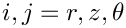 and 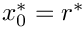 with 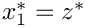. We're solving for the radial, axial and azimuthal (swirl) velocities, 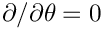 and 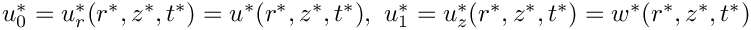, respectively, and the pressure 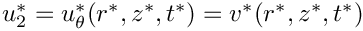. This class contains the generic maths – any concrete implementation must be derived from this |
| CAxisymmetricQCrouzeixRaviartElement | /////////////////////////////////////////////////////////////////////////// /////////////////////////////////////////////////////////////////////////// |
| CFaceGeometry< AxisymmetricQCrouzeixRaviartElement > | Face geometry of the Axisymmetric Crouzeix_Raviart elements |
| CFaceGeometry< FaceGeometry< AxisymmetricQCrouzeixRaviartElement > > | Face geometry of face geometry of the Axisymmetric Crouzeix_Raviart elements |
| CAxisymmetricQTaylorHoodElement | ///////////////////////////////////////////////////////////////////////// |
| CFaceGeometry< AxisymmetricQTaylorHoodElement > | Face geometry of the Axisymmetric Taylor_Hood elements |
| CFaceGeometry< FaceGeometry< AxisymmetricQTaylorHoodElement > > | Face geometry of the face geometry of the Axisymmetric Taylor_Hood elements |
| CProjectableAxisymmetricTaylorHoodElement | Axisymmetric Taylor Hood upgraded to become projectable |
| CFaceGeometry< ProjectableAxisymmetricTaylorHoodElement< ELEMENT > > | Face geometry for element is the same as that for the underlying wrapped element |
| CFaceGeometry< FaceGeometry< ProjectableAxisymmetricTaylorHoodElement< ELEMENT > > > | Face geometry of the Face Geometry for element is the same as that for the underlying wrapped element |
| CProjectableAxisymmetricCrouzeixRaviartElement | Crouzeix Raviart upgraded to become projectable |
| CFSIAxisymmetricQTaylorHoodElement | Axisymmetric FSI Element |
| CFaceGeometry< FSIAxisymmetricQTaylorHoodElement > | Face geometry of the Axisymmetric Taylor_Hood elements |
| CFaceGeometry< FaceGeometry< FSIAxisymmetricQTaylorHoodElement > > | Face geometry of the face geometry of the Axisymmetric Taylor_Hood elements |
| CFaceGeometry< ProjectableAxisymmetricCrouzeixRaviartElement< ELEMENT > > | Face geometry for element is the same as that for the underlying wrapped element |
| CFaceGeometry< FaceGeometry< ProjectableAxisymmetricCrouzeixRaviartElement< ELEMENT > > > | Face geometry of the Face Geometry for element is the same as that for the underlying wrapped element |
| CRefineableAxisymmetricNavierStokesEquations | Refineable version of the Axisymmetric Navier–Stokes equations |
| CRefineableAxisymmetricQTaylorHoodElement | Refineable version of Axisymmetric Quad Taylor Hood elements. (note that unlike the cartesian version this is not scale-able to higher dimensions!) |
| CFaceGeometry< RefineableAxisymmetricQTaylorHoodElement > | //////////////////////////////////////////////////////////////////////// //////////////////////////////////////////////////////////////////////// |
| CFaceGeometry< FaceGeometry< RefineableAxisymmetricQTaylorHoodElement > > | Face geometry of the RefineableQuadQTaylorHoodElements |
| CRefineableAxisymmetricQCrouzeixRaviartElement | Refineable version of Axisymmetric Quad Crouzeix Raviart elements (note that unlike the cartesian version this is not scale-able to higher dimensions!) |
| CFaceGeometry< RefineableAxisymmetricQCrouzeixRaviartElement > | Face geometry of the RefineableQuadQCrouzeixRaviartElements |
| CFaceGeometry< FaceGeometry< RefineableAxisymmetricQCrouzeixRaviartElement > > | Face geometry of the RefineableQuadQCrouzeixRaviartElements |
| CAxisymmetricTCrouzeixRaviartElement | /////////////////////////////////////////////////////////////////////////// |
| CFaceGeometry< AxisymmetricTCrouzeixRaviartElement > | Face geometry of the 2D Crouzeix_Raviart elements |
| CFaceGeometry< FaceGeometry< AxisymmetricTCrouzeixRaviartElement > > | Face geometry of the FaceGeometry of the 2D CrouzeixRaviart elements |
| CAxisymmetricTTaylorHoodElement | ///////////////////////////////////////////////////////////////////////// ///////////////////////////////////////////////////////////////////////// |
| CFaceGeometry< AxisymmetricTTaylorHoodElement > | Face geometry of the Axisymmetric Taylor_Hood elements |
| CFaceGeometry< FaceGeometry< AxisymmetricTTaylorHoodElement > > | Face geometry of the FaceGeometry of the Axisymmetric TaylorHood elements |
| CLinearisedAxisymPoroelasticBJS_FSIElement | A class for elements that allow the imposition of the linearised poroelastic FSI slip condition (according to the Beavers-Joseph-Saffman condition) from an adjacent poroelastic axisymmetric medium. The element geometry is obtained from the FaceGeometry<ELEMENT> policy class |
| CAxisymmetricPoroelasticityEquations | Class implementing the generic maths of the axisym poroelasticity equations: axisym linear elasticity coupled with axisym Darcy equations (using Raviart-Thomas elements with both edge and internal degrees of freedom) including inertia in both |
| CProjectableAxisymmetricPoroelasticityElement | ///////////////////////////////////////////////////////////////////// ///////////////////////////////////////////////////////////////////// |
| CFaceGeometry< ProjectableAxisymmetricPoroelasticityElement< ELEMENT > > | Face geometry for element is the same as that for the underlying wrapped element |
| CAxisymmetricPoroelasticityTractionElement | A class for elements that allow the imposition of an applied combined traction and pore fluid pressure in the axisym poroelasticity equations. The geometrical information can be read from the FaceGeometry<ELEMENT> class and thus, we can be generic enough without the need to have a separate equations class |
| CFSILinearisedAxisymPoroelasticTractionElement | //////////////////////////////////////////////////////////////////// //////////////////////////////////////////////////////////////////// |
| CTAxisymmetricPoroelasticityElement | ================================================================= Element which solves the Darcy/linear elasticity equations using TElements Geometrically the element is always a six noded triangle. We use the mid-side nodes to store edge-based flux degrees of freedom and internal data for the discontinuous pressure |
| CFaceGeometry< TAxisymmetricPoroelasticityElement< 0 > > | Face geometry for TAxisymmetricPoroelasticityElement<0> |
| CFaceGeometry< TAxisymmetricPoroelasticityElement< 1 > > | Face geometry for TAxisymmetricPoroelasticityElement<1> |
| CAxisymmetricPVDEquations | A class for elements that solve the equations of solid mechanics, based on the principle of virtual displacements in an axisymmetric formulation. In this case x[0] is the component of displacement in the radial direction and x[1] is that in the theta direction |
| CAxisymQPVDElement | An element that solved the AxisymmetricPVDEquations with quadratic interpolation for the positions |
| CFaceGeometry< AxisymQPVDElement > | |
| CAxisymDiagHermitePVDElement | An element that solved the AxisymmetricPVDEquations with (diagonal) Hermite interpolation for the positions – the local and global (Lagrangian) coordinates are assumed to be aligned! |
| CFaceGeometry< AxisymDiagHermitePVDElement > | Explicit definition of the face geometry for the |
| CAxisymmetricPVDEquationsWithPressure | A class for elements that solve the equations of solid mechanics, based on the principle of virtual displacements in axisymmetric coordinates in a formulation that allows for incompressibility or near incompressibility |
| CAxisymQPVDElementWithPressure | An Element that solves the Axisymmetric principle of virtual displacements with separately interpolated pressure, discontinuous interpolation |
| CFaceGeometry< AxisymQPVDElementWithPressure > | |
| CAxisymmetricSolidTractionElement | A class for elements that allow the imposition of an applied traction in the principle of virtual displacements. The geometrical information can be read from the FaceGeometry<ELEMENT> class and and thus, we can be generic enough without the need to have a separate equations class |
| CKirchhoffLoveBeamEquations | A class for elements that solve the equations of Kirchhoff-Love large-displacement (but linearly-elastic) thin-beam theory |
| CHermiteBeamElement | Hermite Kirchhoff Love beam. Implements KirchhoffLoveBeamEquations using 2-node Hermite elements as the underlying geometrical elements |
| CFSIHermiteBeamElement | Hermite Kirchhoff Love beam "upgraded" to a FSIWallElement (and thus, by inheritance, a GeomObject), so it can be used in FSI |
| CFaceGeometry< HermiteBeamElement > | //////////////////////////////////////////////////////////////////// //////////////////////////////////////////////////////////////////// |
| CClampedSlidingHermiteBeamBoundaryConditionElement | //////////////////////////////////////////////////////////////////// //////////////////////////////////////////////////////////////////// |
| CBiharmonicEquations | Biharmonic Equation Class - contains the equations |
| CBiharmonicElement | Biharmonic element class |
| CFaceGeometry< BiharmonicElement< DIM > > | Face geometry for biharmonic elements - template parameter indicates dimension of problem (i.e. bulk element), not the face elements |
| CFaceGeometry< BiharmonicElement< 1 > > | |
| CBiharmonicFluxElement | Biharmonic Flux Element |
| CBiharmonicPreconditioner | Biharmonic Preconditioner - for two dimensional problems |
| CExactSubBiharmonicPreconditioner | Sub Biharmonic Preconditioner - an exact preconditioner for the 3x3 top left hand corner sub block matrix. Used as part of the BiharmonicPreconditioner<MATRIX> . By default this uses the BBD (block-bordered-diagonal/arrow-shaped) preconditioner; can also switch to full BD version (in which case all the 3x3 blocks are retained) |
| CInexactSubBiharmonicPreconditioner | SubBiharmonic Preconditioner - an inexact preconditioner for the 3x3 top left hand corner sub block matrix. Used as part of the BiharmonicPreconditioner<MATRIX> |
| CBiharmonicProblem | Biharmonic Plate Problem Class - for problems where the load can be assumed to be acting normal to the surface of the plate and the deflections are small relative to the thickness of the plate. Developed for the topologically rectangular Hermite Element Mesh. Contains functions allowing the following boundary conditions to be applied (on a given edge): |
| CBiharmonicFluidProblem | Biharmonic Fluid Problem Class - describes stokes flow in 2D. Developed for the topologically rectangular Hermite Element Mesh. Contains functions allowing the following boundary conditions to be applied (on a given edge): |
| CBiharmonicFluidBoundaryElement | Point equation element used to impose the traction free edge (i.e. du/dn = 0) on the boundary when dt/ds_n != 0. The following equation is implemented : du/ds_n = dt/ds_n * ds_t/dt * du/dt. The bulk biharmonic elements on the boundary must be hijackable and the du/ds_n and d2u/ds_nds_t boundary DOFs hijacked when these elements are applied. At any node where dt/ds_n = 0 we can impose du/ds_n = 0 and d2u/ds_nds_t = 0 using pinning - see BiharmonicFluidProblem::impose_traction_free_edge() |
| CStrainEnergyFunction | Base class for strain energy functions to be used in solid mechanics computations |
| CMooneyRivlin | ///////////////////////////////////////////////////////////////// ///////////////////////////////////////////////////////////////// |
| CGeneralisedMooneyRivlin | ///////////////////////////////////////////////////////////////// ///////////////////////////////////////////////////////////////// |
| CConstitutiveLaw | ///////////////////////////////////////////////////////////////// ///////////////////////////////////////////////////////////////// |
| CGeneralisedHookean | ////////////////////////////////////////////////////////////////////// ////////////////////////////////////////////////////////////////////// |
| CIsotropicStrainEnergyFunctionConstitutiveLaw | ////////////////////////////////////////////////////////////////////// ////////////////////////////////////////////////////////////////////// |
| CDarcyEquations | Class implementing the generic maths of the Darcy equations using Raviart-Thomas elements with both edge and internal degrees of freedom |
| CProjectableDarcyElement | ///////////////////////////////////////////////////////////////////// ///////////////////////////////////////////////////////////////////// |
| CFaceGeometry< ProjectableDarcyElement< ELEMENT > > | Face geometry for element is the same as that for the underlying wrapped element |
| CDarcyFaceElement | A class for elements that allow the imposition of an applied pressure in the Darcy equations. The geometrical information can be read from the FaceGeometry<ELEMENT> class and and thus, we can be generic enough without the need to have a separate equations class |
| CTRaviartThomasDarcyElement | Element which solves the Darcy equations using TElements. Geometrically the element is always a six noded triangle. We use the mid-side nodes to store edge-based flux degrees of freedom and internal data for the discontinuous pressure and internal flux dofs |
| CFaceGeometry< TRaviartThomasDarcyElement< 0 > > | Face geometry for TRaviartThomasDarcyElement<0> |
| CFaceGeometry< TRaviartThomasDarcyElement< 1 > > | Face geometry for TRaviartThomasDarcyElement<1> |
| CVolumeConstraintElement | A class that is used to implement the constraint that the fluid volume in a region bounded by associated FaceElements (attached, e.g., to the mesh boundaries that enclose a bubble) must take a specific value. This GeneralisedElement is used only to store the desired volume and a pointer to the (usually pressure) freedom that must be traded for the volume constraint |
| CVolumeConstraintBoundingElement | ////////////////////////////////////////////////////////////////////// ////////////////////////////////////////////////////////////////////// |
| CLineVolumeConstraintBoundingElement | ////////////////////////////////////////////////////////////////////// ////////////////////////////////////////////////////////////////////// |
| CElasticLineVolumeConstraintBoundingElement | /////////////////////////////////////////////////////////////////// /////////////////////////////////////////////////////////////////// |
| CSpineLineVolumeConstraintBoundingElement | The one-dimensional interface elements that allow imposition of a volume constraint specialised for the case when the nodal positions of the bulk elements are adjusted using Spines. To enforce that a fluid volume has a certain volume, attach these elements to all faces of the (2D cartesian) bulk fluid elements (of type ELEMENT) that bound that region and then specify the "pressure" value that is traded for the constraint |
| CAxisymmetricVolumeConstraintBoundingElement | ////////////////////////////////////////////////////////////////////// ////////////////////////////////////////////////////////////////////// |
| CElasticAxisymmetricVolumeConstraintBoundingElement | /////////////////////////////////////////////////////////////////// /////////////////////////////////////////////////////////////////// |
| CSpineAxisymmetricVolumeConstraintBoundingElement | The axisymmetric (one-dimensional) interface elements that allow imposition of a volume constraint specialised for the case when the nodal positions of the bulk elements are adjusted using Spines. To enforce that a fluid volume has a certain volume, attach these elements to all faces of the (2D axisymmetric) bulk fluid elements (of type ELEMENT) that bound that region and then specify the "pressure" value that is traded for the constraint |
| CSurfaceVolumeConstraintBoundingElement | ////////////////////////////////////////////////////////////////////// ////////////////////////////////////////////////////////////////////// |
| CElasticSurfaceVolumeConstraintBoundingElement | /////////////////////////////////////////////////////////////////// /////////////////////////////////////////////////////////////////// |
| CSpineSurfaceVolumeConstraintBoundingElement | ////////////////////////////////////////////////////////////////////// ////////////////////////////////////////////////////////////////////// |
| CFluidInterfaceBoundingElement | Base class for elements at the boundary of free surfaces or interfaces, used typically to impose contact angle boundary conditions. The elemental dimensions are one less than those of the surface elements, or two less than those of the original bulk elements. Thus in two-dimensional and axi-symmetric problems, are points, but in three-dimensional problems, they are lines. These boundaries may be in contact with a solid surface, in which case the normal to that surface must be provided |
| CPointFluidInterfaceBoundingElement | Specialisation of the interface boundary constraint to a point |
| CLineFluidInterfaceBoundingElement | Specialisation of the interface boundary constraint to a line |
| CFluidInterfaceElement | Base class establishing common interfaces and functions for all Navier-Stokes-like fluid interface elements. Namely, elements that represent either a free surface or an interface between two fluids that have distinct momentum-like equation for each velocity component |
| CLineDerivatives | Class that establishes the surface derivative functions for LineElements. These are defined in a separate class so that they can be used by other interface equation-type classes |
| CAxisymmetricDerivatives | Class that establishes the surface derivative functions for AxisymmetricInterfaceElements. These are defined in a separate class so that they can be used by other interface equation-type classes |
| CSurfaceDerivatives | Class that establishes the surface derivative functions for SurfaceInterfaceElements (2D surfaces in 3D space) These are defined in a separate class so that they can be used by other interface equation-type classes |
| CBoundingElementType | This policy class is used to associate specific bounding elements with specific FluidInterface elements. It must be filled in for every class that uses the SpineUpdateFluidInterface<...> or ElasticUpdateFluidInterface<....> generic template classes. Examples for our default Line, Axisymmetric and Surface types are included below |
| CFluidInterfaceAdditionalValues | This policy class is used to allow additional values to be added to the nodes from new surface equations, for examples of usage see the SurfactantTransportFluidInterfaceElements. The use of this class avoids issues with calling virtual functions in constructors and avoids having a global look-up able, although it functions in much the same way. Typically, this will only be filled in by "expert users" and is only required if you want to write generic surface-element classes. Specific classes can always be overloaded on a case-by-case basis |
| CFluidInterfaceAdditionalValues< FluidInterfaceElement > | Specific policy class for the FluidInterfaceElemetnts, which do not require any additional values at the nodes |
| CSpineUpdateFluidInterfaceElement | Generic Spine node update interface template class that can be combined with a given surface equations class and surface derivative class to provide a concrete implementation of any surface element that uses spines |
| CSpinePointFluidInterfaceBoundingElement | Spine version of the PointFluidInterfaceBoundingElement |
| CSpineLineFluidInterfaceBoundingElement | Spine version of the LineFluidInterfaceBoundingElement |
| CSpineLineFluidInterfaceElement | |
| CBoundingElementType< SpineUpdateFluidInterfaceElement< FluidInterfaceElement, LineDerivatives, ELEMENT > > | |
| CSpineAxisymmetricFluidInterfaceElement | |
| CBoundingElementType< SpineUpdateFluidInterfaceElement< FluidInterfaceElement, AxisymmetricDerivatives, ELEMENT > > | |
| CSpineSurfaceFluidInterfaceElement | |
| CBoundingElementType< SpineUpdateFluidInterfaceElement< FluidInterfaceElement, SurfaceDerivatives, ELEMENT > > | |
| CElasticUpdateFluidInterfaceElement | //////////////////////////////////////////////////////////////////// //////////////////////////////////////////////////////////////////// |
| CElasticPointFluidInterfaceBoundingElement | Pseudo-elasticity version of the PointFluidInterfaceBoundingElement |
| CElasticLineFluidInterfaceBoundingElement | Pseudo-elasticity version of the LineFluidInterfaceBoundingElement |
| CElasticLineFluidInterfaceElement | Specialise the elastic update template class to concrete 1D case |
| CBoundingElementType< ElasticUpdateFluidInterfaceElement< FluidInterfaceElement, LineDerivatives, ELEMENT > > | Define the BoundingElement type associated with the 1D surface element |
| CElasticAxisymmetricFluidInterfaceElement | Specialise the Elastic update case to axisymmetric equations |
| CBoundingElementType< ElasticUpdateFluidInterfaceElement< FluidInterfaceElement, AxisymmetricDerivatives, ELEMENT > > | |
| CElasticSurfaceFluidInterfaceElement | Specialise Elastic update case to the concrete 2D case |
| CBoundingElementType< ElasticUpdateFluidInterfaceElement< FluidInterfaceElement, SurfaceDerivatives, ELEMENT > > | |
| CSurfactantTransportInterfaceElement | Generic surfactant transport equations implemented independently of the dimension and then specialised using the generic mechanisms introduce in the FluidInterfaceElements |
| CFluidInterfaceAdditionalValues< SurfactantTransportInterfaceElement > | ============================================================================= This is the policy class for the surfactanttransport equations which require one additional value for the surface concentration |
| CSpineLineSurfactantTransportInterfaceElement | Specialise to the Line geometry |
| CBoundingElementType< SpineUpdateFluidInterfaceElement< SurfactantTransportInterfaceElement, LineDerivatives, ELEMENT > > | |
| CSpineAxisymmetricSurfactantTransportInterfaceElement | Specialise to the Axisymmetric geometry |
| CBoundingElementType< SpineUpdateFluidInterfaceElement< SurfactantTransportInterfaceElement, AxisymmetricDerivatives, ELEMENT > > | |
| CElasticAxisymmetricSurfactantTransportInterfaceElement | Specialise to the Axisymmetric geometry |
| CBoundingElementType< ElasticUpdateFluidInterfaceElement< SurfactantTransportInterfaceElement, AxisymmetricDerivatives, ELEMENT > > | |
| CSpineSurfaceSurfactantTransportInterfaceElement | Specialise to surface geometry |
| CBoundingElementType< SpineUpdateFluidInterfaceElement< SurfactantTransportInterfaceElement, SurfaceDerivatives, ELEMENT > > | |
| CEulerEquations | Base class for Euler equations |
| CQSpectralEulerElement | |
| CFaceGeometry< QSpectralEulerElement< DIM, NNODE_1D > > | ///////////////////////////////////////////////////////////////////// ///////////////////////////////////////////////////////////////////// |
| CDGEulerFaceElement | FaceElement for Discontinuous Galerkin Problems |
| CDGEulerFaceReflectionElement | FaceElement for Discontinuous Galerkin Problems with reflection boundary conditions |
| CDGSpectralEulerElement | General DGEulerClass. Establish the template parameters |
| CDGSpectralEulerElement< 1, NNODE_1D > | |
| CFaceGeometry< DGSpectralEulerElement< 1, NNODE_1D > > | Face geometry of the 1D DG elements |
| CDGSpectralEulerElement< 2, NNODE_1D > | Specialisation for 2D DG Elements |
| CFaceGeometry< DGSpectralEulerElement< 2, NNODE_1D > > | Face geometry of the DG elements |
| CFluxTransportEquations | Base class for the flux transport equations templated by the dimension DIM. The equations that are solved are |
| CScalarAdvectionEquations | Base class for advection equations |
| CQSpectralScalarAdvectionElement | |
| CFaceGeometry< QSpectralScalarAdvectionElement< DIM, NNODE_1D > > | ///////////////////////////////////////////////////////////////////// ///////////////////////////////////////////////////////////////////// |
| CDGScalarAdvectionFaceElement | FaceElement for Discontinuous Galerkin Problems |
| CDGSpectralScalarAdvectionElement | General DGScalarAdvectionClass. Establish the template parameters |
| CDGSpectralScalarAdvectionElement< 1, NNODE_1D > | |
| CFaceGeometry< DGSpectralScalarAdvectionElement< 1, NNODE_1D > > | Face geometry of the 1D DG elements |
| CDGSpectralScalarAdvectionElement< 2, NNODE_1D > | Specialisation for 2D DG Elements |
| CFaceGeometry< DGSpectralScalarAdvectionElement< 2, NNODE_1D > > | Face geometry of the DG elements |
| CQScalarAdvectionElement | Non-spectral version of the classes |
| CFaceGeometry< QScalarAdvectionElement< DIM, NNODE_1D > > | ///////////////////////////////////////////////////////////////////// ///////////////////////////////////////////////////////////////////// |
| CDGScalarAdvectionElement | General DGScalarAdvectionClass. Establish the template parameters |
| CDGScalarAdvectionElement< 1, NNODE_1D > | |
| CFaceGeometry< DGScalarAdvectionElement< 1, NNODE_1D > > | Face geometry of the 1D DG elements |
| CDGScalarAdvectionElement< 2, NNODE_1D > | Specialisation for 2D DG Elements |
| CFaceGeometry< DGScalarAdvectionElement< 2, NNODE_1D > > | Face geometry of the DG elements |
| CDisplacementBasedFoepplvonKarmanEquations | A class for all isoparametric elements that solve the Foeppl von Karman equations |
| CProjectableDisplacementBasedFoepplvonKarmanElement | Foeppl von Karman upgraded to become projectable |
| CFaceGeometry< ProjectableDisplacementBasedFoepplvonKarmanElement< ELEMENT > > | Face geometry for element is the same as that for the underlying wrapped element |
| CFaceGeometry< FaceGeometry< ProjectableDisplacementBasedFoepplvonKarmanElement< ELEMENT > > > | Face geometry of the Face Geometry for element is the same as that for the underlying wrapped element |
| CFoepplvonKarmanEquations | A class for all isoparametric elements that solve the Foeppl von Karman equations |
| CQFoepplvonKarmanElement | //////////////////////////////////////////////////////////////////////// //////////////////////////////////////////////////////////////////////// |
| CFaceGeometry< QFoepplvonKarmanElement< NNODE_1D > > | ///////////////////////////////////////////////////////////////////// ///////////////////////////////////////////////////////////////////// |
| CProjectableFoepplvonKarmanElement | ///////////////////////////////////////////////////////////////////// ///////////////////////////////////////////////////////////////////// |
| CFaceGeometry< ProjectableFoepplvonKarmanElement< ELEMENT > > | Face geometry for element is the same as that for the underlying wrapped element |
| CFaceGeometry< FaceGeometry< ProjectableFoepplvonKarmanElement< ELEMENT > > > | Face geometry of the Face Geometry for element is the same as that for the underlying wrapped element |
| CFoepplvonKarmanVolumeConstraintElement | A class which allows the user to specify a prescribed volume (as opposed to a prescribed pressure) for in the region bounded by the membrane. Effectively adds an equation to the system for pressure. There would usually only be a single instance of this element in a problem |
| CTDisplacementBasedFoepplvonKarmanElement | ////////////////////////////////////////////////////////////////////// |
| CFaceGeometry< TDisplacementBasedFoepplvonKarmanElement< NNODE_1D > > | Face geometry for the TDisplacementBasedFoepplvonKarmanElement |
| CTFoepplvonKarmanElement | ////////////////////////////////////////////////////////////////////// |
| CFaceGeometry< TFoepplvonKarmanElement< NNODE_1D > > | Face geometry for the TFoepplvonKarmanElement elements: The spatial dimension of the face elements is one lower than that of the bulk element but they have the same number of points along their 1D edges |
| CFourierDecomposedHelmholtzBCElementBase | ////////////////////////////////////////////////////////////////// ////////////////////////////////////////////////////////////////// |
| CFourierDecomposedHelmholtzDtNMesh | /////////////////////////////////////////////////////////////////// /////////////////////////////////////////////////////////////////// |
| CFourierDecomposedHelmholtzDtNBoundaryElement | ////////////////////////////////////////////////////////////////// |
| CFourierDecomposedHelmholtzEquations | //////////////////////////////////////////////////////////////////// //////////////////////////////////////////////////////////////////// |
| CQFourierDecomposedHelmholtzElement | //////////////////////////////////////////////////////////////////////// //////////////////////////////////////////////////////////////////////// |
| CFaceGeometry< QFourierDecomposedHelmholtzElement< NNODE_1D > > | ///////////////////////////////////////////////////////////////////// ///////////////////////////////////////////////////////////////////// |
| CProjectableFourierDecomposedHelmholtzElement | ///////////////////////////////////////////////////////////////////// ///////////////////////////////////////////////////////////////////// |
| CFaceGeometry< ProjectableFourierDecomposedHelmholtzElement< ELEMENT > > | Face geometry for element is the same as that for the underlying wrapped element |
| CFaceGeometry< FaceGeometry< ProjectableFourierDecomposedHelmholtzElement< ELEMENT > > > | Face geometry of the Face Geometry for element is the same as that for the underlying wrapped element |
| CFourierDecomposedHelmholtzFluxElement | A class for elements that allow the imposition of an applied flux on the boundaries of Fourier decomposed Helmholtz elements. The element geometry is obtained from the FaceGeometry<ELEMENT> policy class |
| CTFourierDecomposedHelmholtzElement | ////////////////////////////////////////////////////////////////////// |
| CFaceGeometry< TFourierDecomposedHelmholtzElement< NNODE_1D > > | Face geometry for the TFourierDecomposedHelmholtzElement elements: The spatial dimension of the face elements is one lower than that of the bulk element but they have the same number of points along their 1D edges |
| CGeneralisedNewtonianAxisymmetricNavierStokesEquations | A class for elements that solve the unsteady axisymmetric Navier–Stokes equations in cylindrical polar coordinates, and with . We're solving for the radial, axial and azimuthal (swirl) velocities, and , respectively, and the pressure . This class contains the generic maths – any concrete implementation must be derived from this |
| CGeneralisedNewtonianAxisymmetricQCrouzeixRaviartElement | /////////////////////////////////////////////////////////////////////////// /////////////////////////////////////////////////////////////////////////// |
| CFaceGeometry< GeneralisedNewtonianAxisymmetricQCrouzeixRaviartElement > | Face geometry of the GeneralisedNewtonianAxisymmetric Crouzeix_Raviart elements |
| CFaceGeometry< FaceGeometry< GeneralisedNewtonianAxisymmetricQCrouzeixRaviartElement > > | Face geometry of face geometry of the GeneralisedNewtonianAxisymmetric Crouzeix_Raviart elements |
| CGeneralisedNewtonianAxisymmetricQTaylorHoodElement | ///////////////////////////////////////////////////////////////////////// |
| CFaceGeometry< GeneralisedNewtonianAxisymmetricQTaylorHoodElement > | Face geometry of the GeneralisedNewtonianAxisymmetric Taylor_Hood elements |
| CFaceGeometry< FaceGeometry< GeneralisedNewtonianAxisymmetricQTaylorHoodElement > > | Face geometry of the face geometry of the GeneralisedNewtonianAxisymmetric Taylor_Hood elements |
| CGeneralisedNewtonianProjectableAxisymmetricTaylorHoodElement | GeneralisedNewtonianAxisymmetric Taylor Hood upgraded to become projectable |
| CFaceGeometry< GeneralisedNewtonianProjectableAxisymmetricTaylorHoodElement< ELEMENT > > | Face geometry for element is the same as that for the underlying wrapped element |
| CFaceGeometry< FaceGeometry< GeneralisedNewtonianProjectableAxisymmetricTaylorHoodElement< ELEMENT > > > | Face geometry of the Face Geometry for element is the same as that for the underlying wrapped element |
| CGeneralisedNewtonianProjectableAxisymmetricCrouzeixRaviartElement | Crouzeix Raviart upgraded to become projectable |
| CFaceGeometry< GeneralisedNewtonianProjectableAxisymmetricCrouzeixRaviartElement< ELEMENT > > | Face geometry for element is the same as that for the underlying wrapped element |
| CFaceGeometry< FaceGeometry< GeneralisedNewtonianProjectableAxisymmetricCrouzeixRaviartElement< ELEMENT > > > | Face geometry of the Face Geometry for element is the same as that for the underlying wrapped element |
| CRefineableGeneralisedNewtonianAxisymmetricNavierStokesEquations | Refineable version of the Axisymmetric Navier–Stokes equations |
| CRefineableGeneralisedNewtonianAxisymmetricQTaylorHoodElement | Refineable version of Axisymmetric Quad Taylor Hood elements. (note that unlike the cartesian version this is not scale-able to higher dimensions!) |
| CFaceGeometry< RefineableGeneralisedNewtonianAxisymmetricQTaylorHoodElement > | //////////////////////////////////////////////////////////////////////// //////////////////////////////////////////////////////////////////////// |
| CFaceGeometry< FaceGeometry< RefineableGeneralisedNewtonianAxisymmetricQTaylorHoodElement > > | Face geometry of the RefineableQuadQTaylorHoodElements |
| CRefineableGeneralisedNewtonianAxisymmetricQCrouzeixRaviartElement | Refineable version of Axisymmetric Quad Crouzeix Raviart elements (note that unlike the cartesian version this is not scale-able to higher dimensions!) |
| CFaceGeometry< RefineableGeneralisedNewtonianAxisymmetricQCrouzeixRaviartElement > | Face geometry of the RefineableQuadQCrouzeixRaviartElements |
| CFaceGeometry< FaceGeometry< RefineableGeneralisedNewtonianAxisymmetricQCrouzeixRaviartElement > > | Face geometry of the RefineableQuadQCrouzeixRaviartElements |
| CGeneralisedNewtonianAxisymmetricTCrouzeixRaviartElement | /////////////////////////////////////////////////////////////////////////// |
| CFaceGeometry< GeneralisedNewtonianAxisymmetricTCrouzeixRaviartElement > | Face geometry of the 2D Crouzeix_Raviart elements |
| CFaceGeometry< FaceGeometry< GeneralisedNewtonianAxisymmetricTCrouzeixRaviartElement > > | Face geometry of the FaceGeometry of the 2D CrouzeixRaviart elements |
| CGeneralisedNewtonianAxisymmetricTTaylorHoodElement | ///////////////////////////////////////////////////////////////////////// ///////////////////////////////////////////////////////////////////////// |
| CFaceGeometry< GeneralisedNewtonianAxisymmetricTTaylorHoodElement > | Face geometry of the GeneralisedNewtonianAxisymmetric Taylor_Hood elements |
| CFaceGeometry< FaceGeometry< GeneralisedNewtonianAxisymmetricTTaylorHoodElement > > | Face geometry of the FaceGeometry of the |
| CGeneralisedNewtonianTemplateFreeNavierStokesEquationsBase | //////////////////////////////////////////////////////////////////// //////////////////////////////////////////////////////////////////// |
| CGeneralisedNewtonianNavierStokesEquations | //////////////////////////////////////////////////////////////////// //////////////////////////////////////////////////////////////////// |
| CGeneralisedNewtonianQCrouzeixRaviartElement | /////////////////////////////////////////////////////////////////////////// /////////////////////////////////////////////////////////////////////////// |
| CFaceGeometry< GeneralisedNewtonianQCrouzeixRaviartElement< 2 > > | Face geometry of the 2D Crouzeix_Raviart elements |
| CFaceGeometry< GeneralisedNewtonianQCrouzeixRaviartElement< 3 > > | Face geometry of the 3D Crouzeix_Raviart elements |
| CFaceGeometry< FaceGeometry< GeneralisedNewtonianQCrouzeixRaviartElement< 2 > > > | Face geometry of the FaceGeometry of the 2D Crouzeix_Raviart elements |
| CFaceGeometry< FaceGeometry< GeneralisedNewtonianQCrouzeixRaviartElement< 3 > > > | Face geometry of the FaceGeometry of the 3D Crouzeix_Raviart elements |
| CGeneralisedNewtonianQTaylorHoodElement | ///////////////////////////////////////////////////////////////////////// |
| CFaceGeometry< GeneralisedNewtonianQTaylorHoodElement< 2 > > | Face geometry of the 2D Taylor_Hood elements |
| CFaceGeometry< GeneralisedNewtonianQTaylorHoodElement< 3 > > | Face geometry of the 3D Taylor_Hood elements |
| CFaceGeometry< FaceGeometry< GeneralisedNewtonianQTaylorHoodElement< 2 > > > | Face geometry of the FaceGeometry of the 2D Taylor Hoodelements |
| CFaceGeometry< FaceGeometry< GeneralisedNewtonianQTaylorHoodElement< 3 > > > | Face geometry of the FaceGeometry of the 3D Taylor_Hood elements |
| CProjectableGeneralisedNewtonianTaylorHoodElement | ///////////////////////////////////////////////////////////////// ///////////////////////////////////////////////////////////////// |
| CFaceGeometry< ProjectableGeneralisedNewtonianTaylorHoodElement< ELEMENT > > | Face geometry for element is the same as that for the underlying wrapped element |
| CFaceGeometry< FaceGeometry< ProjectableGeneralisedNewtonianTaylorHoodElement< ELEMENT > > > | Face geometry of the Face Geometry for element is the same as that for the underlying wrapped element |
| CProjectableGeneralisedNewtonianCrouzeixRaviartElement | Crouzeix Raviart upgraded to become projectable |
| CFaceGeometry< ProjectableGeneralisedNewtonianCrouzeixRaviartElement< ELEMENT > > | Face geometry for element is the same as that for the underlying wrapped element |
| CFaceGeometry< FaceGeometry< ProjectableGeneralisedNewtonianCrouzeixRaviartElement< ELEMENT > > > | Face geometry of the Face Geometry for element is the same as that for the underlying wrapped element |
| CRefineableGeneralisedNewtonianNavierStokesEquations | //////////////////////////////////////////////////////////////////// //////////////////////////////////////////////////////////////////// |
| CRefineableGeneralisedNewtonianQTaylorHoodElement | Refineable version of Taylor Hood elements. These classes can be written in total generality |
| CFaceGeometry< RefineableGeneralisedNewtonianQTaylorHoodElement< DIM > > | Face geometry of the RefineableQTaylorHoodElements is the same as the Face geometry of the QTaylorHoodElements |
| CFaceGeometry< FaceGeometry< RefineableGeneralisedNewtonianQTaylorHoodElement< DIM > > > | Face geometry of the face geometry of the RefineableQTaylorHoodElements is the same as the Face geometry of the Face geometry of QTaylorHoodElements |
| CRefineableGeneralisedNewtonianQCrouzeixRaviartElement | //////////////////////////////////////////////////////////////////////// //////////////////////////////////////////////////////////////////////// |
| CPRefineableGeneralisedNewtonianQCrouzeixRaviartElement | P-refineable version of Crouzeix Raviart elements. Generic class definitions |
| CFaceGeometry< RefineableGeneralisedNewtonianQCrouzeixRaviartElement< DIM > > | Face geometry of the RefineableQuadQCrouzeixRaviartElements |
| CFaceGeometry< FaceGeometry< RefineableGeneralisedNewtonianQCrouzeixRaviartElement< DIM > > > | Face geometry of the face geometry of the RefineableQCrouzeixRaviartElements is the same as the Face geometry of the Face geometry of QCrouzeixRaviartElements |
| CGeneralisedNewtonianTCrouzeixRaviartElement | /////////////////////////////////////////////////////////////////////////// |
| CFaceGeometry< GeneralisedNewtonianTCrouzeixRaviartElement< 2 > > | Face geometry of the 2D Crouzeix_Raviart elements |
| CFaceGeometry< GeneralisedNewtonianTCrouzeixRaviartElement< 3 > > | Face geometry of the 3D Crouzeix_Raviart elements |
| CFaceGeometry< FaceGeometry< GeneralisedNewtonianTCrouzeixRaviartElement< 2 > > > | Face geometry of the FaceGeometry of the 2D CrouzeixRaviart elements |
| CFaceGeometry< FaceGeometry< GeneralisedNewtonianTCrouzeixRaviartElement< 3 > > > | Face geometry of the FaceGeometry of the 3D Crouzeix_Raviart elements |
| CGeneralisedNewtonianTTaylorHoodElement | ///////////////////////////////////////////////////////////////////////// ///////////////////////////////////////////////////////////////////////// |
| CFaceGeometry< GeneralisedNewtonianTTaylorHoodElement< 2 > > | Face geometry of the 2D Taylor_Hood elements |
| CFaceGeometry< GeneralisedNewtonianTTaylorHoodElement< 3 > > | Face geometry of the 3D Taylor_Hood elements |
| CFaceGeometry< FaceGeometry< GeneralisedNewtonianTTaylorHoodElement< 2 > > > | Face geometry of the FaceGeometry of the 2D TaylorHood elements |
| CFaceGeometry< FaceGeometry< GeneralisedNewtonianTTaylorHoodElement< 3 > > > | Face geometry of the FaceGeometry of the 3D Crouzeix_Raviart elements |
| CAlgebraicNode | //////////////////////////////////////////////////////////////////// |
| CAlgebraicElementBase | //////////////////////////////////////////////////////////////////// |
| CAlgebraicElement | Algebraic elements are elements that have AlgebraicNodes whose position is determined by the geometric Data in the GeomObjects that are involved in their node update functions. Algebraic Elements include the derivatives w.r.t. any unknowns that are stored in this geometric Data into the element's Jacobian matrix. Otherwise they behave exactly like the templace element |
| CFaceGeometry< AlgebraicElement< ELEMENT > > | Explicit definition of the face geometry of algebraic elements: the same as the face geometry of the underlying element |
| CAlgebraicMesh | //////////////////////////////////////////////////////////////////// |
| CDummyAlgebraicMesh | //////////////////////////////////////////////////////////////////// |
| CAssemblyHandler | A class that is used to define the functions used to assemble the elemental contributions to the residuals vector and Jacobian matrix that define the problem being solved. The main use of this class is to assemble and solve the augmented systems used in bifurcation detection and tracking. The default implementation merely calls the underlying elemental functions with no augmentation |
| CExplicitTimeStepHandler | A class that is used to define the functions used to assemble and invert the mass matrix when taking an explicit timestep. The idea is simply to replace the jacobian matrix with the mass matrix and then our standard linear solvers will solve the required system |
| CEigenProblemHandler | A class that is used to define the functions used to assemble the elemental contributions to the mass matrix and jacobian (stiffness) matrix that define a generalised eigenproblem |
| CParallelResidualsHandler | A class that is used to assemble the residuals in parallel by overloading the get_all_vectors_and_matrices, so that only the residuals are returned. This ensures that the (moderately complex) distributed parallel assembly loops are only in one place |
| CParameterDerivativeHandler | A class that is used to define the functions used when assembling the derivatives of the residuals with respect to a parameter. The idea is to replace get_residuals with get_dresiduals_dparameter with a particular parameter and assembly handler that are passed on assembly |
| CAugmentedBlockFoldLinearSolver | A custom linear solver class that is used to solve a block-factorised version of the Fold bifurcation detection problem |
| CFoldHandler | A class that is used to assemble the augmented system that defines a fold (saddle-node) or limit point. The "standard" problem must be a function of a global paramter  , and a solution is , and a solution is  , where , where  are the unknowns in the problem. A limit point is formally specified by the augmented system of size are the unknowns in the problem. A limit point is formally specified by the augmented system of size  |
| CBlockPitchForkLinearSolver | A custom linear solver class that is used to solve a block-factorised version of the PitchFork bifurcation detection problem |
| CAugmentedBlockPitchForkLinearSolver | A custom linear solver class that is used to solve a block-factorised version of the PitchFork bifurcation detection problem |
| CPitchForkHandler | A class that is used to assemble the augmented system that defines a pitchfork (symmetry-breaking) bifurcation. The "standard" problem must be a function of a global parameter 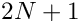 and a solution is 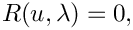, where 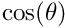 are the unknowns in the problem. A pitchfork bifurcation may be specified by the augmented system of size 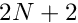 |
| CBlockHopfLinearSolver | A custom linear solver class that is used to solve a block-factorised version of the Hopf bifurcation detection problem |
| CHopfHandler | A class that is used to assemble the augmented system that defines a Hopf bifurcation. The "standard" problem must be a function of a global parameter and a solution is 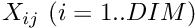, where are the unknowns in the problem. A Hopf bifurcation may be specified by the augmented system of size 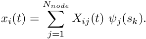 |
| CBinaryTree | BinaryTree class: Recursively defined, generalised binary tree |
| CBinaryTreeRoot | BinaryTreeRoot is a BinaryTree that forms the root of a (recursive) binary tree. The "root node" is special as it holds additional information about its neighbours |
| CBinaryTreeForest | A BinaryTreeForest consists of a collection of BinaryTreeRoots. Each member tree can have neighbours to its left and right |
| CBlockSelector | Data structure to store information about a certain "block" or sub-matrix from the overall matrix in the block preconditioning framework |
| CBlockPreconditioner | Block Preconditioner base class. The block structure of the overall problem is determined from the Mesh's constituent elements. Each constituent element must be block-preconditionable - i.e must implement the GeneralisedElements functions ndof_types() and get_dof_numbers_for_unknowns(...). A Problem can have several Meshes, but each Mesh must contain elements with the same DOF types. The association between global degrees of freedom and their unique local dof numbers is therefore based on information provided by the elements. We refer to the local dof numbers provided by the elements as the elemental dof numbers |
| CDummyBrickElement | //////////////////////////////////////////////////////////////// //////////////////////////////////////////////////////////////// |
| CBrickMeshBase | //////////////////////////////////////////////////////////////////////// //////////////////////////////////////////////////////////////////////// |
| CDenseMatrix | //////////////////////////////////////////////////////////////////////////// //////////////////////////////////////////////////////////////////////////// |
| COomphCommunicator | An oomph-lib wrapper to the MPI_Comm communicator object. Just contains an MPI_Comm object (which is a pointer) and wrappers to the MPI_... methods |
| CComplexMatrixBase | Abstract base class for matrices of complex doubles – adds abstract interfaces for solving, LU decomposition and multiplication by vectors |
| CDenseComplexMatrix | Class of matrices containing double complex, and stored as a DenseMatrix<complex<double> >, but with solving functionality inherited from the abstract ComplexMatrix class |
| CCRComplexMatrix | A class for compressed row matrices |
| CCCComplexMatrix | A class for compressed column matrices that store doubles |
| CDGFaceElement | Base class for Discontinuous Galerkin Faces. These are responsible for calculating the normal fluxes that provide the communication between the discontinuous elements |
| CDGElement | A Base class for DGElements |
| CDGMesh | |
| CSlopeLimiter | Base class for slope limiters |
| CMinModLimiter | |
| CDisplacementControlElement | Displacement control element: In the "normal" formulation of solid mechanics problems, the external load is given and the displacement throughout the solid body is computed. For highly nonlinear problems it is sometimes helpful to re-formulate the problem by prescribing the position of a selected control point and treating the (scalar) load level required to achieve this deformation as an unknown. As an example consider the buckling of pressure-loaded, thin-walled elastic shells. The load-displacement characteristics of such structures tend to be highly nonlinear and bifurcations from the structure's pre-buckling state often occur via sub-critical bifurcations. If we have some a-priori knowledge of the expected deformation (for example, during the non-axisymmetric buckling of a circular cylindrical shell certain material points will be displaced radially inwards), it is advantageous to prescribe the radial displacement of a carefully selected control point and treat the external pressure as an unknown |
| CDomain | Base class for Domains with curvilinear and/or time-dependent boundaries. Domain boundaries are typically represented by GeomObject s and the Domain itself is decomposed into a number of MacroElement s as shown in this 2D example: |
| CWarpedCubeDomain | ////////////////////////////////////////////////////////////////////// |
| CDoubleMultiVector | A multi vector in the mathematical sense, initially developed for linear algebra type applications. If MPI then this multi vector can be distributed - its distribution is described by the LinearAlgebraDistribution object at Distribution_pt. Data is stored in a C-style pointer vector (double*) |
| CDoubleVector | A vector in the mathematical sense, initially developed for linear algebra type applications. If MPI then this vector can be distributed - its distribution is described by the LinearAlgebraDistribution object at Distribution_pt. Data is stored in a C-style pointer vector (double*) |
| CDoubleVectorHaloScheme | A class that stores the halo/haloed entries required when using a DoubleVectorWithHaloEntries. This is a separate class so thay many different Vectors can share the same object. The constructor requires the distribution of the DoubleVector (if you pass in a different distribution things will go badly wrong) and a vector that specifies which GLOBAL eqn numbers are required on each processor |
| CDoubleVectorWithHaloEntries | ===================================================================== An extension of DoubleVector that allows access to certain global entries that are not stored locally. Synchronisation of these values must be performed manually by calling the synchronise() function. Synchronisation can only be from the haloed to the halo, but the local halo entries can all be summed and stored in the |
| CEigenSolver | Base class for all EigenProblem solves. This simply defines standard interfaces so that different solvers can be used easily |
| CARPACK | Class for the ARPACK eigensolver |
| CLAPACK_QZ | Class for the LAPACK QZ eigensolver |
| CDummyMesh | ///////////////////////////////////////////////////////////////////// ///////////////////////////////////////////////////////////////////// |
| CSolidICProblem | ///////////////////////////////////////////////////////////////////// ///////////////////////////////////////////////////////////////////// |
| CElementWithExternalElement | This is a base class for all elements that require external sources (e.g. FSI, multi-domain problems such as Helmholtz, multi-mesh Boussinesq convection, etc.). It provides storage for the source element and corresponding local coordinate at each integration point, and allows use of locate_zeta to obtain such source elements. In addition separate storage is allocated for all field data in the external elements and all geometric data that can affect the field data in the external elements. Generic finite difference routines are provided to calculate entries in the Jacobian from the data of the external elements |
| CElementWithMovingNodes | /////////////////////////////////////////////////////////////////////// /////////////////////////////////////////////////////////////////////// |
| CElementWithSpecificMovingNodes | Specific implementation of the class for specified element and node type |
| CGeneralisedElement | A Generalised Element class |
| CFiniteElement | A general Finite Element class |
| CPointElement | /////////////////////////////////////////////////////////////////////// /////////////////////////////////////////////////////////////////////// |
| CSolidInitialCondition | A class to specify the initial conditions for a solid body. Solid bodies are often discretised with Hermite-type elements, for which the assignment of the generalised nodal values is nontrivial since they represent derivatives w.r.t. to the local coordinates. A SolidInitialCondition object specifies initial position (i.e. shape), velocity and acceleration of the structure with a geometric object. An integer specifies which time-derivative derivative is currently assigned. See example codes for a demonstration of its use |
| CSolidFiniteElement | ////////////////////////////////////////////////////////////////////// ////////////////////////////////////////////////////////////////////// |
| CFaceElement | FaceElements are elements that coincide with the faces of higher-dimensional "bulk" elements. They are used on boundaries where additional non-trivial boundary conditions need to be applied. Examples include free surfaces, and applied traction conditions. In many cases, FaceElements need to evaluate to quantities in the associated bulk elements. For instance, the evaluation of a shear stresses on 2D FaceElement requires the evaluation of velocity derivatives in the associated 3D volume element etc. Therefore we store a pointer to the associated bulk element, and information about the relation between the local coordinates in the face and bulk elements |
| CSolidFaceElement | SolidFaceElements combine FaceElements and SolidFiniteElements and overload various functions so they work properly in the FaceElement context |
| CSolidPointElement | //////////////////////////////////////////////////////////////////// //////////////////////////////////////////////////////////////////// |
| CFaceGeometry | //////////////////////////////////////////////////////////////////// //////////////////////////////////////////////////////////////////// |
| CDummyFaceElement | //////////////////////////////////////////////////////////////////// //////////////////////////////////////////////////////////////////// |
| CElementWithDragFunction | //////////////////////////////////////////////////////////////////// //////////////////////////////////////////////////////////////////// |
| CFreeStandingFaceElement | //////////////////////////////////////////////////////////////////// //////////////////////////////////////////////////////////////////// |
| CSolidElementWithDiagonalMassMatrix | //////////////////////////////////////////////////////////////////// //////////////////////////////////////////////////////////////////// |
| CNavierStokesElementWithDiagonalMassMatrices | //////////////////////////////////////////////////////////////////// //////////////////////////////////////////////////////////////////// |
| CErrorEstimator | Base class for spatial error estimators |
| CElementWithZ2ErrorEstimator | Base class for finite elements that can compute the quantities that are required for the Z2 error estimator |
| CZ2ErrorEstimator | Z2-error-estimator: Elements that can be used with Z2 error estimation should be derived from the base class ElementWithZ2ErrorEstimator and implement its pure virtual member functions to provide the following functionality: |
| CDummyErrorEstimator | ///////////////////////////////////////////////////////////////////// ///////////////////////////////////////////////////////////////////// |
| CExplicitTimeSteppableObject | Class for objects than can be advanced in time by an Explicit Timestepper. WARNING: For explicit time stepping to work the object's residual function (as used by get_inverse_mass_matrix_times_residuals(..)) MUST be in the form r = f(t, u) - [timestepper approximation to dudt]! Standard implicit time stepping will work with plenty of residuals that don't fit into this form. Some examples where implicit time stepping will work fine but explicit will fail: 1) The negation of the above formula, this implementation will end up using dudt = - f(u,t). 2) A residual which is implicit or non-linear in dudt, such as r = dudt |
| CExplicitTimeStepper | A Base class for explicit timesteppers |
| CEuler | =========================================================== Simple first-order Euler Timestepping |
| CRungeKutta | =========================================================== Standard Runge Kutta Timestepping |
| CLowStorageRungeKutta | =========================================================== Runge Kutta Timestepping that uses low storage |
| CEBDF3 | =========================================================== An explicit version of BDF3 (i.e. uses derivative evaluation at y_n instead of y_{n+1}). Useful as a predictor because it is third order accurate but requires only one function evaluation (i.e. only one mass matrix inversion + residual calculation) |
| CExtrudedDomain | Base class for ExtrudedDomains with curvilinear and/or time-dependent boundaries. ExtrudedDomain boundaries are typically represented by GeomObjects and the ExtrudedDomain itself is decomposed into a number of ExtrudedMacroElements. Any instantiation of a specific ExtrudedDomain needs to implement the pure virtual member function |
| CExtrudedMacroElement | DRAIG: FILL IN COMPLETE DESCRIPTION ONCE FINISHED.. |
| CQExtrudedMacroElement | //////////////////////////////////////////////////////////////////////// //////////////////////////////////////////////////////////////////////// |
| CQExtrudedMacroElement< 3 > | DRAIG: FILL IN COMPLETE DESCRIPTION ONCE FINISHED.. |
| CFaceElementAsGeomObject | Class that is used to create FaceElement from bulk elements and to provide these FaceElement with a geometric object representation. The local coordinates of the FaceElements are used as the intrinisic coordinates for its GeomObject representation |
| CCompareBoundaryCoordinate | A class to do comparison of the elements by lexicographic ordering, based on the boundary coordinates at the element's first node |
| CGenericLagrangeInterpolatedProjectableElement | /////////////////////////////////////////////////////////////////////// /////////////////////////////////////////////////////////////////////// |
| CBackupMeshForProjection | //////////////////////////////////////////////////////////////////// //////////////////////////////////////////////////////////////////// |
| CHSL_MA42 | Linear solver class that provides a wrapper to the frontal solver MA42 from the HSL library; see http://www.hsl.rl.ac.uk/. |
| CFSIFluidElement | ///////////////////////////////////////////////////////////////////////// |
| CFSIWallElement | ////////////////////////////////////////////////////////////////////////// ////////////////////////////////////////////////////////////////////////// |
| CGeneralPurposeBlockPreconditioner | Base class for general purpose block preconditioners. Deals with setting subsidiary preconditioners and dof to block maps. Subsidiary preconditioners can be set in two ways: 1) A pointer to a subsidiary preconditioner for block i can be passed to set_subsidiary_preconditioner_pt(prec, i). 2) A default subsidiary preconditioner can be set up by providing a function pointer to a function which creates a preconditioner. During setup() all unset subsidiary preconditioner pointers will be filled in using this function. By default this uses SuperLU |
| CBlockDiagonalPreconditioner | Block diagonal preconditioner. By default SuperLU is used to solve the subsidiary systems, but other preconditioners can be used by setting them using passing a pointer to a function of type SubsidiaryPreconditionerFctPt to the method subsidiary_preconditioner_function_pt() |
| CBlockTriangularPreconditioner | //////////////////////////////////////////////////////////////////////////// //////////////////////////////////////////////////////////////////////////// |
| CExactBlockPreconditioner | //////////////////////////////////////////////////////////////////////////// //////////////////////////////////////////////////////////////////////////// |
| CBlockAntiDiagonalPreconditioner | Block "anti-diagonal" preconditioner, i.e. same as block diagonal but along the other diagonal of the matrix (top-right to bottom-left) |
| CDummyBlockPreconditioner | Preconditioner that doesn't actually do any preconditioning, it just allows access to the Jacobian blocks. This is pretty hacky but oh well. |
| CMatrixBasedDiagPreconditioner | Matrix-based diagonal preconditioner |
| CMatrixBasedLumpedPreconditioner | Matrix-based lumped preconditioner |
| CCompressedMatrixCoefficient | Class for a compressed-matrix coefficent (for either CC or CR matrices). Contains the (row or column) index and value of a coefficient in a compressed row or column. Currently only used in ILU(0) for CCDoubleMatrices to allow the coefficients in each compressed column [row] to be sorted by their row [column] index |
| CILUZeroPreconditioner | ILU(0) Preconditioner |
| CILUZeroPreconditioner< CCDoubleMatrix > | ILU(0) Preconditioner for matrices of CCDoubleMatrix Format |
| CILUZeroPreconditioner< CRDoubleMatrix > | ILU(0) Preconditioner for matrices of CRDoubleMatrix Format |
| CInnerIterationPreconditioner | A preconditioner for performing inner iteration preconditioner solves. The template argument SOLVER specifies the inner iteration solver (which must be derived from IterativeLinearSolver) and the template argument PRECONDITIONER specifies the preconditioner for the inner iteration iterative solver. Note: For no preconditioning use the IdentityPreconditioner |
| CGeneralisedNewtonianConstitutiveEquation | A Base class defining the generalise Newtonian constitutive relation |
| CNewtonianConstitutiveEquation | A GeneralisedNewtonianConstitutiveEquation class defining a Newtonian fluid |
| CPowerLawBerEngRegConstitutiveEquation | A GeneralisedNewtonianConstitutiveEquation class defining a power-law fluid regularised according to Bercovier and Engelman (1980) to allow for n < 1 |
| CHerschelBulkleyBerEngRegConstitutiveEquation | A GeneralisedNewtonianConstitutiveEquation class defining a Herschel-Bulkley fluid using Bercovier and Engelman's (1980) regularisation |
| CHerschelBulkleyTanMilRegConstitutiveEquation | A GeneralisedNewtonianConstitutiveEquation class defining a Herschel-Bulkley fluid using Tanner and Milthorpe's (1983) regularisation |
| CHerschelBulkleyTanMilRegWithBlendingConstitutiveEquation | A GeneralisedNewtonianConstitutiveEquation class defining a Herschel-Bulkley fluid using Tanner and Milthorpe's (1983) regularisation with a smooth transition using a quadratic |
| CHerschelBulkleyPapRegConstitutiveEquation | A GeneralisedNewtonianConstitutiveEquation class defining a Herschel-Bulkley fluid using Papanastasiou's (1987) regularisation |
| CHerschelBulkleyMenDutRegConstitutiveEquation | A GeneralisedNewtonianConstitutiveEquation class defining a Herschel-Bulkley fluid using Mendes and Dutra's (2004) regularisation |
| CSiskoTanMilRegWithBlendingConstitutiveEquation | A GeneralisedNewtonianConstitutiveEquation class defining a Sisko fluid using Tanner and Milthorpe's (1983) regularisation with a smooth transition using a cubic (for n < 1) |
| CCassonTanMilRegWithBlendingConstitutiveEquation | A GeneralisedNewtonianConstitutiveEquation class defining a Casson model fluid using Tanner and Milthorpe's (1983) regularisation with a smooth transition using a cubic |
| CNicosConstitutiveEquation | A GeneralisedNewtonianConstitutiveEquation class defining an arbitrary shear-thinning fluid |
| CTanhProfileConstitutiveEquation | A GeneralisedNewtonianConstitutiveEquation class defining a fluid following a tanh-profile |
| CGeneralisedTimeStepper | Generalised timestepper that can serve a variety of purposes in continuation, bifurcation detection and periodic-orbit computations. The key generalisation is that more than one of the entries is actually a degree of freedom in the problem. These are distinct from our standard (implict) Timesteppers in which the only dof is the current value (first entry in the storage scheme). These objects will typically be used to replace exisiting timesteppers for specific tasks |
| CContinuationStorageScheme | GeneralisedTimestepper used to store the arclength derivatives and pervious solutions required in continuation problems. The data is stored as auxilliary data in the (fake) TimeStepper so that spatial adaptivity will be handled automatically through our standard mechanisms. The adopted storage scheme is that the continuation derivatives will be stored at the first auxilliary value and the previous value will be the second auixilliary value |
| CDiskLikeGeomObjectWithBoundaries | Base class for upgraded disk-like GeomObject (i.e. 2D surface in 3D space) with specification of boundaries. The GeomObject's position(...) function computes the 3D (Eulerian) position vector r as a function of the 2D intrinsic (Lagrangian) coordinates, zeta, without reference to any boundaries. This class specifies the boundaries by specifying a mapping from a 1D intrinsic boundary coordinate, zeta_bound, to the 2D intrinsic (Lagrangian) coordinates, zeta |
| CWarpedCircularDisk | ////////////////////////////////////////////////////////////////// ////////////////////////////////////////////////////////////////// |
| CWarpedCircularDiskWithAnnularInternalBoundary | ////////////////////////////////////////////////////////////////// ////////////////////////////////////////////////////////////////// |
| CGeomObject | ///////////////////////////////////////////////////////////////////// |
| CStraightLine | //////////////////////////////////////////////////////////////////// |
| CEllipse | //////////////////////////////////////////////////////////////////// |
| CCircle | //////////////////////////////////////////////////////////////////// |
| CEllipticalTube | //////////////////////////////////////////////////////////////////// //////////////////////////////////////////////////////////////////// |
| CMGProblem | MGProblem class; subclass of Problem |
| CMGSolver | /////////////////////////////////////////////////////// /////////////////////////////////////////////////////// |
| CMGPreconditioner | An interface to allow scalar MG to be used as a Preconditioner |
| CGeompackQuadScaffoldMesh | Mesh that is based on input files generated by the quadrilateral mesh generator Geompack |
| CQHermiteElementBase | Empty base class for QHermiteElements (created so that we can use dynamic_cast<>() to figure out if a an element is a QHermiteElement) |
| CQHermiteElement | /////////////////////////////////////////////////////////////////// /////////////////////////////////////////////////////////////////// |
| CDiagQHermiteElement | These elements are exactly the same as QHermiteElements, but they employ the simplifying assumption that the local and global coordinates are aligned. This makes the evaluation of the derivatives of the shape functions much cheaper |
| CSolidQHermiteElement | //////////////////////////////////////////////////////////////////// |
| CSolidDiagQHermiteElement | SolidQHermiteElements in which we assume the local and global coordinates to be aligned so that the Jacobian of the mapping betwteen local and global coordinates is diagonal. This makes the evaluation of the derivatives of the shape functions much cheaper |
| CHijackedElementBase | HijackedElement base class that provides storage and access funcitons for pointers to the global equation numbers that are hijacked by the HijackedElement. A default residuals multiplier is also provided |
| CHijacked | Hijacked elements are elements in which one or more Data values that affect the element's residuals, are determined by another element – the data values are then said to have been hijacked by another element. The main functionality added by the Hijacked element class is that it wipes out those entries in the element's residual vector and those rows in the element's Jacobian matrix that are determined by the "other" elements that have hijacked the values. Note that for continuation in homotopy parameters, it may be desriable to multiply the residuals and corresponding jacobian entries by a "homotopy parameter". The value of this parameter can be set by assigning residual_multiplier_pt() which has a default value of zero. Note: it would be possible to extend the functionality so that different residuals are multiplied by different values, but will this ever be required? |
| CFaceGeometry< Hijacked< ELEMENT > > | Explicit definition of the face geometry of hijacked elements: the same as the face geometry of the underlying element |
| CFaceGeometry< FaceGeometry< Hijacked< ELEMENT > > > | Explicit definition of the face geometry of hijacked elements: the same as the face geometry of the underlying element |
| CFaceGeometry< Hijacked< FaceGeometry< ELEMENT > > > | Explicit definition of the face geometry of hijacked elements: the same as the face geometry of the underlying element |
| CPRefineableQElement< 1, INITIAL_NNODE_1D > | P-refineable version of RefineableQElement<1,INITIAL_NNODE_1D>. Generic class definitions |
| CPRefineableQElement< 2, INITIAL_NNODE_1D > | P-refineable version of RefineableQElement<2,INITIAL_NNODE_1D> |
| CPRefineableQElement< 3, INITIAL_NNODE_1D > | P-refineable version of RefineableQElement<3,INITIAL_NNODE_1D> |
| CHypreInterface | An interface class to the suite of Hypre solvers and preconditioners to allow use of: |
| CHypreSolver | ///////////////////////////////////////////////////////////////////// ///////////////////////////////////////////////////////////////////// |
| CHyprePreconditioner | ///////////////////////////////////////////////////////////////////// ///////////////////////////////////////////////////////////////////// |
| CIMRBase | Implicit midpoint rule base class for the two implementations |
| CIMR | The "real" implementation of the implicit midpoint rule. Implemented by calculation of residuals etc. at half step. This requires non-trivial modifications to the element's residual and Jacobian calculation functions to interpolate values to the midpoint. As such IMRByBDF should be preferred |
| CIMRByBDF | Implementation of implicit midpoint rule by taking half a step of bdf1 then applying an update to all dofs. This implementation should work with any existing problem for which the BDF methods work |
| CIntegral | Generic class for numerical integration schemes: |
| CPointIntegral | Broken pseudo-integration scheme for points elements: Iit's not clear in general what this integration scheme is supposed to. It probably ought to evaluate integrals to zero but we're not sure in what context this may be used. Replace by your own integration scheme that does what you want! |
| CGauss | Class for multidimensional Gaussian integration rules |
| CGauss< 1, 2 > | 1D Gaussian integration class. Two integration points. This integration scheme can integrate up to third-order polynomials exactly and is therefore a suitable "full" integration scheme for linear (two-node) elements in which the highest-order polynomial is quadratic |
| CGauss< 1, 3 > | 1D Gaussian integration class. Three integration points. This integration scheme can integrate up to fifth-order polynomials exactly and is therefore a suitable "full" integration scheme for quadratic (three-node) elements in which the highest-order polynomial is fourth order |
| CGauss< 1, 4 > | 1D Gaussian integration class Four integration points. This integration scheme can integrate up to seventh-order polynomials exactly and is therefore a suitable "full" integration scheme for cubic (four-node) elements in which the highest-order polynomial is sixth order |
| CGauss< 2, 2 > | 2D Gaussian integration class. 2x2 integration points. This integration scheme can integrate up to third-order polynomials exactly and is therefore a suitable "full" integration scheme for linear (four-node) elements in which the highest-order polynomial is quadratic |
| CGauss< 2, 3 > | 2D Gaussian integration class. 3x3 integration points. This integration scheme can integrate up to fifth-order polynomials exactly and is therefore a suitable "full" integration scheme for quadratic (nine-node) elements in which the highest-order polynomial is fourth order |
| CGauss< 2, 4 > | 2D Gaussian integration class. 4x4 integration points. This integration scheme can integrate up to seventh-order polynomials exactly and is therefore a suitable "full" integration scheme for cubic (sixteen-node) elements in which the highest-order polynomial is sixth order |
| CGauss< 3, 2 > | 3D Gaussian integration class 2x2x2 integration points. This integration scheme can integrate up to third-order polynomials exactly and is therefore a suitable "full" integration scheme for linear (eight-node) elements in which the highest-order polynomial is quadratic |
| CGauss< 3, 3 > | 3D Gaussian integration class 3x3x3 integration points. This integration scheme can integrate up to fifth-order polynomials exactly and is therefore a suitable "full" integration scheme for quadratic (27-node) elements in which the highest-order polynomial is fourth order |
| CGauss< 3, 4 > | 3D Gaussian integration class. 4x4x4 integration points. This integration scheme can integrate up to seventh-order polynomials exactly and is therefore a suitable "full" integration scheme for cubic (64-node) elements in which the highest-order polynomial is sixth order |
| CGauss_Rescaled | Class for multidimensional Gaussian integration rules, over intervals other than -1 to 1, all intervals are rescaled in this case |
| CTGauss | Class for Gaussian integration rules for triangles/tets |
| CTGauss< 1, 2 > | 1D Gaussian integration class for linear "triangular" elements. Two integration points. This integration scheme can integrate up to second-order polynomials exactly and is therefore a suitable "full" integration scheme for linear (two-node) elements in which the highest-order polynomial is quadratic |
| CTGauss< 1, 3 > | 1D Gaussian integration class for quadratic "triangular" elements. Three integration points. This integration scheme can integrate up to fifth-order polynomials exactly and is therefore a suitable "full" integration scheme for quadratic (three-node) elements in which the highest-order polynomial is fourth order |
| CTGauss< 1, 4 > | 1D Gaussian integration class for cubic "triangular" elements. Four integration points. This integration scheme can integrate up to seventh-order polynomials exactly and is therefore a suitable "full" integration scheme for cubic (ten-node) elements in which the highest-order polynomial is sixth order |
| CTGauss< 1, 5 > | |
| CTGauss< 2, 2 > | 2D Gaussian integration class for linear triangles. Three integration points. This integration scheme can integrate up to second-order polynomials exactly and is therefore a suitable "full" integration scheme for linear (three-node) elements in which the highest-order polynomial is quadratic |
| CTGauss< 2, 3 > | 2D Gaussian integration class for quadratic triangles. Seven integration points. This integration scheme can integrate up to fifth-order polynomials exactly and is therefore a suitable "full" integration scheme for quadratic (six-node) elements in which the highest-order polynomial is fourth order |
| CTGauss< 2, 4 > | 2D Gaussian integration class for cubic triangles. Thirteen integration points. This integration scheme can integrate up to seventh-order polynomials exactly and is therefore a suitable "full" integration scheme for cubic (ten-node) elements in which the highest-order polynomial is sixth order |
| CTGauss< 2, 13 > | |
| CTGauss< 2, 9 > | |
| CTGauss< 2, 16 > | |
| CTGauss< 2, 5 > | |
| CTGauss< 3, 2 > | 3D Gaussian integration class for tets. Four integration points. This integration scheme can integrate up to second-order polynomials exactly and is therefore a suitable "full" integration scheme for linear (four-node) elements in which the highest-order polynomial is quadratic |
| CTGauss< 3, 3 > | 3D Gaussian integration class for tets. Eleven integration points. This integration scheme can integrate up to fourth-order polynomials exactly and is therefore a suitable "full" integration scheme for quadratic (ten-node) elements in which the highest-order polynomial is fourth order. The numbers are from Keast CMAME 55 pp339-348 (1986) |
| CTGauss< 3, 5 > | 3D Gaussian integration class for tets. 45 integration points. This integration scheme can integrate up to eighth-order polynomials exactly and is therefore a suitable "full" integration scheme for quartic elements in which the highest-order polynomial is fourth order. The numbers are from Keast CMAME 55 pp339-348 (1986) |
| CGaussLobattoLegendre | Class for multidimensional Gauss Lobatto Legendre integration rules empty - just establishes template parameters |
| CGaussLobattoLegendre< 1, NPTS_1D > | 1D Gauss Lobatto Legendre integration class |
| CGaussLobattoLegendre< 2, NPTS_1D > | 2D Gauss Lobatto Legendre integration class |
| CGaussLobattoLegendre< 3, NPTS_1D > | 3D Gauss Lobatto Legendre integration class |
| CGaussLegendre | ///////////////////////////////////////////////////////////////// ///////////////////////////////////////////////////////////////// |
| CGaussLegendre< 1, NPTS_1D > | 1D Gauss Legendre integration class |
| CGaussLegendre< 2, NPTS_1D > | 2D Gauss Legendre integration class |
| CGaussLegendre< 3, NPTS_1D > | 3D Gauss Legendre integration class |
| CIterativeLinearSolver | Base class for all linear iterative solvers. This merely defines standard interfaces for linear iterative solvers, so that different solvers can be used in a clean and transparent manner |
| CCG | //////////////////////////////////////////////////////////////////////////// //////////////////////////////////////////////////////////////////////////// |
| CBiCGStab | //////////////////////////////////////////////////////////////////////////// //////////////////////////////////////////////////////////////////////////// |
| CSmoother | //////////////////////////////////////////////////////////////////// //////////////////////////////////////////////////////////////////// |
| CGS | //////////////////////////////////////////////////////////////////////// //////////////////////////////////////////////////////////////////////// |
| CGS< CRDoubleMatrix > | //////////////////////////////////////////////////////////////////////// //////////////////////////////////////////////////////////////////////// |
| CDampedJacobi | //////////////////////////////////////////////////////////////////// //////////////////////////////////////////////////////////////////// |
| CGMRES | //////////////////////////////////////////////////////////////////// //////////////////////////////////////////////////////////////////// |
| CAugmentedProblemGMRES | //////////////////////////////////////////////////////////////////// //////////////////////////////////////////////////////////////////// |
| CLineMeshBase | Base class for line meshes (meshes made of 1D line elements) |
| CLineVisualiser | Class to aid visualisation of the values on a set of points. NOTE: in a distributed problem, output is only done on processor 0 |
| CLinearAlgebraDistribution | Describes the distribution of a distributable linear algebra type object. Typically this is a container (such as a DoubleVector) or an operator (e.g Preconditioner or LinearSolver). This object is used in both serial and parallel implementations. In the serial context (no MPI) this just contains an integer indicating the number of rows. In parallel either each processor holds a subset of the set of global rows. (each processor contains only a single continuous block of rows - parametised with variables denoting the first row and the number of local rows) or, all rows are be duplicated across all processors. In parallel this object also contains an OomphCommunicator object which primarily contains the MPI_Comm communicator associated with this object |
| CDistributableLinearAlgebraObject | Base class for any linear algebra object that is distributable. Just contains storage for the LinearAlgebraDistribution object and access functions |
| CLinearSolver | Base class for all linear solvers. This merely defines standard interfaces for linear solvers, so that different solvers can be used in a clean and transparent manner. Note that LinearSolvers are primarily used to solve the linear systems arising in oomph-lib's Newton iteration. Their primary solve function therefore takes a pointer to the associated problem, construct its Jacobian matrix and residual vector, and return the solution of the linear system formed by the Jacobian and the residual vector. We also provide broken virtual interfaces to a linear-algebra-type solve function in which the matrix and the rhs can be specified, but this are not guaranteed to implemented for all linear solvers (e.g. for frontal solvers) |
| CDenseLU | Dense LU decomposition-based solve of full assembled linear system. VERY inefficient but useful to illustrate the principle. Only suitable for use with Serial matrices and vectors. This solver will only work with non-distributed matrices and vectors (note: DenseDoubleMatrix is not distributable) |
| CFD_LU | Dense LU decomposition-based solve of linear system assembled via finite differencing of the residuals Vector. Even more inefficient than DenseLU but excellent sanity check! |
| CSuperLUSolver | //////////////////////////////////////////////////////////////////////////// //////////////////////////////////////////////////////////////////////////// |
| CMacroElement | Base class for MacroElement s that are used during mesh refinement in domains with curvlinear and/or time-dependent boundaries; see the description of the Domain class for more details |
| CQMacroElement | //////////////////////////////////////////////////////////////////////// //////////////////////////////////////////////////////////////////////// |
| CQMacroElement< 2 > | QMacroElement specialised to 2 spatial dimensions |
| CQMacroElement< 3 > | QMacroElement specialised to 3 spatial dimensions |
| CMacroElementNodeUpdateNode | //////////////////////////////////////////////////////////////////// |
| CMacroElementNodeUpdateElementBase | //////////////////////////////////////////////////////////////////// |
| CMacroElementNodeUpdateElement | MacroElementNodeUpdate elements are elements that can not only be updated via their MacroElement representation (in princple any FiniteElement could do that...) but also allows the geometric Data contained in the GeomObjects that affect the MacroElement-based node update operations to be unknowns in the overall Problem |
| CMacroElementNodeUpdateMesh | MacroElementNodeUpdateMeshes contain MacroElementNodeUpdateNodes which have their own node update functions. When the node's node_update() function is called, they also perform any auxiliary update functions, e.g. to update no-slip boundary conditions on moving domain boundaries |
| CFaceGeometry< MacroElementNodeUpdateElement< ELEMENT > > | //////////////////////////////////////////////////////////////////// //////////////////////////////////////////////////////////////////// |
| CMapMatrixMixed | MapMatrixMixed is a generalised, STL-map-based, sparse(ish) matrix class with mixed indices |
| CMapMatrix | //////////////////////////////////////////////////////////////////// //////////////////////////////////////////////////////////////////// |
| CMatrix | Abstract base class for matrices, templated by the type of object that is stored in them and the type of matrix. The MATRIX_TYPE template argument is used as part of the Curiously Recurring Template Pattern, see http://en.wikipedia.org/wiki/Curiously_Recurring_Template_Pattern The pattern is used to force the inlining of the round bracket access functions by ensuring that they are NOT virtual functions |
| CDoubleMatrixBase | Abstract base class for matrices of doubles – adds abstract interfaces for solving, LU decomposition and multiplication by vectors |
| CSparseMatrix | //////////////////////////////////////////////////////////////// //////////////////////////////////////////////////////////////// |
| CCRMatrix | A class for compressed row matrices, a sparse storage format Once again the recursive template trick is used to inform that base class that is should use the access functions provided in the CRMatrix class |
| ►CCRDoubleMatrix | A class for compressed row matrices. This is a distributable object |
| CCRDoubleMatrixComparisonHelper | Create a struct to provide a comparison function for std::sort |
| CDenseDoubleMatrix | Class of matrices containing doubles, and stored as a DenseMatrix<double>, but with solving functionality inherited from the abstract DoubleMatrix class |
| CRankThreeTensor | ////////////////////////////////////////////////////////////////// ////////////////////////////////////////////////////////////////// |
| CRankFourTensor | ////////////////////////////////////////////////////////////////// ////////////////////////////////////////////////////////////////// |
| CRankFiveTensor | /////////////////////////////////////////////////////////////// /////////////////////////////////////////////////////////////// |
| CCCMatrix | /////////////////////////////////////////////////////////////// /////////////////////////////////////////////////////////////// |
| CCCDoubleMatrix | //////////////////////////////////////////////////////////////// //////////////////////////////////////////////////////////////// |
| CMatrixVectorProduct | Matrix vector product helper class - primarily a wrapper to Trilinos's Epetra matrix vector product methods. This allows the epetra matrix to be assembled once and the matrix vector product to be performed many times |
| CMesh | A general mesh class |
| CSolidMesh | General SolidMesh class |
| CEdge | //////////////////////////////////////////////////////////////////////// //////////////////////////////////////////////////////////////////////// |
| CMeshAsGeomObject | ///////////////////////////////////////////////////////////////////// ///////////////////////////////////////////////////////////////////// |
| CMumpsSolver | Wrapper to Mumps solver |
| CNewMumpsPreconditioner | //////////////////////////////////////////////////////////////////// //////////////////////////////////////////////////////////////////// |
| CBoundaryNode | A template Class for BoundaryNodes; that is Nodes that MAY live on the boundary of a Mesh. The class is formed by a simple composition of the template parameter NODE_TYPE, which must be a Node class and the BoundaryNodeBase class. Final overloading of functions is always in favour of the BoundaryNodeBase implementation; i.e. these nodes can live on boundaries |
| CData | A class that represents a collection of data; each Data object may contain many different individual values, as would be natural in non-scalar problems. Data provides storage for auxiliary ‘history’ values that are used by TimeStepper objects to calculate the time derivatives of the stored data and also stores a pointer to the appropriate TimeStepper object. In addition, an associated (global) equation number is stored for each value |
| CHijackedData | Custom Data class that is used when HijackingData. The class always contains a single value that is copied from another Data object |
| CCopiedData | Custom Data class that is used when making a shallow copy of a data object. The class contains a copy of an entire other Data object |
| CHangInfo | Class that contains data for hanging nodes |
| CNode | Nodes are derived from Data, but, in addition, have a definite (Eulerian) position in a space of a given dimension |
| CSolidNode | A Class for nodes that deform elastically (i.e. position is an unknown in the problem). The idea is that the Eulerian positions are stored in a Data object and the Lagrangian coordinates are stored in addition. The pointer that addresses the Eulerian positions is set to the pointer to Value in the Data object. Hence, SolidNode uses knowledge of the internal structure of Data and must be a friend of the Data class. In order to allow a mesh to deform via an elastic-style equation in deforming-domain problems, the positions are stored separately from the values, so that elastic problems may be combined with any other type of problem |
| CBoundaryNodeBase | A class that contains the information required by Nodes that are located on Mesh boundaries. A BoundaryNode of a particular type is obtained by combining a given Node with this class. By differentiating between Nodes and BoundaryNodes we avoid a lot of un-necessary storage in the bulk Nodes |
| COcTree | OcTree class: Recursively defined, generalised octree |
| COcTreeRoot | OcTreeRoot is a OcTree that forms the root of a (recursive) octree. The "root node" is special as it holds additional information about its neighbours and their relative rotation (inside a OcTreeForest) |
| COcTreeForest | /////////////////////////////////////////////////////////////////////// /////////////////////////////////////////////////////////////////////// |
| COomphLibQuietException | //////////////////////////////////////////////////////////////////// //////////////////////////////////////////////////////////////////// |
| COomphLibException | //////////////////////////////////////////////////////////////////// //////////////////////////////////////////////////////////////////// |
| COomphLibError | An OomphLibError object which should be thrown when an run-time error is encountered. The error stream and stream width can be specified. The default is cerr with a width of 70 characters |
| COomphLibWarning | An OomphLibWarning object which should be created as a temporary object to issue a warning. The warning stream and stream width can be specified. The default is cerr with a width of 70 characters |
| CNullstream | ///////////////////////////////////////////////////////////////////// ///////////////////////////////////////////////////////////////////// |
| COutputModifier | ///////////////////////////////////////////////////////////////////// ///////////////////////////////////////////////////////////////////// |
| COomphInfo | ///////////////////////////////////////////////////////////////////// ///////////////////////////////////////////////////////////////////// |
| CAbsCmp | Function-type-object to perform absolute comparison of objects. Apparently this inlines better |
| CTimer | /////////////////////////////////////////////////////////////// /////////////////////////////////////////////////////////////// |
| CDocLinearSolverInfo | Collection of data structures for storing information about linear solves. Currently only contains storage for the iteration counts and the linear solver time |
| CDocInfo | Information for documentation of results: Directory and file number to enable output in the form RESLT/filename11.dat, say. Documentation can be switched on and off |
| CMPIOutputModifier | MPI output modifier: Precedes every output by specification of the processor ID. Output can be restricted to a single processor |
| CMPI_Helpers | MPI_Helpers class contains static helper methods to support MPI within oomph-lib. The methods init(...) and finalize() initialize and finalize MPI in oomph-lib and manage the oomph-libs global communicator communicator_pt(). NOTE: This class encapsulates static helper methods and instances of it CANNOT be instantiated |
| CSolutionFunctorBase | Function base class for exact solutions/initial conditions/boundary conditions. This is needed so that we can have solutions that depend on problem parameters with resorting to global variables |
| CSolutionFunctor | Function class for a simple function with no external parameters (just stores a function pointer, only needed for compatability) |
| CPeriodicOrbitTimeDiscretisation | Timestepper used to calculate periodic orbits directly. It's not really a "timestepper" per se, but represents the time storage and means of calculating time-derivatives given the underlying discretisation |
| CPeriodicOrbitEquations | |
| CSpectralPeriodicOrbitElement | QPoissonElement elements are linear/quadrilateral/brick-shaped Poisson elements with isoparametric interpolation for the function |
| CPeriodicOrbitAssemblyHandler | A class that is used to assemble and solve the augmented system of equations associated with calculating periodic orbits directly |
| CPeriodicOrbitTemporalMesh | A special temporal mesh class |
| CPeriodicOrbitAssemblyHandlerBase | =============================================================== Base class to avoid template complications |
| CPeriodicOrbitBaseElement | |
| CPMLMapping | Class to hold the mapping function (gamma) for the Pml which defines how the coordinates are transformed in the Pml. This class holds the one dimensional or uniaxial case which is the most common |
| CBermudezPMLMapping | A mapping function propsed by Bermudez et al, appears to be the best for the Helmholtz equations and so this will be the default mapping (see definition of PmlHelmholtzEquations) |
| CContinuousBermudezPMLMapping | A mapping function proposed by Bermudez et al, similar to the one above but is continuous across the inner Pml boundary appears to be the best for TimeHarmonicLinearElasticity and so this will be the default mapping |
| CPMLLayerElement | General definition of policy class defining the elements to be used in the actual PML layers. Has to be instantiated for each specific "bulk" PML element type |
| CPMLElementBase | ///////////////////////////////////////////////////////////////////// ///////////////////////////////////////////////////////////////////// |
| CPMLMeshBase | /////////////////////////////////////////////////////////////// /////////////////////////////////////////////////////////////// |
| CPMLQuadMeshBase | PML mesh class. Policy class for 2D PML meshes |
| CPMLQuadMesh | PML mesh, derived from RectangularQuadMesh |
| CPMLCornerQuadMesh | /////////////////////////////////////////////////////////////////// /////////////////////////////////////////////////////////////////// |
| CPreconditioner | Preconditioner base class. Gives an interface to call all other preconditioners through and stores the matrix and communicator pointers. All preconditioners should be derived from this class |
| CIdentityPreconditioner | The Identity Preconditioner |
| CPreconditionerArray | PreconditionerArray - NOTE - first implementation, a number of assumptions / simplifications were made: |
| CProblem | ////////////////////////////////////////////////////////////////// ////////////////////////////////////////////////////////////////// |
| CNewtonSolverError | A class to handle errors in the Newton solver |
| CProjectableElementBase | Template-free Base class for projectable elements |
| CProjectableElement | Wrapper class for projectable elements. Adds "projectability" to the underlying ELEMENT |
| CFaceGeometry< ProjectableElement< ELEMENT > > | Face geometry for element is the same as that for the underlying wrapped element |
| CProjectionProblem | Projection problem. This is created during the adaptation of unstructured meshes and it is assumed that no boundary conditions have been set. If they have, they will be unset during the projection and must be reset afterwards |
| CPseudoBucklingRing | Pseudo buckling ring: Circular ring deformed by the N-th buckling mode of a thin-wall elastic ring |
| CPseudoBucklingRingElement | //////////////////////////////////////////////////////////////////// |
| CPseudoSolidNodeUpdateElement | A templated class that permits combination two different element types, for the solution of problems in deforming domains. The first template paremter BASIC is the standard element and the second SOLID solves the equations that are used to control the mesh deformation |
| CFaceGeometry< PseudoSolidNodeUpdateElement< BASIC, SOLID > > | Explicit definition of the face geometry of these elements |
| CFaceGeometry< FaceGeometry< PseudoSolidNodeUpdateElement< BASIC, SOLID > > > | Explicit definition of the face geometry of these elements |
| CRefineablePseudoSolidNodeUpdateElement | Refineable version of the PseudoSolidNodeUpdateELement |
| CFaceGeometry< RefineablePseudoSolidNodeUpdateElement< BASIC, SOLID > > | Explicit definition of the face geometry of these elements |
| CFaceGeometry< FaceGeometry< RefineablePseudoSolidNodeUpdateElement< BASIC, SOLID > > > | Explicit definition of the face geometry of these elements |
| CQElementGeometricBase | /////////////////////////////////////////////////////////////////// /////////////////////////////////////////////////////////////////// |
| CQElementBase | /////////////////////////////////////////////////////////////////// /////////////////////////////////////////////////////////////////// |
| CQSolidElementBase | /////////////////////////////////////////////////////////////////////// /////////////////////////////////////////////////////////////////////// |
| CQElement | /////////////////////////////////////////////////////////////////////// /////////////////////////////////////////////////////////////////////// |
| CLineElementBase | Base class for all line elements |
| CQElement< 1, NNODE_1D > | General QElement class specialised to one spatial dimension |
| CQuadElementBase | Base class for all quad elements |
| CQElement< 2, NNODE_1D > | General QElement class specialised to two spatial dimensions |
| CBrickElementBase | Base class for all brick elements |
| CQElement< 3, NNODE_1D > | General QElement class specialised to three spatial dimensions |
| CSolidQElement | SolidQElement elements are quadrilateral elements whose derivatives also include those based upon the lagrangian positions of the nodes. They are the basis for solid mechanics elements |
| CSolidQElement< 1, NNODE_1D > | SolidQElement elements, specialised to one spatial dimension |
| CSolidQElement< 2, NNODE_1D > | SolidQElement elements, specialised to two spatial dimensions |
| CSolidQElement< 3, NNODE_1D > | SolidQElement elements, specialised to three spatial dimensions |
| CRefineableQElement | A class that is used to template the refineable Q elements by dimension. It's really nothing more than a policy class |
| CPRefineableQElement | A class that is used to template the p-refineable Q elements by dimension. It's really nothing more than a policy class. The default template parameter ensures that these elements inherit from the QElement of the correct type if they start with a p-order higher than linear (e.g. Navier-Stokes Elements) |
| CRefineableSolidQElement | A class that is used to template the solid refineable Q elements by dimension. It's really nothing more than a policy class |
| COneDLegendreShapeParam | Class that returns the shape functions associated with legendre |
| COneDLegendreDShapeParam | |
| CSpectralElement | |
| CQSpectralElement | General QLegendreElement class |
| CQSpectralElement< 1, NNODE_1D > | General QSpectralElement class specialised to one spatial dimension |
| CQSpectralElement< 2, NNODE_1D > | General QSpectralElement class specialised to two spatial dimensions |
| CQSpectralElement< 3, NNODE_1D > | General QSpectralElement class specialised to three spatial dimensions |
| CRefineableQSpectralElement | A class that is used to template the refineable Q spectral elements by dimension. It's really nothing more than a policy class |
| CQuadMeshBase | //////////////////////////////////////////////////////////////////// //////////////////////////////////////////////////////////////////// |
| CQuadTree | QuadTree class: Recursively defined, generalised quadtree |
| CQuadTreeRoot | QuadTreeRoot is a QuadTree that forms the root of a (recursive) quadtree. The "root node" is special as it holds additional information about its neighbours and their relative rotation (inside a QuadTreeForest) |
| CQuadTreeForest | A QuadTreeForest consists of a collection of QuadTreeRoots. Each member tree can have neighbours to its S/W/N/E and the orientation of their compasses can differ, allowing for complex, unstructured meshes |
| CRefineableQElement< 3 > | Refineable version of QElement<3,NNODE_1D> |
| CRefineableSolidQElement< 3 > | Refineable version of Solid brick elements |
| CRefineableBrickMesh | Intermediate mesh class that implements the mesh adaptation functions specified in the TreeBasedRefineableMesh class for meshes that contain the refineable variant of QElement s [The class ELEMENT provided as the template parameter must be of type RefineableQElement<3>] |
| CRefineableQSpectralElement< 3 > | Refineable version of QuadElements that add functionality for spectral Elements |
| CRefineableElement | RefineableElements are FiniteElements that may be subdivided into children to provide a better local approximation to the solution. After non-uniform refinement adjacent elements need not necessarily have nodes in common. A node that does not have a counterpart in its neighbouring element is known as a hanging node and its position and any data that it stores must be constrained to ensure inter-element continuity |
| CPRefineableElement | /////////////////////////////////////////////////////////////////// /////////////////////////////////////////////////////////////////// |
| CNonRefineableElementWithHangingNodes | /////////////////////////////////////////////////////////////////// /////////////////////////////////////////////////////////////////// |
| CRefineableSolidElement | /////////////////////////////////////////////////////////////////// /////////////////////////////////////////////////////////////////// |
| CNonRefineableSolidElementWithHangingNodes | /////////////////////////////////////////////////////////////////// /////////////////////////////////////////////////////////////////// |
| CRefineableQElement< 1 > | Refineable version of QElement<1,NNODE_1D> |
| CRefineableSolidQElement< 1 > | Refineable version of Solid line elements |
| CRefineableLineMesh | Intermediate mesh class that implements the mesh adaptation functions specified in the RefineableMesh class for meshes that contain the refineable variant of QElement s [The class ELEMENT provided as the template parameter must be of type RefineableQElement<1>] |
| CRefineableQSpectralElement< 1 > | Refineable version of LineElements that add functionality for spectral Elements |
| CRefineableMeshBase | Base class for refineable meshes. Provides standardised interfaces for the following standard mesh adaptation routines: |
| ►CTreeBasedRefineableMeshBase | ///////////////////////////////////////////////////////////////// ///////////////////////////////////////////////////////////////// |
| CHangHelperStruct | Helper struct to collate data required during TreeBasedRefineableMeshBase::synchronise_hanging_nodes |
| CTreeBasedRefineableMesh | ///////////////////////////////////////////////////////////////// ///////////////////////////////////////////////////////////////// |
| CRefineableTetMeshBase | ///////////////////////////////////////////////////////////////// ///////////////////////////////////////////////////////////////// |
| CRefineableQElement< 2 > | Refineable version of QElement<2,NNODE_1D> |
| CRefineableSolidQElement< 2 > | Refineable version of Solid quad elements |
| CRefineableQuadMesh | Intermediate mesh class that implements the mesh adaptation functions specified in the TreeBasedRefineableMesh class for meshes that contain the refineable variant of QElement s [The class ELEMENT provided as the template parameter must be of type RefineableQElement<2>] |
| CRefineableQSpectralElement< 2 > | Refineable version of QuadElements that add functionality for spectral Elements |
| CSamplePointContainerParameters | ///////////////////////////////////////////////////////////////// ///////////////////////////////////////////////////////////////// |
| CCGALSamplePointContainerParameters | /////////////////////////////////////////////////////////////////////////// /////////////////////////////////////////////////////////////////////////// |
| CBinArrayParameters | /////////////////////////////////////////////////////////////////////////// /////////////////////////////////////////////////////////////////////////// |
| CRefineableBinArrayParameters | /////////////////////////////////////////////////////////////////////////// /////////////////////////////////////////////////////////////////////////// |
| CNonRefineableBinArrayParameters | /////////////////////////////////////////////////////////////////////////// /////////////////////////////////////////////////////////////////////////// |
| CShape | A Class for shape functions. In simple cases, the shape functions have only one index that can be thought of as corresponding to the nodal points. In general, however, when quantities and their gradients are interpolated separately, the shape function have two indices: one corresponding to the nodal points, and the other to the "type" of quantity being interpolated: function, derivative, &c The second index can also represent the vector coordinate for vector-valued (Nedelec) shape functions |
| CDShape | A Class for the derivatives of shape functions The class design is essentially the same as Shape, but there is on additional index that is used to indicate the coordinate direction in which the derivative is taken |
| CShapeWithDeepCopy | A shape function with a deep copy constructor. This allows for use with stl operations (e.g. manipulating vectors of shape functions). A seperate class is needed because the basic shape function uses a shallow copy |
| COneDimensionalLegendreShape | Class that returns the shape functions associated with legendre |
| COneDimensionalLegendreDShape | |
| COneDimensionalModalShape | Non-templated class that returns modal hierachical shape functions based on Legendre polynomials |
| COneDimensionalModalDShape | |
| CSimpleCubicScaffoldTetMesh | Scaffold mesh for cubic tet mesh |
| CSpine | Spines are used for algebraic node update operations in free-surface fluid problems: They form the back-bones along which nodes in a a free-surface mesh are located. Typically, the free surface is located at the "end" of the spine; the nodes in the interior of the mesh are located at fixed fractions along the spine. The key Data member of the Spine object is its "height" – usually an unknown in the problem – which is used by the SpineNode's node update function to update the SpineNode's position |
| CSpineNode | Class for nodes that live on spines. The assumption is that each Node lies at a fixed fraction on a single spine (although more complex behaviour could be included by adding more variables to the spine). In general, more complex node updating should be handled by the classes implemented for algebraic node updates |
| CSpineFiniteElement | //////////////////////////////////////////////////////////////////// //////////////////////////////////////////////////////////////////// |
| CSpineElement | The SpineElement<ELEMENT> class takes an existing element as a template parameter and adds the necessary additional functionality to allow the element to be update using the Method of Spines. A vector of pointers to spines and storage for the local equation numbers associated with the spines are added to the element |
| CFaceGeometry< SpineElement< ELEMENT > > | Explicit definition of the face geometry for spine elements: The same as the face geometry of the underlying element |
| CFaceGeometry< FaceGeometry< SpineElement< ELEMENT > > > | Explicit definition of the face geometry for spine elements: The same as the face geometry of the underlying element |
| CFaceGeometry< SpineElement< FaceGeometry< ELEMENT > > > | Explicit definition of the face geometry for spine elements: The same as the face geometry of the underlying element |
| CSpineMesh | /////////////////////////////////////////////////////////////////////// /////////////////////////////////////////////////////////////////////// |
| CStorableShapeElementBase | Base class for elements that allow storage of precomputed shape functions and their derivatives w.r.t to the local and global (Eulerian) coordinates at the element's integration points |
| CStorableShapeSolidElementBase | Base class for solid elements that allow storage of precomputed shape functions and their derivatives w.r.t to the local and global (Lagrangian) coordinates at the element's integration points |
| CStorableShapeElement | Templated wrapper that attaches the ability to store the shape functions and their derivatives w.r.t. to the local and global (Eulerian) coordinates at the integration points to the element specified by the template parameter |
| CStorableShapeSolidElement | ////////////////////////////////////////////////////////////////////// ////////////////////////////////////////////////////////////////////// |
| CAddedMainNumberingLookup | Class to store bi-directional lookup between added matrix row/col numbers to main matrix (SumOfMatrix) row/col numbers |
| CSumOfMatrices | Class for a matrix of the form M = S + G + H + ... where S is the main matrix and G,H etc. are matrices of size S or smaller. This may be useful if, for example, G,H etc. are subblocks of M that must be stored in a different format to S |
| CSuperLUPreconditioner | An interface to allow SuperLU to be used as an (exact) Preconditioner |
| CTFace | //////////////////////////////////////////////////////////////////////// //////////////////////////////////////////////////////////////////////// |
| CTElementShape | //////////////////////////////////////////////////////////////////// //////////////////////////////////////////////////////////////////// |
| CTElementShape< 1, 2 > | ////////////////////////////////////////////////////////////////////// TElementShape inline functions: |
| CTElementShape< 1, 3 > | |
| CTElementShape< 1, 4 > | |
| CTElementShape< 2, 2 > | |
| CTElementShape< 2, 3 > | |
| CTElementShape< 2, 4 > | |
| CTBubbleEnrichedElementShape | A class for those member functions that must be fully specialised for Telements that are enriched by bubbble functions. The fact that member functions of partially specialised classes cannot necessarily be fully specialised means that we must either fully specialise every class, or use this base class to fully specialize only those functions that are required |
| CTBubbleEnrichedElementShape< 2, 3 > | //////////////////////////////////////////////////////////////////// Specific Enriched TElementShape inline functions |
| CTElementGeometricBase | /////////////////////////////////////////////////////////////////// /////////////////////////////////////////////////////////////////// |
| CTElementBase | /////////////////////////////////////////////////////////////////// /////////////////////////////////////////////////////////////////// |
| CTElement | General TElement class |
| CTElement< 1, NNODE_1D > | General TElement class specialised to one spatial dimensions Ordering of nodes is 0 at local coordinate s[0] = 0, 1 at local coordinate s[0] = 1 and then filling in the intermediate values from s[0]=0 to 1 |
| CTElement< 2, NNODE_1D > | General TElement class specialised to two spatial dimensions Ordering of nodes as in Zienkiwizc sketches: vertex nodes 0 - 1 - 2 anticlockwise. Midside nodes filled in progressing along the consecutive edges. Central node(s) come(s) last |
| CTElementShape< 3, 2 > | //////////////////////////////////////////////////////////////////// //////////////////////////////////////////////////////////////////// |
| CTElementShape< 3, 3 > | Return local coordinates of node j |
| CTBubbleEnrichedElementShape< 3, 3 > | /////////////////////////////////////////////////////////////////// /////////////////////////////////////////////////////////////////// |
| CTElement< 3, NNODE_1D > | General TElement class specialised to three spatial dimensions (tet) Ordering of nodes inverted from Zienkiewizc sketches: When looking into the tet from vertex node 0. The vertex nodes on the opposite face are 1 - 2 - 3 in anticlockwise direction. Other nodes filled in edge by edge, then the face ones, then the internal ones |
| CTBubbleEnrichedElement | //////////////////////////////////////////////////////////////////// //////////////////////////////////////////////////////////////////// |
| CTBubbleEnrichedGauss | Define integration schemes that are required to exactly integrate the mass matrices of the bubble-enriched elements. The enrichement increases the polynomial order which means that higher-order Gauss rules must be used |
| CTBubbleEnrichedGauss< 2, 3 > | Specialisation for two-dimensional elements, in which the highest order polynomial is cubic, so we need the integration scheme for the unenriched cubic element |
| CTBubbleEnrichedGauss< 3, 3 > | Specialisation for three-dimensional elements, in which the highest order polynomial is quartic, so we need the integration scheme for the unenriched quartic element |
| CTBubbleEnrichedElement< DIM, 3 > | Enriched TElement class specialised to two spatial dimensions and three nodes per side (quadratic element) Ordering of nodes as in Zienkiwizc sketches: vertex nodes 0 - 1 - 2 anticlockwise. Midside nodes filled in progressing along the consecutive edges. Central node(s) come(s) last. The idea is that we inherit from the existing TElement<2,3>, add the single extra node at the centroid and overload the shape functions to be those corresponding to the enriched element |
| CTSolidElementBase | Base class for Solid Telements |
| CSolidTElement | /////////////////////////////////////////////////////////////////////// /////////////////////////////////////////////////////////////////////// |
| CSolidTElement< 1, NNODE_1D > | SolidTElement elements, specialised to one spatial dimension |
| CSolidTElement< 2, NNODE_1D > | SolidTElement elements, specialised to two spatial dimensions |
| CSolidTElement< 3, NNODE_1D > | SolidTElement elements, specialised to three spatial dimensions |
| CSolidTBubbleEnrichedElement | //////////////////////////////////////////////////////////////////// //////////////////////////////////////////////////////////////////// |
| CSolidTBubbleEnrichedElement< DIM, 3 > | Specify the SolidTBubbleEnrichedElement corresponding to the quadratic triangle |
| CFaceGeometry< TElement< DIM, NNODE_1D > > | Face geometry for the TElement elements: The spatial dimension of the face elements is one lower than that of the bulk element but they have the same number of points along their 1D edges |
| CFaceGeometry< TElement< 1, NNODE_1D > > | Face geometry for the 1D TElement elements: Point elements |
| CFaceGeometry< TBubbleEnrichedElement< 2, NNODE_1D > > | //////////////////////////////////////////////////////////////////// //////////////////////////////////////////////////////////////////// |
| CFaceGeometry< TBubbleEnrichedElement< 3, NNODE_1D > > | Face geometry for the 3D TBubbleEnrichedElement elements is the 2D TBubbleEnrichedElement. The spatial dimension of the face elements is one lower than that of the bulk element but they have the same number of points along their 1D edges |
| CFaceGeometry< SolidTElement< DIM, NNODE_1D > > | //////////////////////////////////////////////////////////////////// //////////////////////////////////////////////////////////////////// |
| CFaceGeometry< SolidTElement< 1, NNODE_1D > > | Face geometry for the 1D TElement elements: Point elements |
| CFaceGeometry< SolidTBubbleEnrichedElement< 2, NNODE_1D > > | //////////////////////////////////////////////////////////////////// //////////////////////////////////////////////////////////////////// |
| CFaceGeometry< SolidTBubbleEnrichedElement< 3, NNODE_1D > > | Face geometry for the 3D SolidTBubbleEnrichedElement elements is the 2D SolidTBubbleEnrichedElement. The spatial dimension of the face elements is one lower than that of the bulk element but they have the same number of points along their 1D edges |
| CTetMeshVertex | Vertex for Tet mesh generation. Can lie on multiple boundaries (identified via one-based enumeration!) and can have intrinisic coordinates in a DiskLikeGeomObjectWithBoundaries |
| CTetMeshFacet | ///////////////////////////////////////////////////////////////////// ///////////////////////////////////////////////////////////////////// |
| CTetMeshFacetedSurface | ///////////////////////////////////////////////////////////////////// ///////////////////////////////////////////////////////////////////// |
| CTetMeshFacetedClosedSurface | ///////////////////////////////////////////////////////////////////// ///////////////////////////////////////////////////////////////////// |
| CTetMeshFacetedClosedSurfaceForRemesh | //////////////////////////////////////////////////////////////////// //////////////////////////////////////////////////////////////////// |
| CTetMeshBase | //////////////////////////////////////////////////////////////////// //////////////////////////////////////////////////////////////////// |
| CTetgenScaffoldMesh | Mesh that is based on input files generated by the tetrahedra mesh generator tetgen |
| CTime | Class to keep track of discrete/continous time. It is essential to have a single Time object when using multiple time-stepping schemes; e.g., in fluid-structure interaction problems, it is common to use different schemes for the fluid and solid domains. Storage is allocated for the current value of the (continuous) time and a limited history of previous timesteps. The number of previous timesteps must be equal to the number required by the "highest order" scheme |
| CTimeStepper | ////////////////////////////////////////////////////////////////////// ////////////////////////////////////////////////////////////////////// |
| CSteady | ////////////////////////////////////////////////////////////////////// ////////////////////////////////////////////////////////////////////// |
| CNewmark | ////////////////////////////////////////////////////////////////////// ////////////////////////////////////////////////////////////////////// |
| CNewmarkBDF | ////////////////////////////////////////////////////////////////////// ////////////////////////////////////////////////////////////////////// |
| CBDF | ////////////////////////////////////////////////////////////////////// ////////////////////////////////////////////////////////////////////// |
| CTR | Trapezoid rule time stepping scheme |
| CTree | A generalised tree base class that abstracts the common functionality between the quad- and octrees used in mesh adaptation in two and three dimensions, respectively |
| CTreeRoot | TreeRoot is a Tree that forms the root of a (recursive) tree. The "root node" is special as it holds additional information about its neighbours and their relative rotation (inside a TreeForest) |
| CTreeForest | A TreeForest consists of a collection of TreeRoots. Each member tree can have neighbours in various enumerated directions (e.g. S/W/N/E for a QuadTreeForest) and the orientation of their compasses can differ, allowing for complex, unstructured meshes |
| CTriangleMeshBase | Base class for triangle meshes (meshes made of 2D triangle elements). Note: we choose to template TriangleMeshBase here because certain functions in UnstructuredTwoDMeshGeometryBase need template parameters and it's much cleaner simply to template the entire class |
| CTriangleScaffoldMesh | Triangle Mesh that is based on input files generated by the triangle mesh generator Triangle |
| CDoubleMultiVectorOperator | Base class for Oomph-lib's Vector Operator classes that will be used with the DoubleMultiVector |
| CProblemBasedShiftInvertOperator | Class for the shift invert operation |
| CAdjointProblemBasedShiftInvertOperator | Class for the adjoing problem shift invert operation |
| CANASAZI | Class for the Anasazi eigensolver |
| CDistributionPredicate | Class to allow sorting of column indices in conversion to epetra matrix |
| CTrilinosPreconditionerBase | Base class for Trilinos preconditioners as oomph-lib preconditioner |
| CTrilinosMLPreconditioner | An interface to the Trilinos ML class - provides a function to construct a serial ML object, and functions to modify some of the ML paramaters |
| CTrilinosIFPACKPreconditioner | An interface to the Trilinos IFPACK class- provides a function to construct an IFPACK object, and functions to modify some of the IFPACK paramaters |
| COomphLibPreconditionerEpetraOperator | An Epetra_Operator class for oomph-lib preconditioners. A helper class for TrilinosOomphLibPreconditioner to allow an oomph-lib preconditioner (i.e. one derived from Preconditioner) to be used with a trilinos solver (TrilinosAztecOOSolver) |
| CTrilinosAztecOOSolver | An interface to the Trilinos AztecOO classes allowing it to be used as an Oomph-lib LinearSolver. The AztecOO solver is a Krylov Subspace solver; the solver type (either CG, GMRES or BiCGStab) can be set using solver_type(). This solver can be preconditioned with Trilinos Preconditioners (derived from TrilinosPreconditionerBase) or Oomph-lib preconditioners (derived from Preconditioner). Preconditioners are set using preconditioner_pt() |
| CTriangulateIO | The Triangle data structure, modified from the triangle.h header supplied with triangle 1.6. by J. R. Schewchuk. We need to define this here separately because we can't include a c header directly into C++ code! |
| CTriangleMeshCurveSection | Base class for defining a triangle mesh boundary, this class has the methods that allow to connect the initial and final ends to other triangle mesh boundaries |
| CTriangleMeshCurviLine | Class definining a curvilinear triangle mesh boundary in terms of a GeomObject. Curvlinear equivalent of PolyLine |
| CTriangleMeshPolyLine | Class defining a polyline for use in Triangle Mesh generation |
| CTriangleMeshCurve | //////////////////////////////////////////////////////////////////// //////////////////////////////////////////////////////////////////// |
| CTriangleMeshClosedCurve | //////////////////////////////////////////////////////////////////// //////////////////////////////////////////////////////////////////// |
| CTriangleMeshPolygon | //////////////////////////////////////////////////////////////////// //////////////////////////////////////////////////////////////////// |
| CTriangleMeshOpenCurve | ////////////////////////////////////////////////////////////////////// ////////////////////////////////////////////////////////////////////// |
| ►CUnstructuredTwoDMeshGeometryBase | Contains functions which define the geometry of the mesh, i.e. regions, boundaries, etc |
| Cbase_vertex_info | Data structure to store the base vertex info, initial or final vertex in the polylines have an associated base vertex |
| Cvertex_connection_info | Data structure filled when the connection matrix is created, for each polyline, there are two vertex_connection_info structures, one for each end |
| CVector | A slight extension to the standard template vector class so that we can include "graceful" array range checks if the RANGE_CHECKING flag is set. The generalisation to general allocators is NOT handled here, mainly because we never use it, but also because the intel and gnu compilers have different names for the internal classes, which makes writing code that works for both a pain! |
| CVector< bool > | A Vector of bools cannot be created because the is no compiler-independent implementation of the bit manipulators. Making all the constructors private should lead to compile-time errors |
| CVectorMatrix | VectorMatrix is a generalised, STL-map-based, matrix based on a Vector of Vectors |
| CHelmholtzBCElementBase | ////////////////////////////////////////////////////////////////// ////////////////////////////////////////////////////////////////// |
| CHelmholtzDtNMesh | /////////////////////////////////////////////////////////////////// /////////////////////////////////////////////////////////////////// |
| CHelmholtzAbsorbingBCElement | ////////////////////////////////////////////////////////////////// ////////////////////////////////////////////////////////////////// |
| CHelmholtzDtNBoundaryElement | FaceElement used to apply Sommerfeld radiation conditon via Dirichlet to Neumann map |
| CHelmholtzEquations | A class for all isoparametric elements that solve the Helmholtz equations |
| CQHelmholtzElement | //////////////////////////////////////////////////////////////////////// //////////////////////////////////////////////////////////////////////// |
| CFaceGeometry< QHelmholtzElement< DIM, NNODE_1D > > | ///////////////////////////////////////////////////////////////////// ///////////////////////////////////////////////////////////////////// |
| CFaceGeometry< QHelmholtzElement< 1, NNODE_1D > > | ///////////////////////////////////////////////////////////////////// ///////////////////////////////////////////////////////////////////// |
| CProjectableHelmholtzElement | ///////////////////////////////////////////////////////////////////// ///////////////////////////////////////////////////////////////////// |
| CFaceGeometry< ProjectableHelmholtzElement< ELEMENT > > | Face geometry for element is the same as that for the underlying wrapped element |
| CFaceGeometry< FaceGeometry< ProjectableHelmholtzElement< ELEMENT > > > | Face geometry of the Face Geometry for element is the same as that for the underlying wrapped element |
| CHelmholtzFluxElement | A class for elements that allow the imposition of an applied flux on the boundaries of Helmholtz elements. The element geometry is obtained from the FaceGeometry<ELEMENT> policy class |
| CRefineableHelmholtzEquations | //////////////////////////////////////////////////////////////////////// |
| CRefineableQHelmholtzElement | Refineable version of 2D QHelmholtzElement elements |
| CFaceGeometry< RefineableQHelmholtzElement< DIM, NNODE_1D > > | ///////////////////////////////////////////////////////////////////// ///////////////////////////////////////////////////////////////////// |
| CTHelmholtzElement | ////////////////////////////////////////////////////////////////////// |
| CFaceGeometry< THelmholtzElement< DIM, NNODE_1D > > | Face geometry for the THelmholtzElement elements: The spatial dimension of the face elements is one lower than that of the bulk element but they have the same number of points along their 1D edges |
| CFaceGeometry< THelmholtzElement< 1, NNODE_1D > > | Face geometry for the 1D THelmholtzElement elements: Point elements |
| CElasticityTensor | A base class that represents the fourth-rank elasticity tensor  defined such that defined such that |
| CIsotropicElasticityTensor | An isotropic elasticity tensor defined in terms of Young's modulus and Poisson's ratio. The elasticity tensor is assumed to be non-dimensionalised on some reference value for Young's modulus so the value provided to the constructor (if any) is to be interpreted as the ratio of the actual Young's modulus to the Young's modulus used to non-dimensionalise the stresses/tractions in the governing equations |
| CGeneralElasticityTensor | A general elasticity tensor that provides storage for all 21 independent components |
| CLinearElasticityEquationsBase | A base class for elements that solve the equations of linear elasticity in Cartesian coordinates. Combines a few generic functions that are shared by LinearElasticityEquations and LinearElasticityEquationsWithPressure (hierher: The latter don't exist yet but will be written as soon as somebody needs them...) |
| CLinearElasticityEquations | //////////////////////////////////////////////////////////////////// //////////////////////////////////////////////////////////////////// |
| CQLinearElasticityElement | ///////////////////////////////////////////////////////////////////// ///////////////////////////////////////////////////////////////////// |
| CFaceGeometry< QLinearElasticityElement< 2, 2 > > | FaceGeometry of a linear 2D QLinearElasticityElement element |
| CFaceGeometry< QLinearElasticityElement< 2, 3 > > | FaceGeometry of a quadratic 2D QLinearElasticityElement element |
| CFaceGeometry< QLinearElasticityElement< 2, 4 > > | FaceGeometry of a cubic 2D QLinearElasticityElement element |
| CFaceGeometry< QLinearElasticityElement< 3, 2 > > | FaceGeometry of a linear 3D QLinearElasticityElement element |
| CFaceGeometry< QLinearElasticityElement< 3, 3 > > | FaceGeometry of a quadratic 3D QLinearElasticityElement element |
| CFaceGeometry< QLinearElasticityElement< 3, 4 > > | FaceGeometry of a cubic 3D QLinearElasticityElement element |
| CProjectableLinearElasticityElement | ///////////////////////////////////////////////////////////////// ///////////////////////////////////////////////////////////////// |
| CFaceGeometry< ProjectableLinearElasticityElement< ELEMENT > > | Face geometry for element is the same as that for the underlying wrapped element |
| CFaceGeometry< FaceGeometry< ProjectableLinearElasticityElement< ELEMENT > > > | Face geometry of the Face Geometry for element is the same as that for the underlying wrapped element |
| CLinearElasticityTractionElement | A class for elements that allow the imposition of an applied traction in the equations of linear elasticity. The geometrical information can be read from the FaceGeometry<ELEMENT> class and and thus, we can be generic enough without the need to have a separate equations class |
| CRefineableLinearElasticityEquations | Class for Refineable LinearElasticity equations |
| CRefineableQLinearElasticityElement | /////////////////////////////////////////////////////////////////// /////////////////////////////////////////////////////////////////// |
| CPRefineableQLinearElasticityElement | P-refineable version of 2D QLinearElasticityElement elements |
| CFaceGeometry< RefineableQLinearElasticityElement< 2, NNODE_1D > > | FaceGeometry of the 2D RefineableQLinearElasticityElement elements |
| CFaceGeometry< FaceGeometry< RefineableQLinearElasticityElement< 2, NNODE_1D > > > | FaceGeometry of the FaceGeometry of the 2D RefineableQLinearElasticityElement |
| CFaceGeometry< RefineableQLinearElasticityElement< 3, NNODE_1D > > | FaceGeometry of the 3D RefineableQLinearElasticityElement elements |
| CFaceGeometry< FaceGeometry< RefineableQLinearElasticityElement< 3, NNODE_1D > > > | FaceGeometry of the FaceGeometry of the 3D RefineableQLinearElasticityElement |
| CTLinearElasticityElement | ////////////////////////////////////////////////////////////////////// |
| CFaceGeometry< TLinearElasticityElement< DIM, NNODE_1D > > | Face geometry for the TLinearElasticityElement elements: The spatial dimension of the face elements is one lower than that of the bulk element but they have the same number of points along their 1D edges |
| CFaceGeometry< TLinearElasticityElement< 1, NNODE_1D > > | Face geometry for the 1D TLinearElasticityElement elements: Point elements |
| CLinearWaveEquations | A class for all isoparametric elements that solve the LinearWave equations |
| CQLinearWaveElement | //////////////////////////////////////////////////////////////////////// //////////////////////////////////////////////////////////////////////// |
| CFaceGeometry< QLinearWaveElement< DIM, NNODE_1D > > | ///////////////////////////////////////////////////////////////////// ///////////////////////////////////////////////////////////////////// |
| CFaceGeometry< QLinearWaveElement< 1, NNODE_1D > > | ///////////////////////////////////////////////////////////////////// ///////////////////////////////////////////////////////////////////// |
| CLinearWaveFluxElement | ///////////////////////////////////////////////////////////////////// ///////////////////////////////////////////////////////////////////// |
| CRefineableLinearWaveEquations | Refineable version of LinearWave equations |
| CRefineableQLinearWaveElement | Refineable version of 2D QLinearWaveElement elements |
| CFaceGeometry< RefineableQLinearWaveElement< DIM, NNODE_1D > > | ///////////////////////////////////////////////////////////////////// ///////////////////////////////////////////////////////////////////// |
| CLinearisedAxisymmetricNavierStokesEquations | A class for elements that solve the linearised version of the unsteady Navier–Stokes equations in cylindrical polar coordinates, where we have Fourier-decomposed in the azimuthal direction so that the theta-dependance is replaced by an azimuthal mode number |
| CLinearisedAxisymmetricQCrouzeixRaviartElement | /////////////////////////////////////////////////////////////////////////// /////////////////////////////////////////////////////////////////////////// |
| CFaceGeometry< LinearisedAxisymmetricQCrouzeixRaviartElement > | Face geometry of the linearised axisym Crouzeix-Raviart elements |
| CFaceGeometry< FaceGeometry< LinearisedAxisymmetricQCrouzeixRaviartElement > > | Face geometry of face geometry of the linearised axisymmetric Crouzeix Raviart elements |
| CLinearisedAxisymmetricQTaylorHoodElement | /////////////////////////////////////////////////////////////////////////// /////////////////////////////////////////////////////////////////////////// |
| CFaceGeometry< LinearisedAxisymmetricQTaylorHoodElement > | Face geometry of the linearised axisymmetric Taylor Hood elements |
| CFaceGeometry< FaceGeometry< LinearisedAxisymmetricQTaylorHoodElement > > | Face geometry of the face geometry of the linearised axisymmetric Taylor Hood elements |
| CRefineableLinearisedAxisymmetricNavierStokesEquations | Refineable version of the linearised axisymmetric Navier–Stokes equations |
| CRefineableLinearisedAxisymmetricQCrouzeixRaviartElement | /////////////////////////////////////////////////////////////////////////// /////////////////////////////////////////////////////////////////////////// |
| CFaceGeometry< RefineableLinearisedAxisymmetricQCrouzeixRaviartElement > | //////////////////////////////////////////////////////////////////////// //////////////////////////////////////////////////////////////////////// |
| CFaceGeometry< FaceGeometry< RefineableLinearisedAxisymmetricQCrouzeixRaviartElement > > | Face geometry of face geometric of the refineable linearised axisym Crouzeix-Raviart elements |
| CRefineableLinearisedAxisymmetricQTaylorHoodElement | /////////////////////////////////////////////////////////////////////////// /////////////////////////////////////////////////////////////////////////// |
| CFaceGeometry< RefineableLinearisedAxisymmetricQTaylorHoodElement > | //////////////////////////////////////////////////////////////////////// //////////////////////////////////////////////////////////////////////// |
| CFaceGeometry< FaceGeometry< RefineableLinearisedAxisymmetricQTaylorHoodElement > > | Face geometry of face geometric of the refineable linearised axisym Taylor-Hood elements |
| CLinearisedNavierStokesEigenfunctionNormalisationElement | A class that is used to implement the constraint that the eigenfunction has a particular normalisation. This element stores the two components of the eigenvalue |
| CLinearisedNavierStokesEquations | A class for elements that solve the linearised version of the unsteady Navier–Stokes equations in cylindrical polar coordinates, where we have Fourier-decomposed in the azimuthal direction so that the theta-dependance is replaced by an azimuthal mode number |
| CLinearisedQCrouzeixRaviartElement | /////////////////////////////////////////////////////////////////////////// /////////////////////////////////////////////////////////////////////////// |
| CFaceGeometry< LinearisedQCrouzeixRaviartElement > | Face geometry of the linearised axisym Crouzeix-Raviart elements |
| CFaceGeometry< FaceGeometry< LinearisedQCrouzeixRaviartElement > > | Face geometry of face geometry of the linearised axisymmetric Crouzeix Raviart elements |
| CLinearisedQTaylorHoodElement | /////////////////////////////////////////////////////////////////////////// /////////////////////////////////////////////////////////////////////////// |
| CFaceGeometry< LinearisedQTaylorHoodElement > | Face geometry of the linearised axisymmetric Taylor Hood elements |
| CFaceGeometry< FaceGeometry< LinearisedQTaylorHoodElement > > | Face geometry of the face geometry of the linearised axisymmetric Taylor Hood elements |
| CRefineableLinearisedNavierStokesEquations | Refineable version of the linearised axisymmetric Navier–Stokes equations |
| CRefineableLinearisedQCrouzeixRaviartElement | /////////////////////////////////////////////////////////////////////////// /////////////////////////////////////////////////////////////////////////// |
| CFaceGeometry< RefineableLinearisedQCrouzeixRaviartElement > | //////////////////////////////////////////////////////////////////////// //////////////////////////////////////////////////////////////////////// |
| CFaceGeometry< FaceGeometry< RefineableLinearisedQCrouzeixRaviartElement > > | Face geometry of face geometric of the refineable linearised axisym Crouzeix-Raviart elements |
| CRefineableLinearisedQTaylorHoodElement | /////////////////////////////////////////////////////////////////////////// /////////////////////////////////////////////////////////////////////////// |
| CFaceGeometry< RefineableLinearisedQTaylorHoodElement > | //////////////////////////////////////////////////////////////////////// //////////////////////////////////////////////////////////////////////// |
| CFaceGeometry< FaceGeometry< RefineableLinearisedQTaylorHoodElement > > | Face geometry of face geometric of the refineable linearised axisym Taylor-Hood elements |
| CNonLinearElasticitySmoothMesh | /////////////////////////////////////////////////////////////// /////////////////////////////////////////////////////////////// |
| CLinearElasticitySmoothMesh | /////////////////////////////////////////////////////////////// /////////////////////////////////////////////////////////////// |
| CPoissonSmoothMesh | ///////////////////////////////////////////////////////////////////// ///////////////////////////////////////////////////////////////////// |
| CAnnularDomain | Annular domain |
| CTwoDAnnularMesh | 2D annular mesh with a unit circle in the middle and a layer of thickness h surrounding it |
| CRefineableTwoDAnnularMesh | /////////////////////////////////////////////////////////////////// /////////////////////////////////////////////////////////////////// |
| CBackwardStepQuadMesh | Backward step mesh |
| CRefineableBackwardStepQuadMesh | ///////////////////////////////////////////////////////////////// ///////////////////////////////////////////////////////////////// |
| CBrethertonSpineMesh | Mesh for 2D Bretherton problem – based on single layer mesh. Templated by spine-ified Navier-Stokes element type (e.g. SpineElement<QCrouzeixRaviartElement<2> > and the corresponding interface element (e.g. SpineLineFluidInterfaceElement<SpineElement<QCrouzeixRaviartElement<2> > > |
| CBrickFromTetMesh | Brick mesh built by brickifying an existing tet mesh – each tet gets split into four bricks. Can only be built with quadratic (27 node) elements |
| CSolidBrickFromTetMesh | //////////////////////////////////////////////////////////////////// //////////////////////////////////////////////////////////////////// |
| CRefineableBrickFromTetMesh | //////////////////////////////////////////////////////////////////// //////////////////////////////////////////////////////////////////// |
| CRefineableSolidBrickFromTetMesh | //////////////////////////////////////////////////////////////////// //////////////////////////////////////////////////////////////////// |
| CChannelSpineMesh | Spine mesh class derived from standard 2D mesh. The mesh contains a StraightLine GeomObject which defines the height of the left and right regions (0,2) and another GeomObject is passed to the constructor to define the height in the central region |
| CChannelWithLeafletDomain | Rectangular domain with a leaflet blocking the lower half |
| CChannelWithLeafletMesh | Channel with leaflet mesh |
| CRefineableChannelWithLeafletMesh | ////////////////////////////////////////////////////////////////// ////////////////////////////////////////////////////////////////// |
| CMacroElementNodeUpdateChannelWithLeafletMesh | ////////////////////////////////////////////////////////////////// ////////////////////////////////////////////////////////////////// |
| CMacroElementNodeUpdateRefineableChannelWithLeafletMesh | ///////////////////////////////////////////////////////////////////////// ///////////////////////////////////////////////////////////////////////// |
| CAlgebraicChannelWithLeafletMesh | //////////////////////////////////////////////////////////////////// /////////////////////////////////////////////////////////////////// |
| CRefineableAlgebraicChannelWithLeafletMesh | //////////////////////////////////////////////////////////////////////// //////////////////////////////////////////////////////////////////////// |
| CPseudoElasticChannelWithLeafletMesh | ////////////////////////////////////////////////////////////////// ////////////////////////////////////////////////////////////////// |
| CCircularCylindricalShellMesh | A 2D solid mesh for (topologically) circular cylindrical shells. The shell is represented by two Lagrangian coordinates that correspond to z and theta in cylindrical polars. The required mesh is therefore a 2D mesh and is therefore inherited from the generic RectangularQuadMesh |
| CCollapsibleChannelDomain | Collapsible channel domain |
| CCollapsibleChannelMesh | Basic collapsible channel mesh. The mesh is derived from the SimpleRectangularQuadMesh so it's node and element numbering scheme is the same as in that mesh. Only the boundaries are numbered differently to allow the easy identification of the "collapsible" segment. Boundary coordinates are set up for all nodes located on boundary 3 (the collapsible segment). The curvilinear ("collapsible") segment is defined by a GeomObject |
| CRefineableCollapsibleChannelMesh | ////////////////////////////////////////////////////////////////// ////////////////////////////////////////////////////////////////// |
| CMacroElementNodeUpdateCollapsibleChannelMesh | ////////////////////////////////////////////////////////////////// ////////////////////////////////////////////////////////////////// |
| CMacroElementNodeUpdateRefineableCollapsibleChannelMesh | ///////////////////////////////////////////////////////////////////////// ///////////////////////////////////////////////////////////////////////// |
| CAlgebraicCollapsibleChannelMesh | ////////////////////////////////////////////////////////////////// ////////////////////////////////////////////////////////////////// |
| CRefineableAlgebraicCollapsibleChannelMesh | //////////////////////////////////////////////////////////////////////// //////////////////////////////////////////////////////////////////////// |
| CCylinderWithFlagDomain | Domain for cylinder with flag as in Turek benchmark |
| CCylinderWithFlagMesh | Domain-based mesh for cylinder with flag as in Turek benchmark |
| CRefineableCylinderWithFlagMesh | /////////////////////////////////////////////////////////////////////// /////////////////////////////////////////////////////////////////////// |
| CAlgebraicCylinderWithFlagMesh | /////////////////////////////////////////////////////////////////////// /////////////////////////////////////////////////////////////////////// |
| CRefineableAlgebraicCylinderWithFlagMesh | //////////////////////////////////////////////////////////////////////// //////////////////////////////////////////////////////////////////////// |
| CEighthSphereDomain | Eighth sphere as domain. Domain is parametrised by four macro elements |
| CEighthSphereMesh | Eight of a sphere brick mesh, based on the EightSphereDomain Non-refineable version with four brick elements. The eighth-sphere is located in the positive octant, centred at the origin. The mesh boundaries are numbered as follows: |
| CRefineableEighthSphereMesh | Refineable version of the eight of a sphere brick mesh. The eighth-sphere is located in the positive octant, centred at the origin. The mesh boundaries are numbered as follows: |
| CExtrudedCubeMeshFromQuadMesh | Mesh class that takes a 2D mesh consisting of quadrilateral elements and "extrudes" it in the z-direction |
| CRefineableExtrudedCubeMeshFromQuadMesh | ///////////////////////////////////////////////////////////////////////// ///////////////////////////////////////////////////////////////////////// |
| CFishDomain | Fish shaped domain, represented by four MacroElements. Shape is parametrised by GeomObject that represents the fish's back |
| CFishMesh | Fish shaped mesh. The geometry is defined by the Domain object FishDomain |
| CRefineableFishMesh | //////////////////////////////////////////////////////////////////// |
| CMacroElementNodeUpdateRefineableFishMesh | Refineable fish shaped mesh with MacroElement-based node update. The fish's back is represented by a specified geometric object. Some or all of the geometric Data in that geometric object may contain unknowns in the global Problem. The dependency on these unknowns is taken into account when setting up the Jacobian matrix of the elements. For this purpose, the element (whose type is specified by the template parameter) must inherit from MacroElementNodeUpdateElementBase |
| CAlgebraicFishMesh | //////////////////////////////////////////////////////////////////// |
| CAlgebraicRefineableFishMesh | //////////////////////////////////////////////////////////////////// |
| CFSIDrivenCavityMesh | Mesh for W. Wall's FSI driven cavity problem. The mesh is derived from the SimpleRectangularQuadMesh so it's node and element numbering scheme is the same as in that mesh. Only the boundaries are numbered differently to allow the easy identification of the "collapsible" segment. Boundary coordinates are set up for all nodes located on boundary 3 (the collapsible segment). The curvilinear ("collapsible") segment is defined by a GeomObject |
| CRefineableFSIDrivenCavityMesh | ////////////////////////////////////////////////////////////////// ////////////////////////////////////////////////////////////////// |
| CAlgebraicFSIDrivenCavityMesh | / Alebraic node update version of FSIDrivenCavityMesh |
| CRefineableAlgebraicFSIDrivenCavityMesh | //////////////////////////////////////////////////////////////////////// //////////////////////////////////////////////////////////////////////// |
| CFullCircleDomain | Topologically circular domain, e.g. a tube cross section. The entire domain must be defined by a GeomObject with the following convention: zeta[0] is the radial coordinate and zeta[1] is the theta coordinate around the cross-sectin. The outer boundary must lie at zeta[0] = 1 |
| CFullCircleMesh | Full circle mesh class. The domain is specified by the GeomObject that identifies the entire area. Non-refineable base version! |
| CRefineableFullCircleMesh | ///////////////////////////////////////////////////////////////// ///////////////////////////////////////////////////////////////// |
| CGeompackQuadMesh | Quadrilateral mesh generator; Uses input from Geompack++. See: http://members.shaw.ca/bjoe/ Currently only for four-noded quads – extension to higher-order quads should be trivial (see the corresponding classes for triangular meshes) |
| CGmshParameters | Class to collate parameters for Gmsh mesh generation |
| CTetEdge | ////////////////////////////////////////////////////////////////// ////////////////////////////////////////////////////////////////// |
| CGmshTetMesh | /////////////////////////////////////////////////////////////////////// /////////////////////////////////////////////////////////////////////// |
| CGmshTetScaffoldMesh | |
| CRefineableGmshTetMesh | /////////////////////////////////////////////////////////////////////// /////////////////////////////////////////////////////////////////////// |
| CHermiteQuadMesh | A two dimensional Hermite bicubic element quadrilateral mesh for a topologically rectangular domain. The geometry of the problem must be prescribed using the TopologicallyRectangularDomain. Non uniform node spacing can be prescribed using a function pointer |
| CHorizontalSingleLayerSpineMesh | Horizontal Single-layer spine mesh class derived from standard 2D mesh. The mesh contains a layer of spinified fluid elements (of type ELEMENT; e.g SpineElement<QCrouzeixRaviartElement<2>) and the information required to update their position. Additional equations must be specified in order to determine how the spines move |
| COneDLagrangianMesh | 1D mesh parametrised in terms of a 1D Lagrangian coordinate. The Eulerian positions of the nodes are determined by the GeomObject |
| COneDMesh | 1D mesh consisting of N one-dimensional elements from the QElement family |
| CRefineableOneDMesh | Refineable version of the OneDMesh |
| CQuadFromTriangleMesh | Quad mesh built on top of triangle scaffold mesh coming from the triangle mesh generator Triangle. http://www.cs.cmu.edu/~quake/triangle.html |
| CRefineableQuadFromTriangleMesh | ///////////////////////////////////////////////////////////////// ///////////////////////////////////////////////////////////////// |
| CSolidQuadFromTriangleMesh | ///////////////////////////////////////////////////////////////// ///////////////////////////////////////////////////////////////// |
| CRefineableSolidQuadFromTriangleMesh | ///////////////////////////////////////////////////////////////////// ///////////////////////////////////////////////////////////////////// |
| CQuarterCircleSectorDomain | Circular sector as domain. Domain is bounded by curved boundary which is represented by a GeomObject. Domain is parametrised by three macro elements |
| CQuarterCircleSectorMesh | 2D quarter ring mesh class. The domain is specified by the GeomObject that identifies boundary 1 |
| CRefineableQuarterCircleSectorMesh | ///////////////////////////////////////////////////////////////// ///////////////////////////////////////////////////////////////// |
| CMacroElementNodeUpdateRefineableQuarterCircleSectorMesh | MacroElementNodeUpdate version of RefineableQuarterCircleSectorMesh |
| CAlgebraicRefineableQuarterCircleSectorMesh | Algebraic version of RefineableQuarterCircleSectorMesh |
| CQuarterPipeDomain | Domain representing a quarter pipe |
| CQuarterPipeMesh | Non refineable quarter pipe mesh class Deform a simple cubic mesh into a quarter pipe r: radial direction theta: azimuthal direction z: axis direction |
| CRefineableQuarterPipeMesh | /////////////////////////////////////////////////////////////////////// /////////////////////////////////////////////////////////////////////// |
| CElasticQuarterPipeMesh | /////////////////////////////////////////////////////////////////////// /////////////////////////////////////////////////////////////////////// |
| CElasticRefineableQuarterPipeMesh | /////////////////////////////////////////////////////////////////////// /////////////////////////////////////////////////////////////////////// |
| CQuarterTubeDomain | Quarter tube as domain. Domain is bounded by curved boundary which is represented by a GeomObject. Domain is parametrised by three macro elements in each of the nlayer slices |
| CQuarterTubeMesh | 3D quarter tube mesh class. The domain is specified by the GeomObject that identifies boundary 3. Non-refineable base version! |
| CRefineableQuarterTubeMesh | ///////////////////////////////////////////////////////////////// ///////////////////////////////////////////////////////////////// |
| CMacroElementNodeUpdateRefineableQuarterTubeMesh | MacroElementNodeUpdate version of RefineableQuarterTubeMesh |
| CAlgebraicRefineableQuarterTubeMesh | AlgebraicMesh version of RefineableQuarterTubeMesh |
| CRectangleWithHoleDomain | Rectangular domain with circular whole |
| CRectangleWithHoleMesh | Domain-based mesh for rectangular mesh with circular hole |
| CRefineableRectangleWithHoleMesh | /////////////////////////////////////////////////////////////////////// /////////////////////////////////////////////////////////////////////// |
| CRectangleWithHoleAndAnnularRegionDomain | Rectangular domain with circular whole DRAIG: This looks like a redefinition of the RectangleWithHoleAndAnnularRegionDomain in src/meshes but it creates 8 macro-elements instead of 4 macro-elements and creates an annular region around the cylinder. It's probably a good idea to rename this class to avoid ambiguity and a name clash.. |
| CRectangleWithHoleAndAnnularRegionMesh | ///////////////////////////////////////////////////////////////////// ///////////////////////////////////////////////////////////////////// |
| CRefineableRectangleWithHoleAndAnnularRegionMesh | ///////////////////////////////////////////////////////////////////// ///////////////////////////////////////////////////////////////////// |
| CRefineableQuadMeshWithMovingCylinder | ///////////////////////////////////////////////////////////////////// ///////////////////////////////////////////////////////////////////// |
| CRectangularQuadMesh | RectangularQuadMesh is a two-dimensional mesh of Quad elements with Nx elements in the "x" (horizonal) direction and Ny elements in the "y" (vertical) direction. Two Constructors are provided. The basic constructor assumes that the lower-left-hand corner of the mesh is (0,0) and takes only the arguments, Nx, Ny, Xmax and Ymax. The more complex constructor takes the additional arguments Xmin and Ymin |
| CRefineableRectangularQuadMesh | Refineable version of the RectangularQuadMesh: A two-dimensional mesh of Quad elements with Nx elements in the "x" (horizonal) direction and Ny elements in the "y" (vertical) direction. Two Constructors are provided. The basic constructor assumes that the lower-left-hand corner of the mesh is (0,0) and takes only the arguments, Nx, Ny, Xmax and Ymax. The more complex constructor takes the additional arguments Xmin and Ymin |
| CElasticRectangularQuadMesh | /////////////////////////////////////////////////////////////////////// /////////////////////////////////////////////////////////////////////// |
| CElasticRefineableRectangularQuadMesh | /////////////////////////////////////////////////////////////////////// /////////////////////////////////////////////////////////////////////// |
| CRefineableTetgenMesh | |
| CRefineableSolidTetgenMesh | ////////////////////////////////////////////////////////////////////////// ////////////////////////////////////////////////////////////////////////// |
| CSimpleCubicMesh | Simple cubic 3D Brick mesh class |
| CRefineableSimpleCubicMesh | ///////////////////////////////////////////////////////////////////////// ///////////////////////////////////////////////////////////////////////// |
| CSimpleCubicTetMesh | MySimple 3D tet mesh for TElements |
| CSimpleRectangularQuadMesh | Simple rectangular 2D Quad mesh class. Nx : number of elements in the x direction |
| CSimpleRectangularTriMesh | Simple 2D triangular mesh for TElements |
| CSingleLayerCubicSpineMesh | Spine mesh class derived from standard cubic 3D mesh. The mesh contains a layer of spinified fluid elements (of type ELEMENT; e.g SpineElement<QCrouzeixRaviartElement<3>) for 3D problems, in which the interface's vertical position can vary |
| CSingleLayerSpineMesh | Single-layer spine mesh class derived from standard 2D mesh. The mesh contains a layer of spinified fluid elements (of type ELEMENT; e.g SpineElement<QCrouzeixRaviartElement<2>). It constructs the spines and contains the information on how to update the nodal positions within the mesh as a function of the spine lengths. Equations that determine the spine heights (even if they are pinned) must be specified externally or else there will be problems |
| CTetgenMesh | Unstructured tet mesh based on output from Tetgen: http://wias-berlin.de/software/tetgen/ |
| CSolidTetgenMesh | /////////////////////////////////////////////////////////////// /////////////////////////////////////////////////////////////// |
| CThinLayerBrickOnTetMesh | Brick mesh layer built on top of a given tet mesh. Typically used in FSI problems where the tet mesh is the fluid mesh and this mesh acts as the solid mesh that surrounds the FSI interface |
| CRefineableThinLayerBrickOnTetMesh | //////////////////////////////////////////////////////////////////// //////////////////////////////////////////////////////////////////// |
| CSolidThinLayerBrickOnTetMesh | //////////////////////////////////////////////////////////////////// //////////////////////////////////////////////////////////////////// |
| CRefineableSolidThinLayerBrickOnTetMesh | //////////////////////////////////////////////////////////////////// //////////////////////////////////////////////////////////////////// |
| CTopologicallyRectangularDomain | Topologically Rectangular Domain - a domain dexcribing a topologically rectangular problem - primarily contains functions to access the position of the global boundary relative to the macro element boundary, as well as first and second derivates of the global boundary wrt the macro element boundary NOTE : suitable for HermiteElementQuadMesh |
| Cclasscomp | |
| CTriangleMeshParameters | ///////////////////////////////////////////////////////////////////// ///////////////////////////////////////////////////////////////////// ///////////////////////////////////////////////////////////////////// ///////////////////////////////////////////////////////////////////// |
| ►CTriangleMesh | ///////////////////////////////////////////////////////////////////// ///////////////////////////////////////////////////////////////////// ///////////////////////////////////////////////////////////////////// ///////////////////////////////////////////////////////////////////// |
| CPoint | |
| CRefineableTriangleMesh | /////////////////////////////////////////////////////////////////// /////////////////////////////////////////////////////////////////// |
| CSolidTriangleMesh | ////////////////////////////////////////////////////////////////// ////////////////////////////////////////////////////////////////// |
| CRefineableSolidTriangleMesh | ///////////////////////////////////////////////////////////////////// ///////////////////////////////////////////////////////////////////// |
| CTubeDomain | Tube as a domain. The entire domain must be defined by a GeomObject with the following convention: zeta[0] is the coordinate along the centreline, zeta[1] is the theta coordinate around the tube wall and zeta[2] is the radial coordinate. The outer boundary must lie at zeta[2] = 1 |
| CTubeMesh | 3D tube mesh class. The domain is specified by the GeomObject that identifies the entire volume. Non-refineable base version! |
| CRefineableTubeMesh | ///////////////////////////////////////////////////////////////// ///////////////////////////////////////////////////////////////// |
| CTwoLayerSpineMesh | Two-layer spine mesh class derived from standard 2D mesh. The mesh contains two layers of spinified fluid elements (of type ELEMENT; e.g SpineElement<QCrouzeixRaviartElement<2>) |
| CXdaTetMesh | Tet mesh made of quadratic (ten node) tets built from xda input file |
| CSolidXdaTetMesh | ///////////////////////////////////////////////////////////////// ///////////////////////////////////////////////////////////////// |
| CBuoyantQCrouzeixRaviartElement | ////////////////////////////////////////////////////////////////////// ////////////////////////////////////////////////////////////////////// |
| CFaceGeometry< BuoyantQCrouzeixRaviartElement< DIM > > | Face geometry of the 2D Buoyant Crouzeix_Raviart elements |
| CFaceGeometry< FaceGeometry< BuoyantQCrouzeixRaviartElement< 2 > > > | Face geometry of the Face geometry of 2D Buoyant Crouzeix_Raviart elements |
| CRefineableBuoyantQCrouzeixRaviartElement | ////////////////////////////////////////////////////////////////////// ////////////////////////////////////////////////////////////////////// |
| CFourierDecomposedTimeHarmonicLinElastLoadedByHelmholtzPressureBCElement | A class for elements that allow the imposition of an applied traction in the equations of time-harmonic linear elasticity from a Helmholtz potential (interpreted as a displacement potential for the fluid in a quasi-steady, linearised FSI problem.) The geometrical information can be read from the FaceGeometry<ELEMENT> class and and thus, we can be generic enough without the need to have a separate equations class |
| CFourierDecomposedHelmholtzFluxFromNormalDisplacementBCElement | ////////////////////////////////////////////////////////////////////// ////////////////////////////////////////////////////////////////////// |
| CFSIPreconditioner | //////////////////////////////////////////////////////////////////////////// //////////////////////////////////////////////////////////////////////////// |
| CSimpleFSIPreconditioner | //////////////////////////////////////////////////////////////////////// //////////////////////////////////////////////////////////////////////// |
| CTimeHarmonicLinElastLoadedByHelmholtzPressureBCElement | A class for elements that allow the imposition of an applied traction in the equations of time-harmonic linear elasticity from a Helmholtz potential (interpreted as a displacement potential for the fluid in a quasi-steady, linearised FSI problem.) The geometrical information can be read from the FaceGeometry<ELEMENT> class and and thus, we can be generic enough without the need to have a separate equations class |
| CHelmholtzFluxFromNormalDisplacementBCElement | //////////////////////////////////////////////////////////////////// //////////////////////////////////////////////////////////////////// |
| CRefineableNavierStokesBoussinesqElement | ////////////////////////////////////////////////////////////////////// ////////////////////////////////////////////////////////////////////// |
| CRefineableAdvectionDiffusionBoussinesqElement | //////////////////////////////////////////////////////////////// //////////////////////////////////////////////////////////////// |
| CNavierStokesBoussinesqElement | ////////////////////////////////////////////////////////////////////// ////////////////////////////////////////////////////////////////////// |
| CFaceGeometry< NavierStokesBoussinesqElement< NST_ELEMENT, AD_ELEMENT > > | Explicit definition of the face geometry of these elements |
| CFaceGeometry< FaceGeometry< NavierStokesBoussinesqElement< NST_ELEMENT, AD_ELEMENT > > > | Explicit definition of the face geometry of these elements |
| CAdvectionDiffusionBoussinesqElement | /////////////////////////////////////////////////////////////////////// /////////////////////////////////////////////////////////////////////// |
| CTimeHarmonicLinElastLoadedByPMLHelmholtzPressureBCElement | A class for elements that allow the imposition of an applied traction in the equations of time-harmonic linear elasticity from a PMLHelmholtz potential (interpreted as a displacement potential for the fluid in a quasi-steady, linearised FSI problem.) The geometrical information can be read from the FaceGeometry<ELEMENT> class and thus, we can be generic enough without the need to have a separate equations class |
| CPMLHelmholtzFluxFromNormalDisplacementBCElement | //////////////////////////////////////////////////////////////////// //////////////////////////////////////////////////////////////////// |
| CPseudoElasticFSIPreconditioner | Preconditioner for FSI problems with pseudo-elastic fluid node updates. Note: NavierStokesSchurComplementPreconditioner is applied to the Navier Stokes subsidiary system. Default solid preconditioner is SuperLUPreconditioner. Enumeration of Elastic DOF types in the Pseudo-Elastic Elements The method get_dof_types_for_unknowns() must be implemented such that DOFs subject be Lagrange multiplier and DOFs NOT subject to Lagrange multiplier have different labels. For example in a 3D problem there are 6 DOF types and the following labelling must be implemented: 0 - x displacement (without lagr mult traction) 1 - y displacement (without lagr mult traction) 2 - z displacement (without lagr mult traction) 3 - x displacement (with lagr mult traction) 4 - y displacement (with lagr mult traction) 5 - z displacement (with lagr mult traction) |
| CPseudoElasticPreconditioner | //////////////////////////////////////////////////////////////////////////// //////////////////////////////////////////////////////////////////////////// |
| CPseudoElasticPreconditionerOld | //////////////////////////////////////////////////////////////////////////// //////////////////////////////////////////////////////////////////////////// |
| CPseudoElasticPreconditionerSubsidiaryPreconditionerOld | ///////////////////////////////////////////////////////////////////////////// ///////////////////////////////////////////////////////////////////////////// |
| CPseudoElasticPreconditionerSubsidiaryBlockPreconditionerOld | ///////////////////////////////////////////////////////////////////////////// ///////////////////////////////////////////////////////////////////////////// |
| CPseudoElasticPreconditionerScalingHelperOld | //////////////////////////////////////////////////////////////////////////// //////////////////////////////////////////////////////////////////////////// |
| CPicardConvergenceData | Object that collates convergence data of Picard iteration |
| CSegregatedSolverError | ////////////////////////////////////////////////////////////////// ////////////////////////////////////////////////////////////////// |
| CSegregatableFSIProblem | ////////////////////////////////////////////////////////////////// ////////////////////////////////////////////////////////////////// |
| CNavierStokesTractionElement | A class for elements that allow the imposition of an applied traction to the Navier–Stokes equations The geometrical information can be read from the FaceGeometry<ELEMENT> class and and thus, we can be generic enough without the need to have a separate equations class |
| CRefineableNavierStokesTractionElement | ////////////////////////////////////////////////////////////////////// ////////////////////////////////////////////////////////////////////// |
| CImposeImpenetrabilityElement | ImposeImpenetrabilityElement are elements that coincide with the faces of higher-dimensional "bulk" elements. They are used on boundaries where we would like to impose impenetrability |
| CImposeParallelOutflowElement | ImposeParallelOutflowElement are elements that coincide with the faces of higher-dimensional "bulk" elements. They are used on boundaries where we would like to impose parallel outflow and impose the pressure |
| CLagrangeEnforcedFlowPreconditioner | The preconditioner for the Lagrange multiplier constrained Navier-Stokes equations. The velocity components are constrained by Lagrange multiplier, which are applied via OOMPH-LIB's FACE elements |
| CFpPressureAdvDiffRobinBCElementBase | Helper class for elements that impose Robin boundary conditions on pressure advection diffusion problem required by Fp preconditioner (class used to get around some templating issues) |
| CFpPressureAdvDiffRobinBCElement | //////////////////////////////////////////////////////////////////// //////////////////////////////////////////////////////////////////// |
| CTemplateFreeNavierStokesEquationsBase | //////////////////////////////////////////////////////////////////// //////////////////////////////////////////////////////////////////// |
| CNavierStokesEquations | //////////////////////////////////////////////////////////////////// //////////////////////////////////////////////////////////////////// |
| CQCrouzeixRaviartElement | /////////////////////////////////////////////////////////////////////////// /////////////////////////////////////////////////////////////////////////// |
| CFaceGeometry< QCrouzeixRaviartElement< 2 > > | Face geometry of the 2D Crouzeix_Raviart elements |
| CFaceGeometry< QCrouzeixRaviartElement< 3 > > | Face geometry of the 3D Crouzeix_Raviart elements |
| CFaceGeometry< FaceGeometry< QCrouzeixRaviartElement< 2 > > > | Face geometry of the FaceGeometry of the 2D Crouzeix_Raviart elements |
| CFaceGeometry< FaceGeometry< QCrouzeixRaviartElement< 3 > > > | Face geometry of the FaceGeometry of the 3D Crouzeix_Raviart elements |
| CQTaylorHoodElement | ///////////////////////////////////////////////////////////////////////// |
| CFaceGeometry< QTaylorHoodElement< 2 > > | Face geometry of the 2D Taylor_Hood elements |
| CFaceGeometry< QTaylorHoodElement< 3 > > | Face geometry of the 3D Taylor_Hood elements |
| CFaceGeometry< FaceGeometry< QTaylorHoodElement< 2 > > > | Face geometry of the FaceGeometry of the 2D Taylor Hoodelements |
| CFaceGeometry< FaceGeometry< QTaylorHoodElement< 3 > > > | Face geometry of the FaceGeometry of the 3D Taylor_Hood elements |
| CProjectableTaylorHoodElement | ///////////////////////////////////////////////////////////////// ///////////////////////////////////////////////////////////////// |
| CFaceGeometry< ProjectableTaylorHoodElement< ELEMENT > > | Face geometry for element is the same as that for the underlying wrapped element |
| CFaceGeometry< FaceGeometry< ProjectableTaylorHoodElement< ELEMENT > > > | Face geometry of the Face Geometry for element is the same as that for the underlying wrapped element |
| CProjectableCrouzeixRaviartElement | Crouzeix Raviart upgraded to become projectable |
| CFaceGeometry< ProjectableCrouzeixRaviartElement< ELEMENT > > | Face geometry for element is the same as that for the underlying wrapped element |
| CFaceGeometry< FaceGeometry< ProjectableCrouzeixRaviartElement< ELEMENT > > > | Face geometry of the Face Geometry for element is the same as that for the underlying wrapped element |
| CTemplateFreeNavierStokesFluxControlElementBase | /////////////////////////////////////////////////////////////////////// /////////////////////////////////////////////////////////////////////// |
| CNetFluxControlElement | /////////////////////////////////////////////////////////////////////// /////////////////////////////////////////////////////////////////////// |
| CNavierStokesFluxControlElement | /////////////////////////////////////////////////////////////////////// /////////////////////////////////////////////////////////////////////// |
| CRefineableNavierStokesFluxControlElement | ////////////////////////////////////////////////////////////////////// ////////////////////////////////////////////////////////////////////// |
| CFpPreconditionerAssemblyHandler | ///////////////////////////////////////////////////////////// ///////////////////////////////////////////////////////////// |
| CFpPressureAdvectionDiffusionProblem | //////////////////////////////////////////////////////////////// //////////////////////////////////////////////////////////////// |
| CNavierStokesSchurComplementPreconditioner | ///////////////////////////////////////////////////////////////////////// ///////////////////////////////////////////////////////////////////////// |
| CNavierStokesExactPreconditioner | //////////////////////////////////////////////////////////////////////////// //////////////////////////////////////////////////////////////////////////// |
| CNavierStokesSurfaceDragTorqueElement | A class of elements that allow the determination of the drag and toque, relative to a given centre of rotation, along a domain boundary. The element operates as a FaceElement and attaches itself to a bulk element of the type specified by the template argument |
| CNavierStokesSurfacePowerElement | A class of elements that allow the determination of the power input and various other fluxes over the domain boundaries. The element operates as a FaceElement and attaches itself to a bulk element of the type specified by the template argument |
| CRefineableFpPressureAdvDiffRobinBCElement | //////////////////////////////////////////////////////////////////// //////////////////////////////////////////////////////////////////// |
| CRefineableNavierStokesEquations | //////////////////////////////////////////////////////////////////// //////////////////////////////////////////////////////////////////// |
| CRefineableQTaylorHoodElement | Refineable version of Taylor Hood elements. These classes can be written in total generality |
| CFaceGeometry< RefineableQTaylorHoodElement< DIM > > | Face geometry of the RefineableQTaylorHoodElements is the same as the Face geometry of the QTaylorHoodElements |
| CFaceGeometry< FaceGeometry< RefineableQTaylorHoodElement< DIM > > > | Face geometry of the face geometry of the RefineableQTaylorHoodElements is the same as the Face geometry of the Face geometry of QTaylorHoodElements |
| CRefineableQCrouzeixRaviartElement | //////////////////////////////////////////////////////////////////////// //////////////////////////////////////////////////////////////////////// |
| CPRefineableQCrouzeixRaviartElement | P-refineable version of Crouzeix Raviart elements. Generic class definitions |
| CFaceGeometry< RefineableQCrouzeixRaviartElement< DIM > > | Face geometry of the RefineableQuadQCrouzeixRaviartElements |
| CFaceGeometry< FaceGeometry< RefineableQCrouzeixRaviartElement< DIM > > > | Face geometry of the face geometry of the RefineableQCrouzeixRaviartElements is the same as the Face geometry of the Face geometry of QCrouzeixRaviartElements |
| CTCrouzeixRaviartElement | /////////////////////////////////////////////////////////////////////////// |
| CFaceGeometry< TCrouzeixRaviartElement< 2 > > | Face geometry of the 2D Crouzeix_Raviart elements |
| CFaceGeometry< TCrouzeixRaviartElement< 3 > > | Face geometry of the 3D Crouzeix_Raviart elements |
| CFaceGeometry< FaceGeometry< TCrouzeixRaviartElement< 2 > > > | Face geometry of the FaceGeometry of the 2D CrouzeixRaviart elements |
| CFaceGeometry< FaceGeometry< TCrouzeixRaviartElement< 3 > > > | Face geometry of the FaceGeometry of the 3D Crouzeix_Raviart elements |
| CTTaylorHoodElement | ///////////////////////////////////////////////////////////////////////// ///////////////////////////////////////////////////////////////////////// |
| CFaceGeometry< TTaylorHoodElement< 2 > > | Face geometry of the 2D Taylor_Hood elements |
| CFaceGeometry< TTaylorHoodElement< 3 > > | Face geometry of the 3D Taylor_Hood elements |
| CFaceGeometry< FaceGeometry< TTaylorHoodElement< 2 > > > | Face geometry of the FaceGeometry of the 2D TaylorHood elements |
| CFaceGeometry< FaceGeometry< TTaylorHoodElement< 3 > > > | Face geometry of the FaceGeometry of the 3D Crouzeix_Raviart elements |
| CVorticitySmootherElement | Overloaded element that allows projection of vorticity |
| CVorticitySmoother | /////////////////////////////////////////////////////////////////// /////////////////////////////////////////////////////////////////// |
| CODEElement | Element for integrating an initial value ODE |
| CPMLMappingAndTransformedCoordinate | //////////////////////////////////////////////////////////////////// //////////////////////////////////////////////////////////////////// |
| CBermudezPMLMappingAndTransformedCoordinate | The mapping function propsed by Bermudez et al, appears to be the best and so this will be the default mapping (see definition of PMLHelmholtzEquations) |
| CPMLFourierDecomposedHelmholtzEquations | ///////////////////////////////////////////////////////////////////// ///////////////////////////////////////////////////////////////////// |
| CQPMLFourierDecomposedHelmholtzElement | //////////////////////////////////////////////////////////////////////// //////////////////////////////////////////////////////////////////////// |
| CFaceGeometry< QPMLFourierDecomposedHelmholtzElement< NNODE_1D > > | ///////////////////////////////////////////////////////////////////// ///////////////////////////////////////////////////////////////////// |
| CProjectablePMLFourierDecomposedHelmholtzElement | ///////////////////////////////////////////////////////////////////// ///////////////////////////////////////////////////////////////////// |
| CFaceGeometry< ProjectablePMLFourierDecomposedHelmholtzElement< ELEMENT > > | Face geometry for element is the same as that for the underlying wrapped element |
| CFaceGeometry< FaceGeometry< ProjectablePMLFourierDecomposedHelmholtzElement< ELEMENT > > > | Face geometry of the Face Geometry for element is the same as that for the underlying wrapped element |
| CPMLLayerElement< QPMLFourierDecomposedHelmholtzElement< NNODE_1D > > | ///////////////////////////////////////////////////////////////////// ///////////////////////////////////////////////////////////////////// |
| CPMLFourierDecomposedHelmholtzFluxElement | A class for elements that allow the imposition of an applied flux on the boundaries of Fourier decomposed Helmholtz elements. The element geometry is obtained from the FaceGeometry<ELEMENT> policy class |
| CPMLFourierDecomposedHelmholtzPowerMonitorElement | ////////////////////////////////////////////////////////////////// ////////////////////////////////////////////////////////////////// |
| CTPMLFourierDecomposedHelmholtzElement | ////////////////////////////////////////////////////////////////////// |
| CFaceGeometry< TPMLFourierDecomposedHelmholtzElement< NNODE_1D > > | Face geometry for the TPMLFourierDecomposedHelmholtzElement elements: The spatial dimension of the face elements is one lower than that of the bulk element but they have the same number of points along their 1D edges |
| CPMLLayerElement< ProjectablePMLFourierDecomposedHelmholtzElement< TPMLFourierDecomposedHelmholtzElement< NNODE_1D > > > | ///////////////////////////////////////////////////////////////////// ///////////////////////////////////////////////////////////////////// |
| CPMLLayerElement< TPMLFourierDecomposedHelmholtzElement< NNODE_1D > > | ///////////////////////////////////////////////////////////////////// ///////////////////////////////////////////////////////////////////// |
| CHelmholtzSmoother | Helmholtz smoother class: The smoother class is designed for the Helmholtz equation to be used in conjunction with multigrid. The action of the smoother should reduce the high frequency errors. These methods are inefficient as stand-alone solvers |
| CComplexDampedJacobi | //////////////////////////////////////////////////////////////////// //////////////////////////////////////////////////////////////////// |
| CComplexGMRES | The GMRES method rewritten for complex matrices |
| CHelmholtzGMRESMG | //////////////////////////////////////////////////////////////////// //////////////////////////////////////////////////////////////////// |
| CHelmholtzFGMRESMG | //////////////////////////////////////////////////////////////////// //////////////////////////////////////////////////////////////////// |
| CHelmholtzMGProblem | HelmholtzMGProblem class; subclass of Problem |
| CHelmholtzMGPreconditioner | /////////////////////////////////////////////////////// /////////////////////////////////////////////////////// |
| CPMLHelmholtzEquations | A class for all isoparametric elements that solve the Helmholtz equations with pml capabilities. This contains the generic maths. Shape functions, geometric mapping etc. must get implemented in derived class |
| CQPMLHelmholtzElement | //////////////////////////////////////////////////////////////////////// //////////////////////////////////////////////////////////////////////// |
| CFaceGeometry< QPMLHelmholtzElement< DIM, NNODE_1D > > | ///////////////////////////////////////////////////////////////////// ///////////////////////////////////////////////////////////////////// |
| CFaceGeometry< QPMLHelmholtzElement< 1, NNODE_1D > > | ///////////////////////////////////////////////////////////////////// ///////////////////////////////////////////////////////////////////// |
| CProjectablePMLHelmholtzElement | ///////////////////////////////////////////////////////////////////// ///////////////////////////////////////////////////////////////////// |
| CFaceGeometry< ProjectablePMLHelmholtzElement< ELEMENT > > | Face geometry for element is the same as that for the underlying wrapped element |
| CPMLLayerElement< QPMLHelmholtzElement< 2, NNODE_1D > > | ///////////////////////////////////////////////////////////////////// ///////////////////////////////////////////////////////////////////// |
| CPMLHelmholtzPowerElement | A class for elements that allow the post-processing of radiated power and flux on the boundaries of PMLHelmholtz elements. The element geometry is obtained from the FaceGeometry<ELEMENT> policy class |
| CPMLHelmholtzFluxElement | /////////////////////////////////////////////////////////////////////// /////////////////////////////////////////////////////////////////////// |
| CRefineablePMLHelmholtzEquations | //////////////////////////////////////////////////////////////////////// |
| CRefineableQPMLHelmholtzElement | Refineable version of QPMLHelmholtzElement elements |
| CFaceGeometry< RefineableQPMLHelmholtzElement< DIM, NNODE_1D > > | ///////////////////////////////////////////////////////////////////// ///////////////////////////////////////////////////////////////////// |
| CPMLLayerElement< RefineableQPMLHelmholtzElement< 2, NNODE_1D > > | Policy class defining the elements to be used in the actual PML layers. Same! |
| CTPMLHelmholtzElement | ////////////////////////////////////////////////////////////////////// |
| CFaceGeometry< TPMLHelmholtzElement< DIM, NNODE_1D > > | Face geometry for the TPMLHelmholtzElement elements: The spatial dimension of the face elements is one lower than that of the bulk element but they have the same number of points along their 1D edges |
| CFaceGeometry< TPMLHelmholtzElement< 1, NNODE_1D > > | Face geometry for the 1D TPMLHelmholtzElement elements: Point elements |
| CPMLLayerElement< TPMLHelmholtzElement< 2, NNODE_1D > > | ///////////////////////////////////////////////////////////////////// ///////////////////////////////////////////////////////////////////// |
| CFaceGeometry< PMLLayerElement< TPMLHelmholtzElement< DIM, NNODE_1D > > > | Face geometry for the TPMLHelmholtzElement elements: The spatial dimension of the face elements is one lower than that of the bulk element but they have the same number of points along their 1D edges |
| CPMLLayerElement< ProjectablePMLHelmholtzElement< TPMLHelmholtzElement< 2, NNODE_1D > > > | ///////////////////////////////////////////////////////////////////// ///////////////////////////////////////////////////////////////////// |
| CPMLTimeHarmonicElasticityTensor | A base class that represents the fourth-rank elasticity tensor defined such that |
| CPMLTimeHarmonicIsotropicElasticityTensor | An isotropic elasticity tensor defined in terms of Young's modulus and Poisson's ratio. The elasticity tensor is assumed to be non-dimensionalised on some reference value for Young's modulus so the value provided to the constructor (if any) is to be interpreted as the ratio of the actual Young's modulus to the Young's modulus used to non-dimensionalise the stresses/tractions in the governing equations |
| CPMLTimeHarmonicLinearElasticityEquationsBase | A base class for elements that solve the equations of time-harmonic linear elasticity in Cartesian coordinates. Combines a few generic functions that are shared by PMLTimeHarmonicLinearElasticityEquations and PMLTimeHarmonicLinearElasticityEquationsWithPressure (Note: The latter don't exist yet but will be written as soon as somebody needs them...) |
| CPMLTimeHarmonicLinearElasticityEquations | //////////////////////////////////////////////////////////////////// //////////////////////////////////////////////////////////////////// |
| CQPMLTimeHarmonicLinearElasticityElement | ///////////////////////////////////////////////////////////////////// ///////////////////////////////////////////////////////////////////// |
| CFaceGeometry< QPMLTimeHarmonicLinearElasticityElement< 2, 2 > > | FaceGeometry of a linear 2D QPMLTimeHarmonicLinearElasticityElement element |
| CFaceGeometry< QPMLTimeHarmonicLinearElasticityElement< 2, 3 > > | FaceGeometry of a quadratic 2D QPMLTimeHarmonicLinearElasticityElement element |
| CFaceGeometry< QPMLTimeHarmonicLinearElasticityElement< 2, 4 > > | FaceGeometry of a cubic 2D QPMLTimeHarmonicLinearElasticityElement element |
| CFaceGeometry< QPMLTimeHarmonicLinearElasticityElement< 3, 2 > > | FaceGeometry of a linear 3D QPMLTimeHarmonicLinearElasticityElement element |
| CFaceGeometry< QPMLTimeHarmonicLinearElasticityElement< 3, 3 > > | FaceGeometry of a quadratic 3D QPMLTimeHarmonicLinearElasticityElement element |
| CFaceGeometry< QPMLTimeHarmonicLinearElasticityElement< 3, 4 > > | FaceGeometry of a cubic 3D QPMLTimeHarmonicLinearElasticityElement element |
| CProjectablePMLTimeHarmonicLinearElasticityElement | ///////////////////////////////////////////////////////////////// ///////////////////////////////////////////////////////////////// |
| CFaceGeometry< ProjectablePMLTimeHarmonicLinearElasticityElement< ELEMENT > > | Face geometry for element is the same as that for the underlying wrapped element |
| CFaceGeometry< FaceGeometry< ProjectablePMLTimeHarmonicLinearElasticityElement< ELEMENT > > > | Face geometry of the Face Geometry for element is the same as that for the underlying wrapped element |
| CPMLLayerElement< QPMLTimeHarmonicLinearElasticityElement< 2, NNODE_1D > > | /////////////////////////////////////////////////////////////////// /////////////////////////////////////////////////////////////////// |
| CPMLTimeHarmonicLinearElasticityTractionElement | A class for elements that allow the imposition of an applied traction in the equations of time-harmonic linear elasticity. The geometrical information can be read from the FaceGeometry<ELEMENT> class and and thus, we can be generic enough without the need to have a separate equations class |
| CTPMLTimeHarmonicLinearElasticityElement | ////////////////////////////////////////////////////////////////////// |
| CFaceGeometry< TPMLTimeHarmonicLinearElasticityElement< DIM, NNODE_1D > > | Face geometry for the TPMLTimeHarmonicLinearElasticityElement elements: The spatial dimension of the face elements is one lower than that of the bulk element but they have the same number of points along their 1D edges |
| CFaceGeometry< TPMLTimeHarmonicLinearElasticityElement< 1, NNODE_1D > > | Face geometry for the 1D TPMLTimeHarmonicLinearElasticityElement elements: Point elements |
| CPMLLayerElement< TPMLTimeHarmonicLinearElasticityElement< 2, NNODE_1D > > | /////////////////////////////////////////////////////////////////// /////////////////////////////////////////////////////////////////// |
| CFaceGeometry< PMLLayerElement< TPMLTimeHarmonicLinearElasticityElement< DIM, NNODE_1D > > > | Face geometry for the TPMLTimeHarmonicLinearElasticityElement elements: The spatial dimension of the face elements is one lower than that of the bulk element but they have the same number of points along their 1D edges |
| CPMLLayerElement< ProjectablePMLTimeHarmonicLinearElasticityElement< TPMLTimeHarmonicLinearElasticityElement< 2, NNODE_1D > > > | ///////////////////////////////////////////////////////////////////// ///////////////////////////////////////////////////////////////////// |
| CPoissonEquations | A class for all isoparametric elements that solve the Poisson equations |
| CQPoissonElement | //////////////////////////////////////////////////////////////////////// //////////////////////////////////////////////////////////////////////// |
| CFaceGeometry< QPoissonElement< DIM, NNODE_1D > > | ///////////////////////////////////////////////////////////////////// ///////////////////////////////////////////////////////////////////// |
| CFaceGeometry< QPoissonElement< 1, NNODE_1D > > | ///////////////////////////////////////////////////////////////////// ///////////////////////////////////////////////////////////////////// |
| CProjectablePoissonElement | ///////////////////////////////////////////////////////////////////// ///////////////////////////////////////////////////////////////////// |
| CFaceGeometry< ProjectablePoissonElement< ELEMENT > > | Face geometry for element is the same as that for the underlying wrapped element |
| CFaceGeometry< FaceGeometry< ProjectablePoissonElement< ELEMENT > > > | Face geometry of the Face Geometry for element is the same as that for the underlying wrapped element |
| CPoissonFluxElement | A class for elements that allow the imposition of an applied flux on the boundaries of Poisson elements. The element geometry is obtained from the FaceGeometry<ELEMENT> policy class |
| CRefineablePoissonEquations | //////////////////////////////////////////////////////////////////////// |
| CRefineableQPoissonElement | Refineable version of 2D QPoissonElement elements |
| CPRefineableQPoissonElement | P-refineable version of 2D QPoissonElement elements |
| CFaceGeometry< RefineableQPoissonElement< DIM, NNODE_1D > > | ///////////////////////////////////////////////////////////////////// ///////////////////////////////////////////////////////////////////// |
| CRefineableQSpectralPoissonElement | Refineable version of 2D QSpectralPoissonElement elements |
| CFaceGeometry< RefineableQSpectralPoissonElement< DIM, NNODE_1D > > | Face geometry for the RefineableQuadPoissonElement elements: The spatial dimension of the face elements is one lower than that of the bulk element but they have the same number of points along their 1D edges |
| CQSpectralPoissonElement | QSpectralPoissonElement elements are linear/quadrilateral/brick-shaped Poisson elements with isoparametric spectral interpolation for the function. Note that the implementation is PoissonEquations<DIM> does not use sum factorisation for the evaluation of the residuals and is, therefore, not optimal for higher dimensions |
| CFaceGeometry< QSpectralPoissonElement< DIM, NNODE_1D > > | ///////////////////////////////////////////////////////////////////// ///////////////////////////////////////////////////////////////////// |
| CFaceGeometry< QSpectralPoissonElement< 1, NNODE_1D > > | Face geometry for the 1D QPoissonElement elements: Point elements |
| CTPoissonElement | ////////////////////////////////////////////////////////////////////// |
| CFaceGeometry< TPoissonElement< DIM, NNODE_1D > > | Face geometry for the TPoissonElement elements: The spatial dimension of the face elements is one lower than that of the bulk element but they have the same number of points along their 1D edges |
| CFaceGeometry< TPoissonElement< 1, NNODE_1D > > | Face geometry for the 1D TPoissonElement elements: Point elements |
| CPolarNavierStokesTractionElement | A class for elements that allow the imposition of an applied traction to the Navier–Stokes equations The geometrical information can be read from the FaceGeometery<ELEMENT> class and and thus, we can be generic enough without the need to have a separate equations class |
| CPolarNavierStokesEquations | A class for elements that solve the polar Navier–Stokes equations, This contains the generic maths – any concrete implementation must be derived from this |
| CPolarCrouzeixRaviartElement | /////////////////////////////////////////////////////////////////////////// /////////////////////////////////////////////////////////////////////////// |
| CFaceGeometry< PolarCrouzeixRaviartElement > | Face geometry of the 2D Crouzeix_Raviart elements |
| CPolarTaylorHoodElement | ///////////////////////////////////////////////////////////////////////// |
| CFaceGeometry< PolarTaylorHoodElement > | Face geometry of the 2D Taylor_Hood elements |
| CPolarStressIntegralElement | A class for elements that allow the imposition of an applied traction to the Navier–Stokes equations The geometrical information can be read from the FaceGeometery<ELEMENT> class and and thus, we can be generic enough without the need to have a separate equations class |
| CRefineablePolarNavierStokesEquations | Refineable version of my Polar Navier–Stokes equations |
| CRefineablePolarTaylorHoodElement | Refineable version of Polar Taylor Hood elements. These classes can be written in total generality |
| CFaceGeometry< RefineablePolarTaylorHoodElement > | Face geometry of the RefineablePolarTaylorHoodElements is the same as the Face geometry of the PolarTaylorHoodElements |
| CRefineablePolarCrouzeixRaviartElement | //////////////////////////////////////////////////////////////////////// //////////////////////////////////////////////////////////////////////// |
| CFaceGeometry< RefineablePolarCrouzeixRaviartElement > | Face geometry of the RefineableQuadQCrouzeixRaviartElements |
| CDeviatoricIsotropicElasticityTensor | An isotropic elasticity tensor defined in terms of Young's modulus and Poisson's ratio. The elasticity tensor is assumed to be non-dimensionalised on some reference value for Young's modulus so the value provided to the constructor (if any) is to be interpreted as the ratio of the actual Young's modulus to the Young's modulus used to non-dimensionalise the stresses/tractions in the governing equations |
| CPoroelasticityEquations | Class implementing the generic maths of the poroelasticity equations: linear elasticity coupled with Darcy equations (using Raviart-Thomas elements with both edge and internal degrees of freedom) |
| CPoroelasticityFaceElement | A class for elements that allow the imposition of an applied pressure in the Darcy equations. The geometrical information can be read from the FaceGeometry<ELEMENT> class and and thus, we can be generic enough without the need to have a separate equations class |
| CTPoroelasticityElement | Element which solves the Darcy equations using TElements |
| CFaceGeometry< TPoroelasticityElement< 0 > > | Face geometry for TPoroelasticityElement<0> |
| CFaceGeometry< TPoroelasticityElement< 1 > > | Face geometry for TPoroelasticityElement<1> |
| CImmersedRigidBodyElement | Class that solves the equations of motion for a general two-dimensional rigid body subject to a particular imposed force and torque distribution and immersed within an external fluid. The body's position is entirely specified by the location of its centre of mass,  , and a single angle, , and a single angle,  , that represents a possible rotation. The equations of motion are then simply Newton's second law for the conservation of linear momentum in two directions and angular momentum about the single possible axis of rotation , that represents a possible rotation. The equations of motion are then simply Newton's second law for the conservation of linear momentum in two directions and angular momentum about the single possible axis of rotation |
| CImmersedRigidBodyTriangleMeshPolygon | Class upgrading a TriangleMeshPolygon to a "hole" for use during triangle mesh generation. For mesh generation purposes, the main (and only) addition to the base class is the provision of the coordinates of a hole inside the polygon. To faciliate the movement of the "hole" through the domain we also provide a Data object whose three values represent the x and y displacements of its centre of gravity and the polygon's rotation about its centre of gravity. If added to a mesh in the Problem (in its incarnation as a GeneralisedElement) the displacement/rotation of the polygon is computed in response to (i) user-specifiable applied forces and a torque and (ii) the net drag (and associated torque) from a mesh of elements that can exert a drag onto the polygon (typically Navier-Stokes FaceElements that apply a viscous drag to an immersed body, represented by the polygon.) |
| CKirchhoffLoveShellEquations | A class for elements that solves the equations of Kirchhoff Love shell thin-shell theory |
| CHermiteShellElement | An element that solves the Kirchhoff-Love shell theory equations using Hermite interpolation (displacements and slopes are interpolated separately. The local and global (Lagrangian) coordinates are not assumed to be aligned. N.B. It will be DOG SLOW |
| CDiagHermiteShellElement | An element that solves the Kirchhoff-Love shell theory equations using Hermite interpolation (displacements and slopes are interpolated separately. The local and global (Lagrangian) coordinates are assumed to be aligned so that the Jacobian of the mapping between these coordinates is diagonal. This significantly simplifies (and speeds up) the computation of the derivatives of the shape functions |
| CFaceGeometry< HermiteShellElement > | ///////////////////////////////////////////////////////////////////// ///////////////////////////////////////////////////////////////////// |
| CFSIDiagHermiteShellElement | ///////////////////////////////////////////////////////////////////// ///////////////////////////////////////////////////////////////////// |
| CClampedHermiteShellBoundaryConditionElement | ///////////////////////////////////////////////////////////////////// ///////////////////////////////////////////////////////////////////// |
| CRefineablePVDEquations | Class for Refineable PVD equations |
| CRefineableQPVDElement | Class for refineable QPVDElement elements |
| CFaceGeometry< RefineableQPVDElement< 2, NNODE_1D > > | FaceGeometry of the 2D RefineableQPVDElement elements |
| CFaceGeometry< FaceGeometry< RefineableQPVDElement< 2, NNODE_1D > > > | FaceGeometry of the FaceGeometry of the 2D RefineableQPVDElement |
| CFaceGeometry< RefineableQPVDElement< 3, NNODE_1D > > | FaceGeometry of the 3D RefineableQPVDElement elements |
| CFaceGeometry< FaceGeometry< RefineableQPVDElement< 3, NNODE_1D > > > | FaceGeometry of the FaceGeometry of the 3D RefineableQPVDElement |
| CRefineablePVDEquationsWithPressure | Class for Refineable solid mechanics elements in near-incompressible/ incompressible formulation, so a pressure is included! In this case, the pressure interpolation is discontinuous, a la Crouzeix Raviart |
| CRefineableQPVDElementWithPressure | Class for refineable solid mechanics elements in near-incompressible/ incompressible formulation, so a pressure is included! In this case, the pressure interpolation is discontinuous, a la Crouzeix Raviart, and the displacement is always quadratic |
| CFaceGeometry< RefineableQPVDElementWithPressure< 2 > > | FaceGeometry of the 2D RefineableQPVDElementWithPressure |
| CFaceGeometry< FaceGeometry< RefineableQPVDElementWithPressure< 2 > > > | FaceGeometry of the FaceGeometry of the 2D RefineableQPVDElementWithPressure |
| CFaceGeometry< RefineableQPVDElementWithPressure< 3 > > | FaceGeometry of the 3D RefineableQPVDElementWithPressure |
| CFaceGeometry< FaceGeometry< RefineableQPVDElementWithPressure< 3 > > > | FaceGeometry of the FaceGeometry of the 3D RefineableQPVDElementWithPressure |
| CRefineableQPVDElementWithContinuousPressure | Class for refineable solid mechanics elements in near-incompressible/ incompressible formulation, so a pressure is included! These elements include a continuously interpolated pressure a la Taylor Hood/ |
| CFaceGeometry< RefineableQPVDElementWithContinuousPressure< 2 > > | FaceGeometry of the 2D RefineableQPVDElementWithContinuousPressure elements |
| CFaceGeometry< FaceGeometry< RefineableQPVDElementWithContinuousPressure< 2 > > > | FaceGeometry of the FaceGeometry of the 2D RefineableQPVDElementWithContinuousPressure |
| CFaceGeometry< RefineableQPVDElementWithContinuousPressure< 3 > > | FaceGeometry of the 3D RefineableQPVDElementWithContinuousPressure |
| CFaceGeometry< FaceGeometry< RefineableQPVDElementWithContinuousPressure< 3 > > > | FaceGeometry of the FaceGeometry of the 3D RefineableQPVDElementWithContinuousPressue |
| CPVDEquationsBase | A base class for elements that solve the equations of solid mechanics, based on the principle of virtual displacements in Cartesian coordinates. Combines a few generic functions that are shared by PVDEquations and PVDEquationsWithPressure |
| CPVDEquations | A class for elements that solve the equations of solid mechanics, based on the principle of virtual displacements in cartesian coordinates |
| CQPVDElement | An Element that solves the solid mechanics equations, based on the principle of virtual displacements in Cartesian coordinates, using SolidQElements for the interpolation of the variable positions |
| CFaceGeometry< QPVDElement< 2, NNODE_1D > > | FaceGeometry of a 2D QPVDElement element |
| CFaceGeometry< FaceGeometry< QPVDElement< 2, NNODE_1D > > > | FaceGeometry of the FaceGeometry of the 2D QPVDElement |
| CFaceGeometry< QPVDElement< 3, NNODE_1D > > | FaceGeometry of a 3D QPVDElement element |
| CFaceGeometry< FaceGeometry< QPVDElement< 3, NNODE_1D > > > | FaceGeometry of FaceGeometry of a 3D QPVDElement element |
| CHermitePVDElement | An Element that solves the principle of virtual diplacements using Hermite interpolation for the variable positions |
| CProjectablePVDElement | PVDElementWithContinuousPressure upgraded to become projectable |
| CFaceGeometry< ProjectablePVDElement< ELEMENT > > | Face geometry for element is the same as that for the underlying wrapped element |
| CFaceGeometry< FaceGeometry< ProjectablePVDElement< ELEMENT > > > | Face geometry of the Face Geometry for element is the same as that for the underlying wrapped element |
| CPVDEquationsWithPressure | //////////////////////////////////////////////////////////////////// //////////////////////////////////////////////////////////////////// |
| CQPVDElementWithPressure | /////////////////////////////////////////////////////////////////////////// /////////////////////////////////////////////////////////////////////////// |
| CFaceGeometry< QPVDElementWithPressure< 2 > > | FaceGeometry of 2D QPVDElementWithPressure |
| CFaceGeometry< FaceGeometry< QPVDElementWithPressure< 2 > > > | FaceGeometry of FaceGeometry of 2D QPVDElementWithPressure |
| CFaceGeometry< QPVDElementWithPressure< 3 > > | FaceGeometry of 3D QPVDElementWithPressure |
| CFaceGeometry< FaceGeometry< QPVDElementWithPressure< 3 > > > | FaceGeometry of FaceGeometry of 3D QPVDElementWithPressure |
| CQPVDElementWithContinuousPressure | //////////////////////////////////////////////////////////////////////// //////////////////////////////////////////////////////////////////////// |
| CFaceGeometry< QPVDElementWithContinuousPressure< 2 > > | FaceGeometry for 2D QPVDElementWithContinuousPressure element |
| CFaceGeometry< FaceGeometry< QPVDElementWithContinuousPressure< 2 > > > | FaceGeometry of FaceGeometry for 2D QPVDElementWithContinuousPressure element |
| CFaceGeometry< QPVDElementWithContinuousPressure< 3 > > | FaceGeometry for 3D QPVDElementWithContinuousPressure element |
| CFaceGeometry< FaceGeometry< QPVDElementWithContinuousPressure< 3 > > > | FaceGeometry of FaceGeometry for 3D QPVDElementWithContinuousPressure element |
| CTPVDElement | /////////////////////////////////////////////////////////////////// /////////////////////////////////////////////////////////////////// |
| CFaceGeometry< TPVDElement< 2, NNODE_1D > > | FaceGeometry of a 2D TPVDElement element |
| CFaceGeometry< FaceGeometry< TPVDElement< 2, NNODE_1D > > > | FaceGeometry of the FaceGeometry of the 2D TPVDElement |
| CFaceGeometry< TPVDElement< 3, NNODE_1D > > | FaceGeometry of a 3D TPVDElement element |
| CFaceGeometry< FaceGeometry< TPVDElement< 3, NNODE_1D > > > | FaceGeometry of FaceGeometry of a 3D TPVDElement element |
| CTPVDBubbleEnrichedElement | ///////////////////////////////////////////////////////////////////// ///////////////////////////////////////////////////////////////////// |
| CFaceGeometry< TPVDBubbleEnrichedElement< 2, NNODE_1D > > | FaceGeometry of a 2D TPVDBubbleEnrichedElement element |
| CFaceGeometry< FaceGeometry< TPVDBubbleEnrichedElement< 2, NNODE_1D > > > | FaceGeometry of the FaceGeometry of the 2D TPVDBubbleEnrichedElement |
| CFaceGeometry< TPVDBubbleEnrichedElement< 3, NNODE_1D > > | FaceGeometry of a 3D TPVDBubbleEnrichedElement element |
| CFaceGeometry< FaceGeometry< TPVDBubbleEnrichedElement< 3, NNODE_1D > > > | FaceGeometry of FaceGeometry of a 3D TPVDElement element |
| CTPVDElementWithContinuousPressure | An Element that solves the solid mechanics equations in an (near) incompressible formulation with quadratic interpolation for velocities and positions and continous linear pressure interpolation. This is equivalent to the TTaylorHoodElement element for fluids |
| CFaceGeometry< TPVDElementWithContinuousPressure< 2 > > | Face geometry of the 2D Taylor_Hood elements |
| CFaceGeometry< TPVDElementWithContinuousPressure< 3 > > | Face geometry of the 3D Taylor_Hood elements |
| CProjectablePVDElementWithContinuousPressure | PVDElementWithContinuousPressure upgraded to become projectable |
| CFaceGeometry< ProjectablePVDElementWithContinuousPressure< ELEMENT > > | Face geometry for element is the same as that for the underlying wrapped element |
| CFaceGeometry< FaceGeometry< ProjectablePVDElementWithContinuousPressure< ELEMENT > > > | Face geometry of the Face Geometry for element is the same as that for the underlying wrapped element |
| CPressureBasedSolidLSCPreconditioner | The least-squares commutator (LSC; formerly BFBT) preconditioner. It uses blocks corresponding to the displacement/position and pressure unknowns, i.e. there are a total of 2x2 blocks, and all displacement/position components are treated as a single block of unknowns |
| CPressureBasedSolidExactPreconditioner | //////////////////////////////////////////////////////////////////////////// //////////////////////////////////////////////////////////////////////////// |
| CSolidTractionElement | A class for elements that allow the imposition of an applied traction in the principle of virtual displacements. The geometrical information can be read from the FaceGeometry<ELEMENT> class and and thus, we can be generic enough without the need to have a separate equations class |
| CRefineableSolidTractionElement | ////////////////////////////////////////////////////////////////////// ////////////////////////////////////////////////////////////////////// |
| CFSISolidTractionElement | ////////////////////////////////////////////////////////////////////// ////////////////////////////////////////////////////////////////////// |
| CRefineableFSISolidTractionElement | ////////////////////////////////////////////////////////////////////// ////////////////////////////////////////////////////////////////////// |
| CImposeDisplacementByLagrangeMultiplierElement | ///////////////////////////////////////////////////////////////////////// ///////////////////////////////////////////////////////////////////////// |
| CRefineableImposeDisplacementByLagrangeMultiplierElement | ///////////////////////////////////////////////////////////////////////// ///////////////////////////////////////////////////////////////////////// |
| CFSIImposeDisplacementByLagrangeMultiplierElement | ///////////////////////////////////////////////////////////////////////// ///////////////////////////////////////////////////////////////////////// |
| CRefineableFSIImposeDisplacementByLagrangeMultiplierElement | ///////////////////////////////////////////////////////////////////////// ///////////////////////////////////////////////////////////////////////// |
| CBlockPreconditionableSpaceTimeElementBase | Block preconditionable space-time element base class. NOTE: It has to derive from GeneralisedElement so that it can overload the implementation of ndof_types() in GeneralisedElement |
| CExactDGPBlockPreconditioner | General purpose block tridiagonal preconditioner. By default SuperLUPreconditioner (or SuperLUDistPreconditioner) is used to solve the subsidiary systems, but other preconditioners can be used by setting them using passing a pointer to a function of type SubsidiaryPreconditionerFctPt to the method subsidiary_preconditioner_function_pt() |
| CBandedBlockTriangularPreconditioner | General purpose block triangular preconditioner. By default this operates as an upper triangular preconditioner. Also, by default SuperLUPreconditioner (or SuperLUDistPreconditioner) is used to solve the subsidiary systems, but other preconditioners can be used by setting them using passing a pointer to a function of type SubsidiaryPreconditionerFctPt to the method subsidiary_preconditioner_function_pt() |
| CSpaceTimeNavierStokesSubsidiaryPreconditioner | General purpose block triangular preconditioner. By default this is Upper triangular. Also, by default SuperLUPreconditioner (or SuperLUDistPreconditioner) is used to solve the subsidiary systems, but other preconditioners can be used by setting them using passing a pointer to a function of type SubsidiaryPreconditionerFctPt to the method subsidiary_preconditioner_function_pt() |
| CGMRESBlockPreconditioner | The block preconditioner form of GMRES. This version extracts the blocks from the global systems and assembles the system by concatenating all the matrices together |
| CNavierStokesSpaceTimeTractionElement | A class for elements that allow the imposition of an applied traction to the Navier–Stokes equations The geometrical information can be read from the FaceGeometry<ELEMENT> class and and thus, we can be generic enough without the need to have a separate equations class |
| CRefineableNavierStokesSpaceTimeTractionElement | ////////////////////////////////////////////////////////////////////// ////////////////////////////////////////////////////////////////////// |
| CFpPressureAdvDiffRobinBCSpaceTimeElementBase | Helper class for elements that impose Robin boundary conditions on pressure advection diffusion problem required by Fp preconditioner (class used to get around some templating issues) |
| CFpPressureAdvDiffRobinBCSpaceTimeElement | //////////////////////////////////////////////////////////////////// //////////////////////////////////////////////////////////////////// |
| CTemplateFreeSpaceTimeNavierStokesEquationsBase | //////////////////////////////////////////////////////////////////// //////////////////////////////////////////////////////////////////// |
| CSpaceTimeNavierStokesEquations | //////////////////////////////////////////////////////////////////// //////////////////////////////////////////////////////////////////// |
| CQTaylorHoodSpaceTimeElement | /////////////////////////////////////////////////////////////////////////// /////////////////////////////////////////////////////////////////////////// |
| CFaceGeometry< QTaylorHoodSpaceTimeElement< 2 > > | Face geometry of the 2D Taylor_Hood elements |
| CFaceGeometry< FaceGeometry< QTaylorHoodSpaceTimeElement< 2 > > > | Face geometry of the FaceGeometry of the 2D Taylor Hoodelements |
| CProjectableTaylorHoodSpaceTimeElement | ///////////////////////////////////////////////////////////////// ///////////////////////////////////////////////////////////////// |
| CFaceGeometry< ProjectableTaylorHoodSpaceTimeElement< ELEMENT > > | Face geometry for element is the same as that for the underlying wrapped element |
| CFaceGeometry< FaceGeometry< ProjectableTaylorHoodSpaceTimeElement< ELEMENT > > > | Face geometry of the Face Geometry for element is the same as that for the underlying wrapped element |
| CRefineableFpPressureAdvDiffRobinBCSpaceTimeElement | A class for elements that allow the imposition of Robin boundary conditions for the pressure advection diffusion problem in the Fp preconditioner. The geometrical information can be read from the FaceGeometry<ELEMENT> class and and thus, we can be generic enough without the need to have a separate equations class |
| CRefineableSpaceTimeNavierStokesEquations | //////////////////////////////////////////////////////////////////// //////////////////////////////////////////////////////////////////// |
| CRefineableQTaylorHoodSpaceTimeElement | Refineable version of Taylor Hood elements. These classes can be written in total generality |
| CFaceGeometry< RefineableQTaylorHoodSpaceTimeElement< DIM > > | Face geometry of the RefineableQTaylorHoodSpaceTimeElements is the same as the Face geometry of the QTaylorHoodSpaceTimeElements |
| CFaceGeometry< FaceGeometry< RefineableQTaylorHoodSpaceTimeElement< DIM > > > | Face geometry of the face geometry of the RefineableQTaylorHoodSpaceTimeElements is the same as the Face geometry of the Face geometry of QTaylorHoodSpaceTimeElements |
| CBlockPrecQTaylorHoodSpaceTimeElement | Block preconditionable version of the QTaylorHoodSpaceTimeElement element |
| CBlockPrecQTaylorHoodMixedOrderSpaceTimeElement | Block preconditionable version of the QTaylorHoodMixedOrderSpaceTimeElement |
| CNavierStokesMixedOrderSpaceTimeTractionElement | A class for elements that allow the imposition of an applied traction to the Navier–Stokes equations The geometrical information can be read from the FaceGeometry<ELEMENT> class and and thus, we can be generic enough without the need to have a separate equations class |
| CRefineableNavierStokesMixedOrderSpaceTimeTractionElement | ////////////////////////////////////////////////////////////////////// ////////////////////////////////////////////////////////////////////// |
| CFpPressureAdvDiffRobinBCMixedOrderSpaceTimeElementBase | Helper class for elements that impose Robin boundary conditions on pressure advection diffusion problem required by Fp preconditioner (class used to get around some templating issues) |
| CFpPressureAdvDiffRobinBCMixedOrderSpaceTimeElement | //////////////////////////////////////////////////////////////////// //////////////////////////////////////////////////////////////////// |
| CTemplateFreeSpaceTimeNavierStokesMixedOrderEquationsBase | //////////////////////////////////////////////////////////////////// //////////////////////////////////////////////////////////////////// |
| CSpaceTimeNavierStokesMixedOrderEquations | //////////////////////////////////////////////////////////////////// //////////////////////////////////////////////////////////////////// |
| CQTaylorHoodMixedOrderSpaceTimeElement | /////////////////////////////////////////////////////////////////////////// /////////////////////////////////////////////////////////////////////////// |
| CFaceGeometry< QTaylorHoodMixedOrderSpaceTimeElement< 2 > > | Face geometry of the 2D Taylor_Hood elements |
| CFaceGeometry< FaceGeometry< QTaylorHoodMixedOrderSpaceTimeElement< 2 > > > | Face geometry of the FaceGeometry of the 2D Taylor Hoodelements |
| CProjectableTaylorHoodMixedOrderSpaceTimeElement | ///////////////////////////////////////////////////////////////// ///////////////////////////////////////////////////////////////// |
| CFaceGeometry< ProjectableTaylorHoodMixedOrderSpaceTimeElement< ELEMENT > > | Face geometry for element is the same as that for the underlying wrapped element |
| CFaceGeometry< FaceGeometry< ProjectableTaylorHoodMixedOrderSpaceTimeElement< ELEMENT > > > | Face geometry of the Face Geometry for element is the same as that for the underlying wrapped element |
| CRefineableFpPressureAdvDiffRobinBCMixedOrderSpaceTimeElement | A class for elements that allow the imposition of Robin boundary conditions for the pressure advection diffusion problem in the Fp preconditioner. The geometrical information can be read from the FaceGeometry<ELEMENT> class and and thus, we can be generic enough without the need to have a separate equations class |
| CRefineableSpaceTimeNavierStokesMixedOrderEquations | //////////////////////////////////////////////////////////////////// //////////////////////////////////////////////////////////////////// |
| CRefineableQTaylorHoodMixedOrderSpaceTimeElement | Refineable version of Taylor Hood elements. These classes can be written in total generality |
| CFaceGeometry< RefineableQTaylorHoodMixedOrderSpaceTimeElement< DIM > > | Face geometry of the class: RefineableQTaylorHoodMixedOrderSpaceTimeElements is the same as the Face geometry of: QTaylorHoodMixedOrderSpaceTimeElements |
| CFaceGeometry< FaceGeometry< RefineableQTaylorHoodMixedOrderSpaceTimeElement< DIM > > > | Face geometry of the face geometry of the RefineableQTaylorHoodMixedOrderSpaceTimeElements is the same as the Face geometry of the Face geometry of QTaylorHoodMixedOrderSpaceTimeElements |
| CRefineableSpaceTimeUnsteadyHeatEquations | Refineable version of Unsteady Heat equations |
| CRefineableQUnsteadyHeatSpaceTimeElement | Refineable version of 2D QUnsteadyHeatSpaceTimeElement elements |
| CFaceGeometry< RefineableQUnsteadyHeatSpaceTimeElement< SPATIAL_DIM, NNODE_1D > > | ///////////////////////////////////////////////////////////////////// ///////////////////////////////////////////////////////////////////// |
| CBlockPrecQUnsteadyHeatSpaceTimeElement | Block preconditionable version of UnsteadyHeatSpaceTimeElement |
| CBlockPrecRefineableQUnsteadyHeatSpaceTimeElement | Block preconditionable version of UnsteadyHeatSpaceTimeElement |
| CSpaceTimeUnsteadyHeatEquationsBase | Base class so that we don't need to know the dimension just to set the source function! |
| CSpaceTimeUnsteadyHeatEquations | A class for all isoparametric elements that solve the SpaceTimeUnsteadyHeat equations |
| CQUnsteadyHeatSpaceTimeElement | //////////////////////////////////////////////////////////////////////// //////////////////////////////////////////////////////////////////////// |
| CFaceGeometry< QUnsteadyHeatSpaceTimeElement< SPATIAL_DIM, NNODE_1D > > | ///////////////////////////////////////////////////////////////////// ///////////////////////////////////////////////////////////////////// |
| CFaceGeometry< QUnsteadyHeatSpaceTimeElement< 1, NNODE_1D > > | ///////////////////////////////////////////////////////////////////// ///////////////////////////////////////////////////////////////////// |
| CProjectableUnsteadyHeatSpaceTimeElement | ///////////////////////////////////////////////////////////////////// ///////////////////////////////////////////////////////////////////// |
| CFaceGeometry< ProjectableUnsteadyHeatSpaceTimeElement< ELEMENT > > | Face geometry for element is the same as that for the underlying wrapped element |
| CFaceGeometry< FaceGeometry< ProjectableUnsteadyHeatSpaceTimeElement< ELEMENT > > > | Face geometry of the Face Geometry for element is the same as that for the underlying wrapped element |
| CSpaceTimeUnsteadyHeatMixedOrderEquations | A class for all isoparametric elements that solve the SpaceTimeUnsteadyHeatMixedOrder equations |
| CQUnsteadyHeatMixedOrderSpaceTimeElement | //////////////////////////////////////////////////////////////////////// //////////////////////////////////////////////////////////////////////// |
| CFaceGeometry< QUnsteadyHeatMixedOrderSpaceTimeElement< SPATIAL_DIM, NNODE_1D > > | ///////////////////////////////////////////////////////////////////// ///////////////////////////////////////////////////////////////////// |
| CFaceGeometry< QUnsteadyHeatMixedOrderSpaceTimeElement< 1, NNODE_1D > > | ///////////////////////////////////////////////////////////////////// ///////////////////////////////////////////////////////////////////// |
| CProjectableUnsteadyHeatMixedOrderSpaceTimeElement | ///////////////////////////////////////////////////////////////////// ///////////////////////////////////////////////////////////////////// |
| CFaceGeometry< ProjectableUnsteadyHeatMixedOrderSpaceTimeElement< ELEMENT > > | Face geometry for element is the same as that for the underlying wrapped element |
| CFaceGeometry< FaceGeometry< ProjectableUnsteadyHeatMixedOrderSpaceTimeElement< ELEMENT > > > | Face geometry of the Face Geometry for element is the same as that for the underlying wrapped element |
| CRefineableSpaceTimeUnsteadyHeatMixedOrderEquations | Refineable version of Unsteady Heat equations |
| CRefineableQUnsteadyHeatMixedOrderSpaceTimeElement | Refineable version of 2D QUnsteadyHeatMixedOrderSpaceTimeElement elements |
| CFaceGeometry< RefineableQUnsteadyHeatMixedOrderSpaceTimeElement< SPATIAL_DIM, NNODE_1D > > | ///////////////////////////////////////////////////////////////////// ///////////////////////////////////////////////////////////////////// |
| CBlockPrecQUnsteadyHeatMixedOrderSpaceTimeElement | Block preconditionable version of UnsteadyHeatMixedOrderSpaceTimeElement |
| CBlockPrecRefineableQUnsteadyHeatMixedOrderSpaceTimeElement | Block preconditionable version of UnsteadyHeatSpaceTimeElement |
| CRefineableSphericalAdvectionDiffusionEquations | A version of the Advection Diffusion in spherical coordinates equations that can be used with non-uniform mesh refinement. In essence, the class overloads the fill_in_generic_residual_contribution_spherical_adv_diff() function so that contributions from hanging nodes (or alternatively in-compatible function values) are taken into account |
| CRefineableQSphericalAdvectionDiffusionElement | Refineable version of QSphericalAdvectionDiffusionElement. Inherit from the standard QSphericalAdvectionDiffusionElement and the appropriate refineable geometric element and the refineable equations |
| CFaceGeometry< RefineableQSphericalAdvectionDiffusionElement< NNODE_1D > > | ///////////////////////////////////////////////////////////////////// ///////////////////////////////////////////////////////////////////// |
| CSphericalAdvectionDiffusionEquations | A class for all elements that solve the Advection Diffusion equations in a spherical polar coordinate system using isoparametric elements |
| CQSphericalAdvectionDiffusionElement | //////////////////////////////////////////////////////////////////////// //////////////////////////////////////////////////////////////////////// |
| CFaceGeometry< QSphericalAdvectionDiffusionElement< NNODE_1D > > | ///////////////////////////////////////////////////////////////////// ///////////////////////////////////////////////////////////////////// |
| CSphericalAdvectionDiffusionFluxElement | ///////////////////////////////////////////////////////////////////// ///////////////////////////////////////////////////////////////////// |
| CRefineableSphericalNavierStokesEquations | Refineable version of the Spherical Navier–Stokes equations |
| CRefineableQSphericalTaylorHoodElement | Refineable version of Spherical Quad Taylor Hood elements. (note that unlike the cartesian version this is not scale-able to higher dimensions!) |
| CFaceGeometry< RefineableQSphericalTaylorHoodElement > | //////////////////////////////////////////////////////////////////////// //////////////////////////////////////////////////////////////////////// |
| CFaceGeometry< FaceGeometry< RefineableQSphericalTaylorHoodElement > > | Face geometry of the RefineableQuadQTaylorHoodElements |
| CRefineableQSphericalCrouzeixRaviartElement | Refineable version of Spherical Quad Crouzeix Raviart elements (note that unlike the cartesian version this is not scale-able to higher dimensions!) |
| CFaceGeometry< RefineableQSphericalCrouzeixRaviartElement > | Face geometry of the RefineableQuadQCrouzeixRaviartElements |
| CFaceGeometry< FaceGeometry< RefineableQSphericalCrouzeixRaviartElement > > | Face geometry of the RefineableQuadQCrouzeixRaviartElements |
| CSphericalNavierStokesEquations | A class for elements that solve the Navier–Stokes equations, in axisymmetric spherical polar coordinates. This contains the generic maths – any concrete implementation must be derived from this |
| CQSphericalCrouzeixRaviartElement | /////////////////////////////////////////////////////////////////////////// /////////////////////////////////////////////////////////////////////////// |
| CFaceGeometry< QSphericalCrouzeixRaviartElement > | Face geometry of the Spherical Crouzeix_Raviart elements |
| CFaceGeometry< FaceGeometry< QSphericalCrouzeixRaviartElement > > | Face geometry of the FaceGeometry of the Spherical Crouzeix_Raviart elements |
| CQSphericalTaylorHoodElement | ///////////////////////////////////////////////////////////////////////// |
| CFaceGeometry< QSphericalTaylorHoodElement > | Face geometry of the Spherical Taylor_Hood elements |
| CFaceGeometry< FaceGeometry< QSphericalTaylorHoodElement > > | Face geometry of the FaceGeometry of the 2D Taylor Hoodelements |
| CSteadyAxisymAdvectionDiffusionEquations | A class for all elements that solve the Steady Axisymmetric Advection Diffusion equations using isoparametric elements |
| CQSteadyAxisymAdvectionDiffusionElement | //////////////////////////////////////////////////////////////////////// //////////////////////////////////////////////////////////////////////// |
| CFaceGeometry< QSteadyAxisymAdvectionDiffusionElement< NNODE_1D > > | ///////////////////////////////////////////////////////////////////// ///////////////////////////////////////////////////////////////////// |
| CSteadyAxisymAdvectionDiffusionFluxElement | ///////////////////////////////////////////////////////////////////// ///////////////////////////////////////////////////////////////////// |
| CTimeHarmonicFourierDecomposedLinearElasticityEquationsBase | A base class for elements that solve the Fourier decomposed (in cylindrical polars) equations of time-harmonic linear elasticity |
| CTimeHarmonicFourierDecomposedLinearElasticityEquations | //////////////////////////////////////////////////////////////////// //////////////////////////////////////////////////////////////////// |
| CQTimeHarmonicFourierDecomposedLinearElasticityElement | ///////////////////////////////////////////////////////////////////// ///////////////////////////////////////////////////////////////////// |
| CFaceGeometry< QTimeHarmonicFourierDecomposedLinearElasticityElement< NNODE_1D > > | FaceGeometry of a linear QTimeHarmonicFourierDecomposedLinearElasticityElement element |
| CTTimeHarmonicFourierDecomposedLinearElasticityElement | ///////////////////////////////////////////////////////////////////// ///////////////////////////////////////////////////////////////////// |
| CFaceGeometry< TTimeHarmonicFourierDecomposedLinearElasticityElement< NNODE_1D > > | FaceGeometry of a linear TTimeHarmonicFourierDecomposedLinearElasticityElement element |
| CProjectableTimeHarmonicFourierDecomposedLinearElasticityElement | ///////////////////////////////////////////////////////////////// ///////////////////////////////////////////////////////////////// |
| CFaceGeometry< ProjectableTimeHarmonicFourierDecomposedLinearElasticityElement< ELEMENT > > | Face geometry for element is the same as that for the underlying wrapped element |
| CFaceGeometry< FaceGeometry< ProjectableTimeHarmonicFourierDecomposedLinearElasticityElement< ELEMENT > > > | Face geometry of the Face Geometry for element is the same as that for the underlying wrapped element |
| CTimeHarmonicFourierDecomposedLinearElasticityTractionElement | A class for elements that allow the imposition of an applied traction in the equations of time-harmonic Fourier decomposed linear elasticity. The geometrical information can be read from the FaceGeometry<ELEMENT> class and and thus, we can be generic enough without the need to have a separate equations class |
| CRefineableTimeHarmonicLinearElasticityEquations | Class for Refineable TimeHarmonicLinearElasticity equations |
| CRefineableQTimeHarmonicLinearElasticityElement | /////////////////////////////////////////////////////////////////// /////////////////////////////////////////////////////////////////// |
| CFaceGeometry< RefineableQTimeHarmonicLinearElasticityElement< 2, NNODE_1D > > | FaceGeometry of the 2D RefineableQTimeHarmonicLinearElasticityElement elements |
| CFaceGeometry< FaceGeometry< RefineableQTimeHarmonicLinearElasticityElement< 2, NNODE_1D > > > | FaceGeometry of the FaceGeometry of the 2D RefineableQTimeHarmonicLinearElasticityElement |
| CFaceGeometry< RefineableQTimeHarmonicLinearElasticityElement< 3, NNODE_1D > > | FaceGeometry of the 3D RefineableQTimeHarmonicLinearElasticityElement elements |
| CFaceGeometry< FaceGeometry< RefineableQTimeHarmonicLinearElasticityElement< 3, NNODE_1D > > > | FaceGeometry of the FaceGeometry of the 3D RefineableQTimeHarmonicLinearElasticityElement |
| CTimeHarmonicElasticityTensor | A base class that represents the fourth-rank elasticity tensor defined such that |
| CTimeHarmonicIsotropicElasticityTensor | An isotropic elasticity tensor defined in terms of Young's modulus and Poisson's ratio. The elasticity tensor is assumed to be non-dimensionalised on some reference value for Young's modulus so the value provided to the constructor (if any) is to be interpreted as the ratio of the actual Young's modulus to the Young's modulus used to non-dimensionalise the stresses/tractions in the governing equations |
| CTimeHarmonicLinearElasticityEquationsBase | A base class for elements that solve the equations of time-harmonic linear elasticity in Cartesian coordinates. Combines a few generic functions that are shared by TimeHarmonicLinearElasticityEquations and TimeHarmonicLinearElasticityEquationsWithPressure (Note: The latter don't exist yet but will be written as soon as somebody needs them...) |
| CTimeHarmonicLinearElasticityEquations | //////////////////////////////////////////////////////////////////// //////////////////////////////////////////////////////////////////// |
| CQTimeHarmonicLinearElasticityElement | ///////////////////////////////////////////////////////////////////// ///////////////////////////////////////////////////////////////////// |
| CFaceGeometry< QTimeHarmonicLinearElasticityElement< 2, 2 > > | FaceGeometry of a linear 2D QTimeHarmonicLinearElasticityElement element |
| CFaceGeometry< QTimeHarmonicLinearElasticityElement< 2, 3 > > | FaceGeometry of a quadratic 2D QTimeHarmonicLinearElasticityElement element |
| CFaceGeometry< QTimeHarmonicLinearElasticityElement< 2, 4 > > | FaceGeometry of a cubic 2D QTimeHarmonicLinearElasticityElement element |
| CFaceGeometry< QTimeHarmonicLinearElasticityElement< 3, 2 > > | FaceGeometry of a linear 3D QTimeHarmonicLinearElasticityElement element |
| CFaceGeometry< QTimeHarmonicLinearElasticityElement< 3, 3 > > | FaceGeometry of a quadratic 3D QTimeHarmonicLinearElasticityElement element |
| CFaceGeometry< QTimeHarmonicLinearElasticityElement< 3, 4 > > | FaceGeometry of a cubic 3D QTimeHarmonicLinearElasticityElement element |
| CProjectableTimeHarmonicLinearElasticityElement | ///////////////////////////////////////////////////////////////// ///////////////////////////////////////////////////////////////// |
| CFaceGeometry< ProjectableTimeHarmonicLinearElasticityElement< ELEMENT > > | Face geometry for element is the same as that for the underlying wrapped element |
| CFaceGeometry< FaceGeometry< ProjectableTimeHarmonicLinearElasticityElement< ELEMENT > > > | Face geometry of the Face Geometry for element is the same as that for the underlying wrapped element |
| CTimeHarmonicLinearElasticityTractionElement | A class for elements that allow the imposition of an applied traction in the equations of time-harmonic linear elasticity. The geometrical information can be read from the FaceGeometry<ELEMENT> class and and thus, we can be generic enough without the need to have a separate equations class |
| CTTimeHarmonicLinearElasticityElement | ////////////////////////////////////////////////////////////////////// |
| CFaceGeometry< TTimeHarmonicLinearElasticityElement< DIM, NNODE_1D > > | Face geometry for the TTimeHarmonicLinearElasticityElement elements: The spatial dimension of the face elements is one lower than that of the bulk element but they have the same number of points along their 1D edges |
| CFaceGeometry< TTimeHarmonicLinearElasticityElement< 1, NNODE_1D > > | Face geometry for the 1D TTimeHarmonicLinearElasticityElement elements: Point elements |
| CRefineableUnsteadyHeatEquations | //////////////////////////////////////////////////////////////////////// |
| CRefineableQUnsteadyHeatElement | Refineable version of 2D QUnsteadyHeatElement elements |
| CFaceGeometry< RefineableQUnsteadyHeatElement< DIM, NNODE_1D > > | ///////////////////////////////////////////////////////////////////// ///////////////////////////////////////////////////////////////////// |
| CTUnsteadyHeatElement | ////////////////////////////////////////////////////////////////////// |
| CFaceGeometry< TUnsteadyHeatElement< DIM, NNODE_1D > > | Face geometry for the TUnsteadyHeatElement elements: The spatial dimension of the face elements is one lower than that of the bulk element but they have the same number of points along their 1D edges |
| CFaceGeometry< TUnsteadyHeatElement< 1, NNODE_1D > > | Face geometry for the 1D TUnsteadyHeatElement elements: Point elements |
| CUnsteadyHeatEquationsBase | Base class so that we don't need to know the dimension just to set the source function! |
| CUnsteadyHeatEquations | A class for all isoparametric elements that solve the UnsteadyHeat equations |
| CQUnsteadyHeatElement | //////////////////////////////////////////////////////////////////////// //////////////////////////////////////////////////////////////////////// |
| CFaceGeometry< QUnsteadyHeatElement< DIM, NNODE_1D > > | ///////////////////////////////////////////////////////////////////// |
| CFaceGeometry< QUnsteadyHeatElement< 1, NNODE_1D > > | ///////////////////////////////////////////////////////////////////// ///////////////////////////////////////////////////////////////////// |
| CProjectableUnsteadyHeatElement | ///////////////////////////////////////////////////////////////////// ///////////////////////////////////////////////////////////////////// |
| CFaceGeometry< ProjectableUnsteadyHeatElement< ELEMENT > > | Face geometry for element is the same as that for the underlying wrapped element |
| CFaceGeometry< FaceGeometry< ProjectableUnsteadyHeatElement< ELEMENT > > > | Face geometry of the Face Geometry for element is the same as that for the underlying wrapped element |
| CUnsteadyHeatFluxElement | A class for elements that allow the imposition of an applied flux on the boundaries of UnsteadyHeat elements. The element geometry is obtained from the FaceGeometry<ELEMENT> policy class |
| CTWomersleyElement | //////////////////////////////////////////////////////////////////////// //////////////////////////////////////////////////////////////////////// |
| CFaceGeometry< TWomersleyElement< DIM, NNODE_1D > > | ///////////////////////////////////////////////////////////////////// |
| CFaceGeometry< TWomersleyElement< 1, NNODE_1D > > | ///////////////////////////////////////////////////////////////////// ///////////////////////////////////////////////////////////////////// |
| CTemplateFreeWomersleyImpedanceTubeBase | ////////////////////////////////////////////////////////////////////// ////////////////////////////////////////////////////////////////////// |
| CNavierStokesImpedanceTractionElementBase | ////////////////////////////////////////////////////////////////////// ////////////////////////////////////////////////////////////////////// |
| CWomersleyEquations | ////////////////////////////////////////////////////////////////////// ////////////////////////////////////////////////////////////////////// |
| CImposeFluxForWomersleyElement | //////////////////////////////////////////////////////////////////////// //////////////////////////////////////////////////////////////////////// |
| CQWomersleyElement | //////////////////////////////////////////////////////////////////////// //////////////////////////////////////////////////////////////////////// |
| CWomersleyProblem | ///////////////////////////////////////////////////////////////////// ///////////////////////////////////////////////////////////////////// |
| CWomersleyImpedanceTubeBase | ///////////////////////////////////////////////////////////////////// ///////////////////////////////////////////////////////////////////// |
| CFaceGeometry< QWomersleyElement< DIM, NNODE_1D > > | ///////////////////////////////////////////////////////////////////// |
| CFaceGeometry< QWomersleyElement< 1, NNODE_1D > > | ///////////////////////////////////////////////////////////////////// ///////////////////////////////////////////////////////////////////// |
| CTemplateFreeWomersleyMeshBase | ///////////////////////////////////////////////////////////////////// ///////////////////////////////////////////////////////////////////// |
| CWomersleyMesh | ///////////////////////////////////////////////////////////////////// ///////////////////////////////////////////////////////////////////// |
| CWomersleyOutflowImpedanceTube | ///////////////////////////////////////////////////////////////////// ////////////////////////////////////////////////////////////////////// |
| CNavierStokesImpedanceTractionElement | ///////////////////////////////////////////////////////////////////// ////////////////////////////////////////////////////////////////////// |
| CNavierStokesWomersleyPressureControlElement | /////////////////////////////////////////////////////////////////////// /////////////////////////////////////////////////////////////////////// |
| CNetFluxControlElementForWomersleyPressureControl | /////////////////////////////////////////////////////////////////////// /////////////////////////////////////////////////////////////////////// |
| CRefineableYoungLaplaceEquations | //////////////////////////////////////////////////////////////////////// |
| CRefineableQYoungLaplaceElement | Refineable version of 2D QYoungLaplaceElement elements |
| CFaceGeometry< RefineableQYoungLaplaceElement< NNODE_1D > > | ///////////////////////////////////////////////////////////////////// ///////////////////////////////////////////////////////////////////// |
| CYoungLaplaceContactAngleElement | A class for elements that allow the imposition of an contact angle bcs for Young Laplace elements. The element geometry is obtained from the FaceGeometry<ELEMENT> policy class. Jacobian is evaluated by finite differencing |
| CYoungLaplaceEquations | A class for all isoparametric elements that solve the YoungLaplace equations |
| CQYoungLaplaceElement | //////////////////////////////////////////////////////////////////////// //////////////////////////////////////////////////////////////////////// |
| CFaceGeometry< QYoungLaplaceElement< NNODE_1D > > | ///////////////////////////////////////////////////////////////////// ///////////////////////////////////////////////////////////////////// |
| CHeightControlElement | ///////////////////////////////////////////////////////////////////// ///////////////////////////////////////////////////////////////////// |
| CBinArray | ///////////////////////////////////////////////////////////////////// ///////////////////////////////////////////////////////////////////// |
| CCGALSamplePointContainer | ///////////////////////////////////////////////////////////////////// ///////////////////////////////////////////////////////////////////// |
| Cfactors_t | |
| CLinearisedAxisymmetricQCrouzeixRaviartMultiDomainElement | ////////////////////////////////////////////////////////////////////// ////////////////////////////////////////////////////////////////////// |
| CLinearisedAxisymmetricQTaylorHoodMultiDomainElement | ////////////////////////////////////////////////////////////////////// ////////////////////////////////////////////////////////////////////// |
| CLinearisedQCrouzeixRaviartMultiDomainElement | ////////////////////////////////////////////////////////////////////// ////////////////////////////////////////////////////////////////////// |
| CLinearisedQTaylorHoodMultiDomainElement | ////////////////////////////////////////////////////////////////////// ////////////////////////////////////////////////////////////////////// |
| CMemoryStatisticsStorage | |
| CNonRefineableBinArray | ///////////////////////////////////////////////////////////////////////////// ///////////////////////////////////////////////////////////////////////////// |
| CRefineableBin | RefineableBin class. Contains sample points and is embedded in a RefineableBinArray. May itself be represented by a RefineableBinArray to make it recursive |
| CRefineableBinArray | ///////////////////////////////////////////////////////////////////// ///////////////////////////////////////////////////////////////////// |
| CRefineableLinearisedAxisymmetricQCrouzeixRaviartMultiDomainElement | ////////////////////////////////////////////////////////////////////// ////////////////////////////////////////////////////////////////////// |
| CRefineableLinearisedAxisymmetricQTaylorHoodMultiDomainElement | ////////////////////////////////////////////////////////////////////// ////////////////////////////////////////////////////////////////////// |
| CRefineableLinearisedQCrouzeixRaviartMultiDomainElement | ////////////////////////////////////////////////////////////////////// ////////////////////////////////////////////////////////////////////// |
| CRefineableLinearisedQTaylorHoodMultiDomainElement | ////////////////////////////////////////////////////////////////////// ////////////////////////////////////////////////////////////////////// |
| CSamplePoint | ///////////////////////////////////////////////////////////////// ///////////////////////////////////////////////////////////////// |
| CSamplePointContainer | ///////////////////////////////////////////////////////////////////// ///////////////////////////////////////////////////////////////////// |
| Csuperlu_dist_data |